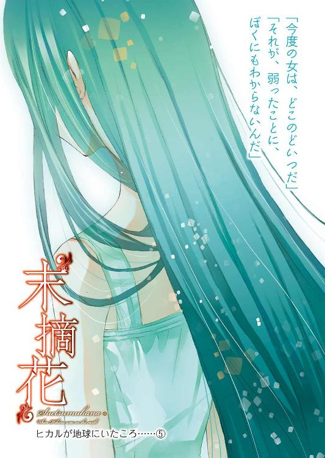
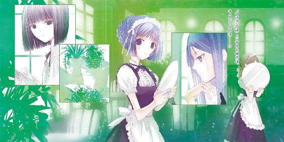
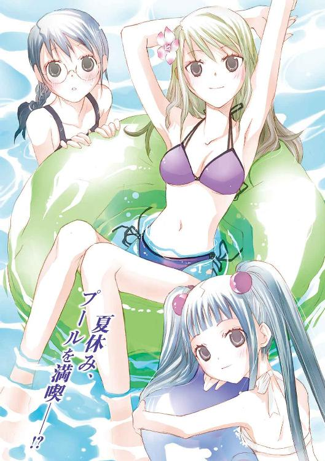
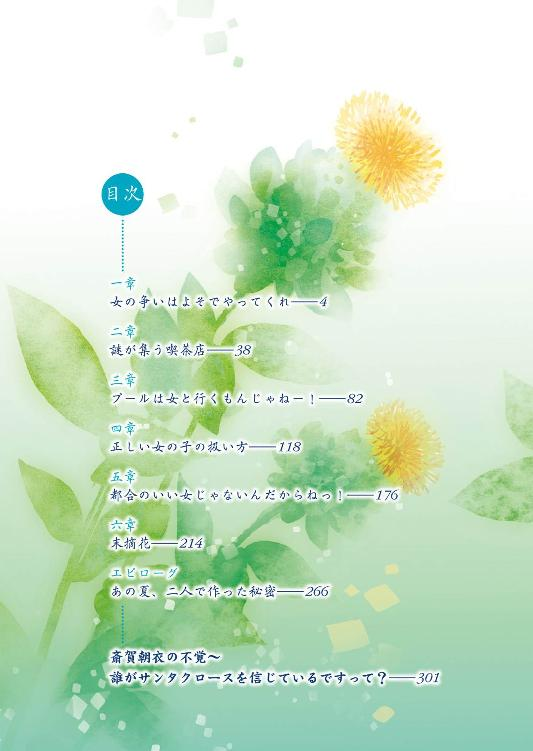

| "末摘花"ヒカルが地球にいたころ......(5) (ファミ通文庫) | |
| 野村 美月 & 竹岡 美穂 | |
| (2012) | |




本作品の全部または一部を無断で複製、転載、配信、送信したり、ホームページ上に転載することを禁止します。また、本作品の内容を無断で改変、改ざん等を行うことも禁止します。
本作品購入時にご承諾いただいた規約により、有償・無償にかかわらず本作品を第三者に譲渡することはできません。
本作品は本文縦組で制作されております。ごらんになるリーディングシステムにより、表示の差が認められることがあります。
かろやかに舞うように、花々の間を渡り歩くあなたは、神に魅入られそうなほどに美しく煌めいていた。
あなたの目は、清らかだった。
あなたの唇は、清らかだった。
あなたの手は、清らかだった。
あなたの吐息は、清らかだった。
ヒカル──あなたのすべては、どうしようもなく美しく清らかで、どろどろした闇の中でさえ光り輝いていて。
だからヒカル──。
「カウスリップを知っている？ 是光？」
耳元で、ふくよかな甘い声が聞こえた。
タオルケットにくるまり目を閉じる是光のかたわらを、それはまるで子守歌のように優しくやわらかく流れてゆく。
「春の草原に咲き乱れる、桜草に似た愛らしい黄色の花で、女の子たちはこの花を鞠のように束ねて、投げ合って、恋占いをしたんだよ。『ティッチー、トッチー、教えてよ。私は誰と結婚するの？』って無邪気に口ずさみながらね」
（またこいつは、朝っぱらからぺらぺらと......夏休みなんだから、もうちょっと寝かせろ......）
素肌にからまるタオルケットのほど良い湿り具合や、いい感じにあたたまった薄い敷き布団の感触を味わいながら、心の中でぼんやりとつぶやく。
その間も、ヒカルの花講座は続いている。
「カウスリップは、北欧神話で鍵を司る処女神フレイヤに捧げられ、〝鍵の花〟って呼ばれていたんだよ。キリスト教が広まってからは、〝聖母マリアの鍵〟とか〝聖ペテロの鍵〟なんて呼び方もされて、生命の再生を象徴する花になったんだ」
（ああ、そうか......どうでもいいぜ。つか女と寝泊まりした朝も、この調子で蘊蓄垂れ流してたのか？ いくらてめぇが、女みたいなツラした美少年の皇子様でも、うぜぇだろ......）
「カウスリップっていうのは、古い英語で、牛の糞って意味でね」
（おいおい、朝からウンコの話はよせ）
「釣り鐘型の花が、妖精たちの寝床にもなったところから、フェアリーカップとも呼ばれていて、こっちのほうがしっくりくるよね。ほら、是光、きみの隣にもキュートな妖精が寄り添っているよ」
ヒカルが甘い声で、くすくす笑う。
（なにをメルヘンなことを、言っているんだ）
だが、胸板から腹筋のあたりが妙にあたたかい。タオルケットにしては感触がなめらかで重さがありながらやわらかく......それに、鼻の下がむずむずとくすぐったくて、若草とミルクの甘ったるい香りがして......。
「ん？」
香り──だと？
ぱちりと目を開ける。
「おはよう、是光お兄ちゃん」
すべすべした頰と大きな瞳の女の子が、みずみずしいピンク色の唇で朝の挨拶をする。
「って、しーこ！」
是光はぎょっとし、布団に横たわったままの体勢で、しばし固まった。
しーここと若木紫織子は、可愛らしいクマさん模様のパジャマを着て、細くやわらかな黒髪をほどいた姿で、是光の胸にしがみついていた。
その横で、ギリシア神話に出てくる神様みたいな、ひらひらした白い布をまきつけたヒカルが、綺麗な目を細め、おかしそうに微笑んでいる。
（ったく、こいつは男のくせに宝塚みてーな格好をしやがって──。いや、それより、しーこだ）
是光は、がばっと身を起こした。
夏なので、上はランニングシャツで下は短パンだ。筋肉質な腕も足もむき出しで、この格好で、小学四年生の少女と同衾はマズイ！ 法律に引っかかりかねない。
「しーこ、おまえ！ 勝手に俺の布団にもぐりこむなって言ってるだろ」
「ケチぃ。いいじゃない。前は一緒に寝てくれたのに」
紫織子が不満そうに、すべすべした薔薇色の頰をぷん、とふくらませる。
「あれは特別だ。もう小四なんだから一人で寝ろ。添い寝が欲しけりゃ、こるりに頼め」
「お布団の中でぎゅっとすると、こるりは嫌がって逃げちゃうんだもん」
「まぁ......夏だし、暑ぃからな」
窓を開けても熱風が吹き込んでくるこの時期に猫を抱いて寝るのは、紫織子のほうも辛いだろう。
「だから、是光お兄ちゃんが添い寝して」
「ダメだ」
はっきりきっぱり言う。
紫織子が赤城の家にはじめて泊まった日は、紫織子の祖父が入院し、紫織子がすっかり元気をなくしていたので、本当に特別だったのだ。
祖父の朋彦が亡くなり、是光の妹として生活をともにするようになってからは、だいぶ元気になった。そうなると兄として、男の布団に気軽にもぐり込んだりせぬよう、きちんとしつけねばならない。
是光がそうした真面目な態度で紫織子に接していたため、はじめは『しーこが魅力的だからって、手を出しちゃダメだよ！』『しーこの元保護者として、最低あと十年は許可しないからね！』と騒いでいたヒカルも、是光がロリに走ることはないと安心したようで、この頃は、紫織子のマセた言動に汗をかきながら対応している是光を見て、楽しんでいる様子なのがムカツク。
「もぉっ、是光お兄ちゃんのケチ、ケチっ、ドケチっ。こるりー、是光お兄ちゃんが、しーこにケチケチなんだよー」
と、部屋の襖のところに、クールな顔でしゃがみ込んでいた白猫のこるりにまで、紫織子が文句を言う。こるりは瑠璃色の瞳をしらっとさせたまま、ピンク色の舌で、ちろちろと毛繕いをしている。
それを見て、紫織子がまたぷーっと頰をふくらませたあと、急にしゅんと肩を落とした。
「......おじいちゃんの夢を見て、淋しくなっちゃったから......是光お兄ちゃんのところへ来たのに」
「うっ」
是光の胸が、ずきっとする。
これはいつもの演技なのか？
（いや、俺だって日々学習してんだ。そう簡単にはだまされねーぞ。けど......しーこのじいさんが亡くなってから、まだ一ヶ月くれーなんだよな。夜に目が覚めて、人肌が恋しくなっても仕方ねーよな......）
「可哀相に、しーこ。大好きなお兄ちゃんに冷たくされて......」
ヒカルが同情に満ちた口調でささやく。
「あー......えーと」
いたいけな小さな背中に向かって、声をかけようかどうか葛藤する是光を、紫織子が肩越しにちらっと見て、また急いで前を向き、より深くうなだれる。
「ぐっ、ほ、本当に、どうしようもねーときは、俺んとこに来ても、その......いいんだぞ」
「ううん。もう大人なんだから、一人で我慢する」
背中を向けたまま、元気のない声でつぶやかれると、また喉がぐっとつまる。
「いや、小四は、そこまで大人じゃねーってゆーか。さっきああ言ったのは、淋しいのを無理して堪えろって意味じゃなくて」
「けど、あたし、本当の家族じゃないし......是光お兄ちゃんに迷惑かけるのヤだし......」
「バカなこと言うな！ 迷惑なわけねーだろっ。しーこはもう俺の......なんてーかホントの妹みたいなモンなんだからっ。だからマジで困ったときは、遠慮なく頼れ。どんどんしがみつけ」
朝っぱらからなにを主張しているのかと、顔がカァッと熱くなる。
紫織子がそっと振り返る。
まだちょっと警戒しているような目つきで是光を見つめていたが、やがて小さな顔に子供らしい明るい笑みがゆっくりと広がって、
「うんっ、是光お兄ちゃんっ」
是光にぎゅっとしがみつき、首筋にほおずりしはじめた。
「って、くすぐってーぞ。しがみつくのは本当に困ったときだけだ！ ほら、洗面所で顔洗って、ラジオ体操に行け」
紫織子を引き離そうとする是光を、こるりが、やれやれというように見ている。ギリシア風の衣装のヒカルがにっこりして、
「朝から兄妹仲良しだね」
などと言っている。
紫織子はすっかりご機嫌で、頰はつやつやし、目に涙のあともなく、
（ひょっとして、また引っかかったのか）
という疑惑が頭をかする。と、そのとき。
机の上で携帯がゴジラのテーマを奏でた。
「しーこ、また俺の携帯の着メロを変えたな！」
「地獄の猛犬のテーマとか捜したけどなかったから、代わりに」
「捜すな！ てか、人の携帯を勝手にいじるな」
手にとり着信を見る。
「式部？」
つぶやくなり、紫織子の耳がぴくりとする。
是光は通話ボタンを押した。
「おう」
無愛想な声で応じるなり、
「ご、ゴメンっ！ 早すぎだよね！ 寝てた？」
と、いきなりテンパりまくりの声が、鼓膜に突き刺さる。
「いや、起きてた」
「そう、よ、よかった......。本当にゴメン。赤城に電話しようって決めたら、すぐかけないと、また結局かけずに終わっちゃいそうで」
よくわからないことを、ぼそぼそと言う。
是光は顔をしかめた。
「またって、おまえ、そんなに何度も俺に電話しようとしてたのか？ なんか、ヤバイことでもあったのか？」
シリアスに尋ねると、うっ！ と声をつまらせて、
「......ヤバイってゆーか......え、えっと......日にち、決めてなかったなって」
「日にち？」
「だからその」
「是光、プールだよ」
ヒカルが耳元でささやく。
そういえば、終業式の日に、あらためてプールへ行こうと約束したのだった。
（ああ、そうか。そうだよな。日にちとか時間とか待ち合わせとか、俺から提案すべきだったよな）
葵や月夜子と出かけたときは、ヒカルが横からあれこれナビをしてくれたが、今回は完全に是光個人の約束なので、うっかりしていた。
自分の手際の悪さに、首筋がじわじわと熱くなる。
「悪ぃ。プールへ行くんだったよな。えっと、おまえ、いつが都合いい？」
是光が約束を覚えていないのではと心配していたのだろう。帆夏がホッとしたように息を吐き、
「い、いつでもいいけど、今週は？ 一日でも早く行っとかないと、待ってる間、心臓がもたな──ううん、なんでもないっ。とにかく絶対今週中！ もう今週中しかありえない！ あんたと違って、夏休みは予定が詰まりまくりで忙しいんだから」
と、今度は急にたたみかけるように言う。
「今週か......別に俺は予定ねーし、水曜でも木曜でも」
カレンダーを眺めながら話していると。
「是光お兄ちゃん、あたしも一緒にプールに行きたい！ いいでしょう」
いきなりしーこが叫んだ。
「は？」
惚ける是光の膝に、小さな手のひらをぴたりとつけて揺すりながら、
「ねぇねぇ、お願い、お願い、是光お兄ちゃん。夏休みになったら、お兄ちゃんとプールへ行きたいって、ずぅぅぅっと思ってたの。是光お兄ちゃんも、夏休みに遊びに連れてってくれるって、しーこと約束したよね」
と、大きな瞳で訴える。
「ああ、わかった。今度連れてってやるから。えっと来週」
「いやっ。しーこも今週がいい」
まっすぐな髪をさわさわ揺すって、駄々をこねる。
携帯の向こうから、帆夏が息をひそめて耳をすましているのが感じられて、是光は弱ってしまった。
夏休み前は、月夜子の事件で手いっぱいで、紫織子と遊んでやる余裕がなかった。淋しい思いをさせているのではないかという罪悪感があり、夏休みはその埋め合わせをしようと決めていたので、突き放せない。
「仕方ねーな。つか二連ちゃんでプールか。体ふやけそうだぜ」
「二人きりじゃなくて、みんなと行きたい」
「なに！」
（って、みんなって、俺と式部と三人一緒にってことか!?）
帆夏も、
「！」
と息をのんだようだった。
紫織子が、子供っぽい無垢な瞳で見上げてくる。
「だって是光お兄ちゃんと二人きりでプールなんか行ったら、お兄ちゃんが誘拐犯と間違えられて、補導されちゃうもの」
（なんだ、そりゃ！）
ヒカルがぷっと吹き出し、携帯の向こうからも、
「......ありえそう」
と、掠れた声が聞こえた。
「是光お兄ちゃんが牢屋に入れられちゃったら、しーこ、困っちゃうよ。お兄ちゃんがロリコン誘拐犯だなんて」
「赤城が、ロリコン誘拐犯......！」
携帯の向こうでまた上擦った声がした。
「そんなことになったら、お兄ちゃん、退学になっちゃうかもしれない。就職も身元調査とかされて採用してもらえなくて、プー太郎でヤクザになっちゃうかも」
「ありそう！」
「式部！ いちいち相づち打つな！」
つい叫んでしまう。
（つかヒカル、てめぇも、にやにやすんな！）
引きつる是光の頰にやわらかな頰を押しつけ、紫織子が携帯に向かって訴える。
「えっと、式部さん、お願いしますっ。是光お兄ちゃんが、そんな転落人生まっしぐらにならないように、しーこたちと一緒にプールへ行ってください。式部さんだけが頼りなんです」
（おいおい、最初にプールへ行く約束をしていたのは、俺と式部だぞ。なんで、俺としーこがプールへ行く同伴を、式部に頼んでんだ？）
どう考えてもおかしい。どこで前提が入れ替わった？
啞然とする是光の耳に、
「わかった！ あたしが、しーこちゃんと赤城の保護者としてプールについていく！」
と雄々しく断言する帆夏の声が聞こえた。
是光の隣でヒカルが苦笑しながら、
「式部さんって、しっかりしているようでいて、詐欺にあいやすいタイプだなぁ」
と、つぶやいた。
◇ ◇ ◇
そんなわけで、二日後の木曜日に、帆夏と紫織子の三人で、近場のプールへ行くことになった。
「モテモテだね、是光」
朝食のあと。紫織子が「早速準備しなきゃ」と気の早いことを言って、自分の部屋にすっ飛んでいったあと、きしきし鳴る廊下を歩きながら、ヒカルにからかわれるのが、わずらわしい。
「そんなんじゃねーっ。妹とクラスメイトと、ちょこっと泳ぎに行くだけだ。式部には色々世話になったから、その礼っつーか。そう、礼だ！」
「ふつー、お礼で、単なるクラスメイトの女の子と二人っきりでプールには行かないと思うけど」
「二人じゃねーよ。しーこも一緒だ」
「そうだったね、きっと式部さん今頃、後悔しまくってるよ。なんで、しーこの同伴をオーケイしちゃったんだろうって。枕を抱えて、ごろごろ転がってるんじゃないかな。せっかくのデートが妹つきだなんて」
「デートじゃねーし」
「違うの？」
そう目を丸くされると、急に不安になってくる。
へ？ あ......あれ？ ひょっとして、デート──だったのか？
どこからがデートで、どこからが単なるつきあいなのか、これまでさんざん女子に怖がられ避けられまくってきた是光には、いまひとつわからない。
（ただ、式部にはマジに世話になりっぱなしだから、式部がプールに行きたいっつーなら、つきあってやりたいっつーか。俺が一方的に助けられるばっかじゃなくて、あいつとは対等でいたいっつーか、いい仲間でいたいっつーか。けど、男と女が二人で出かけると、全部デートになっちまうのか！）
腕組みして唸りはじめた是光に、ヒカルが呆れ顔で、
「是光、きみにとってのデートの定義ってなに？」
よりによって一番答えにくい質問をする。
今、まさに、それを考え中だというのに。
是光は眉間に皺を寄せて、答えた。
「最中にキスしたら──いや、手を繫いだら、デートだ」
「へ？」
ヒカルが惚ける。
「手を繫がずに歩く分には、デートじゃねぇ」
なにを幽霊相手に、顔を熱くして語っているんだ、俺は。はたから見たら、誰もいない廊下で、握り拳をつくってわめいている痛いやつじゃねーか。
ヒカルはまじまじと是光を見ていたが、気が抜けたのか、是光があんまり歯を食いしばっているので、気の毒に思ったのか、
「まぁ......きみらしい基準だね」
と、つぶやいた。
「っっ、もうおまえ黙ってろ」
恥ずかしさに顔をそむけて、ポケットから携帯を出して、開く。普段メールチェックなぞすることはないが、夏休みに入ってから頻繁に受信の確認をしている。
葵のことが気になっていたためだ。
──助けてくださって、ありがとうございました。
夏休みに入る少し前、ヒカルの兄の一朱が、葵を郊外の別宅に連れ込む騒ぎがあった。
葵は無事で、終業式の朝に、朝衣と一緒に是光の教室までやってきて、深々と頭を下げていた。間一髪で救出されたとはいえ、やはりショックが大きかったのだろう。顔色が悪く、元気がなかった。
──わたしも、一朱さんの言葉をうっかり信じてしまって、世間知らずのバカだったんです。もう二度とあんなことがないように、気持ちを引きしめます。
肩を小さくすくめ、目を伏せ気味にして、自分を責めているような思いつめた口調で言っていた。
隣に、冷ややかな顔で立っていた朝衣が、
──そうね。だから野良犬みたいながさつな男にも、もう近づかないほうがいいわ。
と嫌みを言ったときも、瞳をわずかに揺らしたが、
──迷惑をかけて、ごめんなさい、赤城くん。
と、うつむいたまま掠れた声で言い、朝衣に連れられてすぐに去っていった。
そんな葵のことをヒカルはひどく心配していて、是光も同じ気持ちだったので、何度かメールを打った。
──大丈夫か？
──俺のことは気にすることねーから、なんかあったら言えよ。
──休みに入ったけど、元気にしてるか？
一人の女相手にこんなにマメにメールを送ったのは、夕雨のところへ通ったとき以来だった。葵の返事は短く、大抵、
──わたしは大丈夫ですから。
と結ばれていて、今、どうしているのか。どんな毎日を過ごしているか。なにを考えているのか。本当に辛くはないのか──具体的な状況が見えず、余計に心配だった。
葵から連絡がないか確認しているとわかって、ヒカルも真面目な顔つきになり、横から携帯をのぞき見る。
「葵からは、来てねーな」
つぶやくと、心配そうに目を曇らせて、
「......うん。葵さんには朝ちゃんも俊吾さんもついているから、この前みたいなことは起こらないと思うけど」
腹違いの兄のことを、思い出しているのだろうか。
葵ちゃんのことは大嫌いだけど、葵ちゃんはヒカルの最愛だから、お人形みたいに大事にしてあげると、ねっとりした目で語っていた正妻の息子、一朱。
──ぼくはなにをしても許される身なんだよ。
女装趣味を暴かれても、妖しく笑いながら平然とそう告げた。
一朱は蜘蛛の化身なのだと、月夜子は震えながら言っていた。
昔、夫とその愛人を喰い殺した六条という女が、いたのだと。
その言葉通り、あのときの一朱は、現代によみがえった物の怪のような暗々とした狂気をまとっていた。
それを思い出し、背筋が冷たくなりながら、一朱が葵に対して行ったことへの怒りも同時に込み上げてきて、
「万一あの変態兄貴が現れても、またぶん殴ってやるぜ」
と唸った。
「頼もしいよ」
ヒカルがひっそりと笑う。
一朱について、ヒカルは多くを語らなかった。
家族のことになると、口を閉ざしたり話をそらしたりするのは、前からだ。
（兄貴のほうは、ヒカルにえらく執心してたみたいだが......こいつは、兄貴のことどう思ってんだろう）
ぼくは愛人の子供だから、兄と言葉を交わすことはほとんどなかったと、静かな口調で、以前に話していたが......。
ヒカルが時折浮かべる暗い眼差しの理由を、知りたいと思うし、知るのが怖いような気もする。
ヒカルは自殺だったのでしょうという月夜子のあの言葉も、ずっと耳の中に残っている。
（今は聞かねーよ。けど、いつか話してくれるんだよな）
その日はいつになるのか。
もしかしたら、別れのときなのかもしれない。
そう考えたら、胸の奥が軋むような感覚があった。
暗い空気を変えたくて、ギャグのひとつでも飛ばしてみようかと思案したとき。
紫織子の部屋から、唸り声が聞こえた。
「あーっ、もう、これも入らないっ」
ひどく焦れているようで、「全然ダメっ」とか「はみ出ちゃう」とか「パツパツだよ～こるりぃ」という声と一緒に、ぽすぽすと畳を踏みならす音までする。
「もうもうもう、最っ低ぇぇぇ」
足踏みの音が強くなる。
「どうした、しーこ」
「あ、是光、今、開けちゃダメだよ」
ヒカルが手をのばして止めるが、その手はいつものように是光の手をあっさり通過してゆき、襖が開いた。
とたんに、
「きゃっ」
と可愛い悲鳴が上がる。
是光も、
「うぉっ」
と叫ぶ。
畳に、ピンクや黄色の水着が花びらのように散らばっていて、その真ん中で、紫織子が着替えていたのだ。
裾にフリルのついた水玉模様のワンピース型の水着は、ちょうど紫織子の腰の部分で止まっていて、白い背中が是光の目に、ぱっと飛び込んでくる。
「やだー。なんで急に来るのー、是光お兄ちゃんのエッチーっ！」
両手で薄い胸を抱え込んだ紫織子が、真っ赤な顔で抗議する。
「す、すまん！」
普段、謝るのも謝られるのも嫌いだと主張している是光だが、これは謝るしかない。
焦って、背中を向ける。
「もーっ、エッチー、エッチー、へんたーい」
是光の布団にもぐりこんだり、お風呂場の戸を開けたりするのは平気なくせに、裸を見られるのは恥ずかしいという気持ちはあるらしく、悔しそうに、「エッチー」と繰り返す。
「だから、今はダメって言ったのに」
（おせーんだよ）
溜息をつく友人に、心の中で八つ当たりをしながら、
「悪かった。着替えてたんだな」
と、背中を向けたまま、また謝る。
「うぅぅ、プールに行くときの水着を選んでたんだよ。去年、ヒカルがいっぱい買ってくれたから。こんなにいらないって言ってるのに、きっとしーこに似合うからって、毎日一着ずつリボンをかけて、持ってきて」
（ヒカル......おまえ、それは完全に変態だ......）
小学三年生の女子児童の水着を買う中学三年生の男子を、店員はどう思っただろう。
それともヒカルほどの美少年なら、小学生サイズのピンクのビキニを買っても許されるのだろうか。まぁ、優しいお兄さんと、うっとりされるのだろうか。
ヒカルはとろけそうな顔で、
「だって、どれもしーこにぴったりで、素通りするなんてできなかったんだよ。水着売り場の前を通るたび、水着がしーこに着てほしいって訴えてるみたいで」
（それはおまえの妄想だ。つか、男が水着売り場をうろうろするなよ。しかも小学生女児の）
うかれる友人を、ジト目で見る。
後ろで、紫織子がまた「うぅ」と唸った。
「一生分くらいプレゼントしてもらったのに、みんな小さくなって、着られなくなっちゃった」
「成長したんだね、しーこ」
ヒカルが感激し、目を細める。
（おまえが言うと、やらしいぞ）
「そいつは水着が縮んだんじゃなくて、しーこがデカくなったんだ。成長期だし、しゃーねーだろう」
「そうだけど......」
紫織子の声はしゅんとしている。
「......せっかく是光お兄ちゃんとプールへ行くんだから、一番素敵な水着を着るんだってはりきってたんだよ。それに、ヒカルの形見だったのに」
「しーこ......」
ヒカルはますますジィンとしている。
水玉模様のフリルの水着が形見なのはどうかと思うが、是光もちょっとしんみりしかけたとき。
「こうなったらもう、ロリコン専門のネットショップにあたしの写真付きで、全部売り飛ばすしかないわっ」
「って、ヒカルの形見じゃなかったのかよ！」
振り返って叫ぶ。
ヒカルも、
「聞き間違いだよね、しーこ」
と情けない顔つきになる。
紫織子は水着を着てはいたが、サイズが小さくパツパツで、またきゃっと叫んでしゃがみ込み、落ちている水着をかき集めて、体を隠す。
横で、こるりがほっそりした体をかがめ、クールに足をなめている。
紫織子は涙目で、キッと是光を睨みながら、
「着れなくなった水着を眺めて、ヒカルを思い出してめそめそしてるより、換金して新しい水着を買ってハッピーになったほうが、生産的だもの」
きっぱり言った。
「町の古着屋じゃ未成年が持ち込んだ服は買ってくれないけど、ネットの怪しいショップなら、うまくやればきっと高く売れるわ。ヒカルも、自分のプレゼントがあたしの役にたって喜ぶはずよ」
「うぅっ、そりゃしーこがハッピーになったら嬉しいけど」
「いーや！ ヒカルは血の涙を流しているぞ！ ヒカルはおまえをレディにしようとしてたんだからな！ レディは怪しいショップに水着を売りつけたりしねー！ つか、いい加減、そういう発想はやめろ！」
「でも、水着が......プールが......。授業で着てるスク水はあるけど......あれ、いかにも小学生ですってアピールしてるとこが姑息なだけで、全然可愛くないもん......負けちゃう」
なにに負けるんだ？ 小学生なんだから小学生らしいものを着てもいいだろうと思ったが、紫織子は真剣に悩んでいるようだった。うつむいて、もじもじしている。
「しーこは女の子だもの。やっぱり、お兄ちゃんとのはじめてのお出かけは、新しい水着でお洒落したいんだよ」
ヒカルが援護するようにささやく。是光は顔をしかめ言ってやった。
「俺が、買ってやる」
一時間後。
街の大通りを、満面の笑顔の紫織子が、是光の隣でスキップを踏むような足取りで歩いていた。
「是光お兄ちゃんも、一緒に選んでね」
はしゃいだ声で言う。
「女の水着なんて、わかんねーよ」
「いーのっ。お兄ちゃんが好きなやつを着たいの」
「是光、ぼくに任せて！ そうだねー、しーこは明るい若草色のセパレーツなんて似合うと思うんだ。スイートピーみたいなピンクのビキニも捨てがたいし、スノードロップみたいな白いワンピースタイプも、しーこの可憐な魅力を引き立てるよね。あー、今年もしーこの水着を選べるなんて、ぼくは幸せ者だよ」
ヒカルがでれでれなのも、うっとうしい。
そんな風にしてデパートの水着売り場に足を踏み入れると、店員が是光を見て、あからさまに顔を引きつらせた。
ばさばさの赤い髪に鋭い目つきの少年が、猫背で頰を鋭く引きつらせてあたりを睨んでいるので、危険人物と思ったのだろう。隣で紫織子が愛くるしい笑みを浮かべていなければ、通報されてしまったかもしれない。
そんな視線には慣れっこだが、女の水着だらけの場所はやはり居心地が悪い。ますます首をすくめて猫背になっていると、知っている声が聞こえた。
「あー、もう、どれにしよう。こっちのパープルのワンピかな。それとも、あっちの黒のビキニ？ うぅぅ、決まんない」
「ほのちゃんはスマートだから、どっちも似合うよ～。でも、ほのちゃんが服を買うのに迷うなんて珍しいね。いつもは、わたしがぐずぐず考えてる間に、さっと決めちゃうのに」
「女の意地がかかってるのよっ。今年の夏は、最っっっ高の水着じゃなきゃ」
「さいこーの水着って？」
「む、胸が、大きく見えるやつとか......」
「ほえ？ 胸？」
「だって、胸が大きいほうと小さいほう、どっちが好きって訊いたら、大きいほうって......ううん、なんでもない。とにかく、負けられないのよ」
試着室の前で、眼鏡にお下げの女と話していたのは、思ったとおり帆夏だった。しかも、あざやかな紫のワンピース型の水着に身を包んだ。
水着は胸元の切り込みがえらく深く、腰に巻いたパレオからすらりとした足が伸びているのがまぶしい。ヒカルが、
「式部さん、いいっ。ちょっぴりアダルトな魅力だね、すごく素敵だ」
と、目を輝かせる。
帆夏が是光に気づいて、
「わ！」
と声を上げた。
「どうしたの？ ほのちゃん？ うぐっ、赤城くんっ」
お下げの級長も、是光を見てのけぞる。
「ななななな何故、赤城くんが女の子の水着売り場にっ！ 赤城くん、水着コレクターだったの？ お部屋に水着を飾ったり、水着にほおずりして、ぐへぐへしてる人だったの？」
「人を勝手に変態にして、軽蔑の眼差しで見るなーっ！ 俺はこいつの付き添いだっつーの」
帆夏とみちるの視線が、是光の隣に立っているスカートから丸い膝小僧をちょこんとのぞかせた女の子に向かう。
「やややっぱり、赤城くんってロリ──」
「ちげー！」
是光に睨まれて、みちるがびくっと肩を跳ね上げ、帆夏の脇に隠れる。
帆夏は試着室のカーテンを右手で持ち上げ、それで体を隠し、混乱しているような怒っているような赤い顔で是光を睨んでいたが、紫織子を見て、一瞬驚きの表情を浮かべ、それからさらにキッと眉を上げた。
一方で、紫織子が帆夏に向かって、子供らしくにっこり微笑む。
「はじめまして、是光お兄ちゃんと一緒に暮らしている若木紫織子です。もしかして式部さん、ですか？」
無邪気な小鳥のように首を傾げる。
帆夏がハッとしたように瞳を揺らし、自分もすぐににっこりし、
「そうよ、こんにちは、しーこちゃん」
と挨拶する。
「わ、わたしは赤城くんのクラスの級長で──」
みちるも名乗ろうとするが、それをスルーして紫織子が、さらにきらきらした愛くるしい笑顔になる。
そのまぶしさと可憐さは、ヒカルが、
「しーこ、可愛すぎるっ。天使だよ！ 妖精だよ！」
と是光の横で、じたじたばたばたおかしな踊りをみせるほどだ。
（なんだ、この気合いの入ったにっこりは？ 相手は式部だぞ。しーこが大好きな分厚い財布を持った中年のおっさんじゃねーぞ）
困惑する是光の腕に、紫織子がすべすべした細い腕をぐいっとからめる。
帆夏の眉がぴくりと震える。
「さきほどは、しーこと是光お兄ちゃんがプールに行くのに、ついてきてくれるって約束してくれて、ありがとうございました。さっそく是光お兄ちゃんと水着を買いに来たんです。ねぇ、是光お兄ちゃん。お兄ちゃんが、しーこにぴったりの水着を選んでくれるんだよねー」
「って、俺は──」
是光が口を開くより先に、帆夏がいつもより高い声でしゃべり出す。
「どういたしまして。赤城一人じゃ子供のお守りは大変そうだから、協力してあげようと思って。子供相手って、ホント体力消耗するしー。そうだ、あたしの水着も赤城に選んでもらおっかなー」
試着室のカーテンを握りしめていた手をはなし、さらに腰に巻かれていた薄いパレオの紐もほどく。ぱさりと音がして、切り込みの深いアダルトな紫のワンピース型の水着に包まれた細い腰や長い足がさらされた。
さらに、足のラインを強調するように右足をすっと前に出し、腰に手をあてる。
「式部さん、最高！ 太陽を浴びて情熱的に燃え上がるヘリオトロープだね」
ヒカルは大絶賛だが、是光は、
（なんだ？ なんか、急に空気がぴりぴりしてきたぞ）
と、やっぱり戸惑っていた。
それに、紫織子だけでなく帆夏の水着も選べだなんて、無茶だ。
「俺、女の水着とかまったく知識ねーからっ」
眉をつり上げ主張するが、是光よりもっと目を三角にした帆夏と紫織子に、
「赤城！ この水着はどう？ むらむらする？」
「是光お兄ちゃん、こっちのビキニとこっちのワンピース、どっちがお兄ちゃんの好み？」
「もっと胸のとこ、がばっと開いてたほうがいい？ それなら、あっちの豹柄を試着してみるから、待ってて」
「是光お兄ちゃん、着てみたよっ。ちゃんと感想を言って」
「ほら、豹柄だよ、赤城。しっかり目を開いて評価してっ」
と、迫られ、額に汗しながら、
「あー、うー、もっと布の多いやつにしろ、しーこ」
「式部はその......とりあえず豹柄はよせ。って、ゼブラも手にとるなー」
と、もごもご意見するはめになったのだった。ヒカルが是光の上を、ふわふわ浮きながら、
「水着の女の子って、やっぱりズキッとくるなー。ねぇ、是光、向こうの黄色い花模様のやつ、絶対しーこに似合うから試してみてよ。それと、あっちのつるっとしたビニール素材のシルバーのやつ！ あれ着た式部さんを見てみたいなー。頼んでよ、是光」
と、勝手なことを言う。
（てめぇが着てろ！ 能天気幽霊！）
「赤城、なに上向いてんのっ。ちゃんとこっち見てよ」
「是光お兄ちゃん！ 背中の紐がうまく結べないの。結んで」
「あああ赤城......っ！ あたしも、腰の紐がからまっちゃって」
「是光お兄ちゃん！ 水着がきつくて脱げなくなっちゃった。手伝って」
「赤城！ スカートのホックに紐が引っかかって、足にぐるぐるまきついて、それでそれでっ──」
「ほのちゃん......わたし、そろそろ塾が......」
「赤城！ 早く！」
「是光お兄ちゃん、助けて！」
試着室のあっちとこっちで、呼ぶ声がする。
店員は完全に引いていて、近づいてこない。
是光は首を左に向けたり右へ向けたりしながら、心の中でわめいたのだった。
（ああああああああもう、知るか！ おまえら、上と下に貝殻でも貼り付けとけー！）
◇ ◇ ◇
帰宅後。
是光は自室の畳に胡座をかき、ぐったりと肩を落としていた。
「......俺は、金、輪、際、女の買い物にはつきあわねー」
一体なんだって、あの二人はあんなに張り合っていたんだ。家までの帰り道でも紫織子は水着の入ったビニールの手提げ袋をぎゅっと握りしめて、
「負けないんだから」
と、つぶやいていた。
「ぼくは楽しかったけどなー。式部さんもしーこも、すごぉく可愛かったし、いいもの見せてもらっちゃったよ」
「......可愛いかぁ？ 目が血走ってたぞ、二人とも」
ひょっとして夏休みで夜更かしして、ハイになっていたのか？ でなきゃあの異様なテンションは説明がつかない。
「......俺は今日一日で夏休みの半分を使い果たした気分だぜ。あさって、あの二人とプールへ行くのかよー。っっ、早まった」
「そう落ち込まないでよ、是光。ぼくもフォローするから」
「って、おまえ、あっちの水玉がいいとか、こっちのハイレグがいいとか、はしゃいでただけだろーが」
「はは......つい男の本能が」
是光は深い溜息をついた。
「もう、いい。それよか、おまえの次の〝心残り〟を、片付けねーとな」
「あ、覚えててくれたんだ」
「当然だ、わずらわしい幽霊に、とっとと成仏してもらいたいからな。夏休み中に、さくさくやっつけてやる」
「うぅっ、今日の是光は、冷たくて、やさぐれてるよ」
ヒカルがしゅんとする。
「ほっとけ。で？ 今度の女は、どこのどいつだ」
「それが、弱ったことに、ぼくにもわからないんだ」
「へ？」
目をむく是光に、ヒカルは、大抵の女の子がうっとりと見惚れてしまうような、甘く爽やかな笑みを浮かべた。
「彼女の本当の名前も、年齢も、住んでいるところも、顔も、声も──なにひとつ、ぼくは知らないから」
（とうとう、この日が来ちゃった）
〝サフラン〟は、カレンダーにオレンジ色の水性ペンで最後の×印を書き込んだ。心を落ち着けるおまじないに、長椅子にかけてある黒のセーブルを青白い手のひらで、すっとひと撫でしてから、母のそのまた母の代から〝サフラン〟の家に仕える忠実な家政婦に、
「お昼ごはんは、お外で食べます」
と告げて家を出た。
（ポーラスターくんは、約束を覚えているかしら......）
インターネットを通じて彼と知り合ったのは、去年の秋だ。
きっかけは、〝サフラン〟が開いているブログのコメント欄に、彼が書き込みをしてきたことで、彼のハンドルはポーラスターといった。
〝サフラン〟が大切に育てているハーブをブログにアップしたのを、ポーラスターくんが、『きみのお友達のリリアンさんは、知的ですっきりしていて、とても素敵だね』と言ってくれたのが、二人の交流のはじまりだった。
リリアンさんは、〝サフラン〟がセージにつけた愛称だ。
他にも、カモミールのコゼットさんや、レモンバームのルイくんや、フェンネルのレティシアさんや、アロエのフィリップくんや、ローズマリーのステラさんや、たくさんのハーブたちが、〝サフラン〟のお屋敷で、一緒に暮らしている。
植物や持ち物に愛称をつけるのは子供の頃からの癖で、そんな〝サフラン〟をブログの男性読者たちは、無邪気で可愛いというが、たまに『電波！』とか『キャラ作りすぎ。コビてんじゃねーよ』なんて書き込みもある。多分、書いているのは〝サフラン〟の人気に嫉妬している女の子たちだ。
けど、男の子の読者も女の子の読者も、〝サフラン〟に興味は持っていても、リリアンさんやフィリップくんに関心はない。
コメント欄に書き込まれる内容は、大抵〝サフラン〟個人に関することばかりだ。
きっとハーブの愛好者は、もっと専門的なブログやホームページへゆくのだろう。
〝サフラン〟のブログは、お嬢様の日常を綴った日記だと読者は思っている。だから、ハーブのことなんて気にとめたりしない。
けどポーラスターくんは、『今日のステラさんは、生き生きしているね』とか『コゼットさんはちょっと元気がないね。置き場所を変えてみたら？』とか、熱心に書き込んでくれた。
それで、〝サフラン〟からも返事をするうちに、個人的なメールのやりとりがはじまり、どんどん親しくなっていったのだ。
──きみに直接会って、伝えたいことがあるんだ。今度、ぼくと会ってくれるかな。
ポーラスターくんからそんな申し出があったのは、今年の春──ゴールデンウイークに入る少し前のことだった。
そのメールを見たとき、〝サフラン〟は心臓がドキン！ とし、鼻のてっぺんがむずむずした。
〝伝えたいこと〟って、愛の告白？
以前から、そんな予感はしていた。
〝サフラン〟に対するポーラスターくんのメールは、いつも甘やかでロマンチックで、優しく誘っているようだったから。
でも、ポーラスターくんに、リアルで会う？
それは、ちょっと怖い。
メールでのポーラスターくんは、優しくてちょっぴり浮世離れしていて、たまにクサイ台詞を吐く植物オタクな男の子で、悪い人じゃないと思う。
けど、リアルで会ったら、メールみたいに気軽に話せるかどうかわからない。
それに、ポーラスターくんがリアルの〝サフラン〟を見て、どんな感想を抱くのかも......。
鼻のてっぺんが、カァッと燃え上がる。
やっぱり怖い！
だから、遠回しな断りのつもりで、こう書いた。
──もし、ポーラスターくんが、夏休みが来るまで今と変わらない気持ちでわたしを想い続けることができて、それで夏休みが終わる前にわたしを見つけることができたら、ポーラスターくんに会ってもいいよ。〝伝えたいこと〟も、聞いてあげる。
ポーラスターくんは、
──うん。わかった。約束しよう。期間は、夏休みの最初の水曜日から夏休みが終わる日まで。場所は、きみがお気に入りだっていってた、あの紅茶のお店にしよう。ぼくは目立つように、夏空みたいな爽やかな白と青のキャップをかぶってゆくよ。夏が来るまで、きみのこと、わくわくしながら考えているよ。そうして、深い森の中からでも、広大な草原の中からでも、必ずきみという素敵な花を見つけてみせるよ。
と、まただいぶクサくて大げさで、けど〝サフラン〟をくらっとさせる甘い返事をくれた。
今は盛り上がっているけれど、夏休みが来るまでに〝サフラン〟が意地悪なことを書いたり、素っ気ない態度をとっていれば、ポーラスターくんは〝サフラン〟に会いたいなんて思わないはずだ。
それにもし、夏休みまで〝サフラン〟を想い続けて、約束の場所に現れたとしても、ポーラスターくんは〝サフラン〟を見つけることはできない。
絶対に！
けど、そんな心配はする必要がなく、ポーラスターくんは、ゴールデンウイークを過ぎた頃から、ぱったりメールを寄越さなくなってしまったし、コメント欄へ書き込むこともなくなった。
世間知らずなところがある反面、気配りができる人っぽかったから、きっと会いたくないという〝サフラン〟の真意を読んで、〝サフラン〟自身への興味も失ったのだろう。
けど、いくらなんでも手のひらを返すのが、早すぎじゃないか。
もうちょっと粘ったって、いいんじゃないか。
そんな風に思わないでもなかったが、これでよいのだとも思った。
きっと、夏休みに入って約束の日が訪れても、ポーラスターくんは店には現れない。
それでいいんだ。
「なのに、わたしってば、なんで馬鹿正直にお店へ来ちゃったのかな」
絵本に出てくるような素朴で可愛らしい紅茶専門店ボンヌ・シャンスの前で、〝サフラン〟は、だらっとうなだれた。
頭上から、夏の陽射しが痛いほど照りつけてくる。
「きっとポーラスターくんは、約束なんてもう覚えてないだろうし。帰ったほうがいいんだから」
けど、もし──。
もしも、ポーラスターくんが約束をはたしてくれたら。
爽やかな青と白のキャップをかぶって、〝サフラン〟の前に現れたら。
鼻のてっぺんが、じわじわと熱くなる。
「ひ、一目くらい......見てみたい、かも」
そうだ。どうせポーラスターくんにも誰にも〝サフラン〟を見つけられっこないんだから。
（今日一日だけ......待ってみよう）
本当に一日だけ。
せっかくここまで来たんだから。
（ぽ、ポーラスターくんなんて、メールではカッコいいこと言って王子様っぽくしてるけど、リアルではオタクで非モテで草食系で、きっと運動不足でおなかもぽっこりして、ニキビとかもあって、女子にキモいって避けられてるサエない男の子で、がっかりするに決まってるんだけど......さ）
店に入り、ドキドキと高鳴る心臓の音を聞きながら、彼を待つ。まだ開店したばかりで、客は他に誰もいない。
それが一時間、二時間と過ぎるうちに、あたたかみのあるカントリー調の木の椅子が、ひとつ、ふたつと埋まってゆく。その間を、フリルの白いエプロンがアンティークで可愛いと評判の制服を着たウェイトレスの女の子たちが、エプロンとスカートの裾をさらさら揺らして動き回る。
白と青のキャップの男の子は、まだ現れない。
（来るわけない）
（どうせ、来ない）
（来たって、会いたくない）
（そうよ、ああ会いたくないけどっ──でも、ちょっとだけ会いたい）
そんな矛盾した気持ちで胸がいっぱいになって、はじけそうだ。鼻のてっぺんが、どうしようもなくむずむずしてくる。
そのとき。
「いらっしゃいませー」
ドアについた鐘が鳴り、この店には珍しい男性客が入ってきた。
頭に、夏の空のような青と白の爽やかなキャップをかぶっている。
「！」
（ま、まさか──）
〝サフラン〟は息を止めた。
明るい声を張り上げてお客様のお出迎えをしたウェイトレスも、びくっと肩を揺らす。
そればかりか、他の客も一斉に固まった。
（ポーラスターくんは......オタクで......非モテで、草食系で......）
店のドアのところに立ち、細い体を猫背気味にかがめ、鋭すぎる目でじろりと店内を見渡していたのは、尖った真っ赤な髪の、引きつった頰の、つり上がった眉の──凶悪な野良犬みたいな少年だった。
◇ ◇ ◇
（って！ 客、女だらけじゃねーか！）
是光は、食いつくような視線で店内を睨み回したあと、思いきり顔をしかめた。
いかにも女が好きそうな、外国の田舎風の外装を見たときから、嫌な予感がしていたのだ。中も外と同じく素朴で可愛らしいイメージで、木の椅子やテーブルがあたたかみを演出しており、壁には爽やかな風景画が飾られ、窓際には花や緑を植えたお洒落な鉢が、いくつも並んでいる。
カウンターに、おだやかな顔つきの中年の男のウェイターが一人いて、おそらく彼が店長なのだろう。外国製の紅茶の缶を手にしたまま、目を丸くして是光を見ている。
ひらひらした白いエプロン姿のウェイトレスも、頰を引きつらせ凍り付いている。
客も同様で、ひとつのテーブルを占拠して、おしゃべりに花を咲かせていた今時風の女の子たちは、喉をしめつけられたかのように沈黙し、書類鞄を隣の席に置き新聞を広げてくつろいでいた客は、しきりとおしぼりで顔をぬぐいはじめ、一人席で携帯をいじりながら紅茶を味わっていたお姉さんはネイルをほどこした指先を震わせ、店の一番隅の壁際で文庫のページをめくっていた是光と同じ年頃の少女も手を止めて、涼しげな瞳でうかがうようにそっと是光のほうを見た。
（くそ、若い女は、全員それらしく見えるぜ）
ゆうべのヒカルとのやりとりを思い出す。
──彼女の本当の名前も、年齢も、住んでいるところも、顔も、声も──なにひとつ、ぼくは知らないから。
しゃあしゃあとした顔で、はた迷惑な幽霊は言った。
──どういうことだよ！ それ！
是光がこめかみをひくつかせて身を乗り出すと、彼女とはインターネットを通じて知り合ったのだと、嬉しげに話しはじめた。
──〝暮れの藍色〟通称〝くれあい〟っていうブログを開いててね、ささやかな日常を綴った日記が可愛い！ って男性読者に大評判で、アクセス数も高い人気ブロガーなんだよ。
実際に、携帯から〝暮れの藍色〟にアクセスしてみる。
すると、夜のはじまりを思わせる上品な薄い藍色の背景をバックにしたブログが現れた。
管理人の名前は、〝サフラン〟。
これが彼女のネット上の呼び名らしい。
──ぼくは、二人きりのやりとりのときは〝サフルールさん〟って呼んでたけどね。
──サフルール？
──そう。親しい人にだけ教える特別な呼び名だって、彼女は言ってた。〝くれあい語〟で、サフランをそう呼ぶんだって。それでぼくはズキッときちゃって、すっかり彼女のトリコになっちゃったのさ。
──くれあい語って、なんだ？
──彼女が考えた、オリジナル言語のことじゃないかな？ サフルールさんは、暮れの藍色の国のお姫様って設定だから。
──はぁぁぁ？ お姫様だぁ？ 頭に花柄模様の虫でもわいてんじゃねぇか、その電波女。
辛辣な是光に、ヒカルは苦笑しながら、
──女の子は一度はお姫様に憧れるものだよ。男勝りの式部さんだって、ぱーぷる姫ってハンドルで、携帯小説を書いてるじゃないか。
そういえばそうだった。
世話になっている帆夏のことを持ち出されると、是光も引き下がらざるをえない。
──まぁ......若気の至りってやつは誰にでもあるからな。周りに迷惑かけなきゃいいんじゃねーか、姫でも女神サマでもよ。俺にはわかんねー感覚だが。
──サフルールさんは、リアルでも都内のエスカレーター式のお嬢様学校に通っていて、寒がりでセーブルのコートを愛用しているんだよ。マックやケンタを人の名前だと思っていて、生まれてから一度も入ったことがなかったり、お琴の稽古をかかさずしていたり、服は全部オーダーメイドで、パルコや１０９やラフォーレを観光名所だと思っていたり、家庭菜園しているハーブや自分の持ち物に、レティシアさんとかルイくんとか愛称をつけてたり、そういうところが天然で可愛くて、人気なんだ。
ブログの日記を遡ってゆくと、古めかしい長椅子にかけられた真っ黒な毛並みのセーブルのコートや、年期の入っていそうな琴、コゼットさんと名付けられたカモミールや、ルイくんと名付けられたレモンバームを見ることができた。
この時点で、是光の顔は引きつりまくっていた。
──ほら、サフルールさんの髪がちょっとだけ映ってるよ。長くてまっすぐな綺麗な黒髪だろう？ 顎の線も、ここにほんのちょっとだけ。
ヒカルが、わくわくしながら指差す。
映っていると言っても、本当にちょびっとで、顔や体型がどんな風だか全然わからない。
──このチラリズムが、男心をかきたてるんだよねーっ。サフルールさんのブログが男性読者に人気なの、わかるよ。この子はきっと、ちょっぴり恥ずかしがり屋で天然で純真で、素敵な女の子なんだろうなーって、つい想像したくなっちゃうんだよね。ああ、けど、とうとうリアルでサフルールさんに会えるんだ。ドキドキしちゃうよ。
ヒカルは目をうっとりと細め、頰まで染めていた。
（ったく、顔もわからねー女とまで、約束すんなよ）
と、呆れつつ、待ち合わせの店まで来てしまったのだった。
ウェイトレスが固まったまま動かず、なかなか席に案内してくれないので、仕方なく空いている席に勝手に腰をおろす。
周囲の客が、是光からさりげなく目をそらす。
是光は舌打ちし、小声で言った。
「ヒカル、どうだ。サフルールっぽいやつはいるか」
是光の頭上をふよふよ飛び回りながら、店内を見渡していたヒカルが、
「うーん......女の子ばっかりで難しいな。どの子も可愛いし......」
などと頼りにならないことをつぶやく。と思ったら突然、「あ！」と叫んだ。
「サフルールを見つけたのか！」
「ううん。けど、もっとすごいものを見ちゃった」
ヒカルの声は上擦っている。
（すごいもの？）
「あの観葉植物のかげの席の......」
そちらに目を凝らした是光も、ぎょっとする。
店に入ったときは死角になっていて気づかなかったが、二組のボックス席に、それぞれ背中合わせで座っている、男女がいる。
男は眉間に皺を寄せた彫りの深いノーブルな顔立ちの美形で、女はクールな眼差しの知的美人で──。
（げっ、あれって頭条と斎賀かぁ！）
何故、二人が、ここにいる？
しかも、あんな近くの席に、わざわざ背中合わせに腰かけて、どちらもえらく不機嫌そうに、むっつりと口を閉じている。
朝衣はノートパソコンの画面を眺めながら苛々している様子で、大層顔色が悪い。一方の頭条もしかめっ面で携帯をいじっている。
「ひょっとして、朝ちゃんと俊吾さん、つきあってるとか......。ううん、まさかあの二人にかぎってそんなことは。朝ちゃんは、年上の俊吾さんのこと『頭条くん』なんて呼んで格下扱いだし、俊吾さんは朝ちゃんが子供の頃から葵さんに四六時中張りついて世話を焼いてて、葵さんが朝ちゃんになんでも一番に相談することとか、絶対根に持ってるし──」
ヒカルが、ぶつぶつつぶやいている。
（おい、つきあってるとか言うな、想像させんなっ）
是光も冷や汗をかいたそのとき、
恥ずかしそうな、ぎこちない声が耳をくすぐり、さらにとんでもないものが、目の前に立っていた。
「葵......！」
「葵さん！」
長い髪を後ろでまとめ、清楚なワンピースの上にフリルの白いエプロンをつけて、ほんのり頰を染めていたのは、ヒカルの元婚約者でお嬢様の、左乙女葵だった。
◇ ◇ ◇
細い坂の多い町並みが、夏の西日に照らされて金色に染まる頃──。私服に着替えた葵が店の裏口から出てきた。
路地の壁際に是光が立っているのを見て、また頰をしとやかに染め、口元をゆっくりほころばせた。
「お待たせしました」
ほどいた黒髪は少し癖がついていて、ゆらゆらと可憐に揺れる。小さく頭を下げる葵に、
「おう......」
と短く答え、黄昏の坂道を並んで歩き出す。
（頭条と斎賀が、途中で帰ってくれてよかったぜ）
おかげで、仕事を終えた葵と、こうして一緒に帰ることができる。
二人ともずいぶん忙しそうで、ぴりぴりしており、それぞれ別々に店を出るとき、しっかり是光を睨んでいたし、頭条に至っては、
『葵には迎えの車を手配してあるから、バイトが終わっても貴様が送る必要はないからな。無論、バイト中は私語厳禁だ』
と、わざわざ念を押していったのだが。
その言葉を無視して、紅茶のお代わりを持ってきた葵に、
『......バイトのあと、ちょっと話せねーか』
と、ぼそっとつぶやくと、ぴくっと肩を震わせて、驚いたように是光を見て、一度カウンターの奥へ引っ込んでしまったが、そのあと赤い顔で戻ってきて、是光のテーブルにメモを置いていったのだった。
そこに、素直そうな綺麗な字で、
『バイトは五時までです。お店の裏口で、待っていていただけますか』
と書いてあった。
離れた場所から、そっとこちらをうかがっている葵に、是光は小さくうなずいてみせた。
「迎えの車を手配してるって頭条が言ってたが、そっちは大丈夫なのか」
歩きながら尋ねると、葵はもじもじしながらつぶやいた。
「えっとあの......後ろについてきています」
「！」
振り返ると確かに、黒塗りの高級車が十メートルほど離れた場所を、とろとろ走っている。
その間に、金色に透きとおった髪を、そよそよよそがせた幽霊まで浮かんでいて、是光は手で顔をおおった。
「す、すみませんっ。運転手の磯前さんに、先にお家に帰ってくださいってお願いしたんですけど、それはできませんって。けど、なんとか交渉して、赤城くんと帰ったことは朝ちゃんや俊吾兄様には、内緒にしていただけることになりましたから。ですからあの、朝ちゃんが赤城くんに文句を言いにいったりすることはないと思いますので、その、う、後ろはっ、気にしないでくださいっ」
葵はヒカルの姿が見えているわけではもちろんないのだが、後ろを気にしないでくださいという言葉に、ヒカルが「うっ」と胸を押さえる。
「って、やっぱり気になりますよね。すみません、すみません」
「いや......」
手をおろし、苦い顔で言う。
「俺は見られんの慣れてるから、かまわねーよ。それに、運転手も葵のこと心配して、しっかりガードしようとしてんだと思うぞ。ありがたいことじゃねーか」
一朱のことがある以上、警戒しすぎるくらいでちょうどいい。そのことは葵の前では口にはしなかったが、葵のほうでもそれは承知していて、それでもなお、飲み込みきれない部分があるようで、うつむく。
「そうですね......。けど、わたし......情けないです。守られてばかりで......」
細い肩が頼りなげに下がる。
ヒカルが心配そうに、葵を見つめている。是光も胸がちょっと痛んだ。
一朱のあの事件は、葵にとっていろんな面でショックだったのだろう。
「バイトはじめたのって、そのせいか」
葵が唇をきゅっと嚙む。
沈黙のあと、小さいけれど強い決意のこもる声で答えた。
「今のままじゃ、いけないと思ったんです。強くならなくちゃって......。せめて、自分のことは自分で解決できるように、しっかりした人間になりたくて......」
それから顔を上げて、またはにかむように笑った。
「まだ、失敗ばかりなんですけどね。思いきってバイトをはじめてよかったです。少なくとも、できないことや知らないことがいっぱいあったんだなーって、知ることができました。ですからこの先は、知らなかったことを勉強したり、できなかったことができるように、ひとつひとつ努力してゆきます」
誰かが両手を広げて守ってやらなければいけない、世間知らずなお嬢様だと思っていたのに......。
是光はまぶしい気持ちで、葵を見返した。
是光のメールに対して、いつも最後に『大丈夫です』と添えて返信をしてきた葵は、ちゃんと一人で考えて、行動していたのだ。
そのことが是光の胸を晴れやかにし、同時に甘くしめつけた。
「偉いな」
「そ、そんなこと、ないです」
「いや、今の葵はじゅうぶん強ぇよ。俺は、葵のこと応援してるから」
「ありがとうございます」
手を胸の前できゅっと握りしめ、嬉しそうにささやいたあと、急に頰をプンとふくらませた。
（な、なんだ？）
上目遣いで睨まれている理由がわからず、戸惑っていると、
「本当は、もっと立派になってから、赤城くんに会いに行きたかったんですよ。なのに予定外です」
悔しそうに言い、
「俊吾兄様にも、口止めしておいたのに」
と、ぶつぶつつぶやき、また恥ずかしそうに顔を上げて、やわらかな表情になった。
「でも、今日、赤城くんがお店にいらしてくれて、こんな風にお話しできて、すごく励まされました」
まっすぐに見つめてくる瞳が、初恋の少女を思い起こさせた。
──もう、逃げるのはやめる。赤城くんが、教えてくれたから。
──今度は逃げないで、頑張ってみる。
薄い闇の中に溶けて消えてしまいそうなほど弱く儚げで、けど強くなろうと願って旅立っていった少女。
──ありがとう。わたしは大丈夫だよ。
別れのとき、涙のにじむ目で微笑みながらそう言ったことも、胸の中にあざやかによみがえって、甘酸っぱいような切ないような気持ちになって、
「いや、あの店に寄ったのは、たまたま偶然なんだが......」
胸のざわめきを隠したくて、ぽそぽそとつぶやいた。
夕暮れの分かれ道で、葵はお抱え運転手がハンドルを握る車に乗って、家へ帰っていった。
雨が降るのだろうか。湿気をふくんだ少し重い風に、やわらかな毛先を揺らしながら、ヒカルがしんみりとつぶやいた。
「葵さんも変わってゆくんだね......。それは素敵なことだし、僕も葵さんを応援したい。けど......」
一瞬黙り、淡く微笑む。
「やっぱり、少し淋しいよ......」
葵が去ったほうを見つめる瞳に、憂いがにじんでいた。
ヒカルの感じている淋しさが、夕雨を見送った是光にも理解できる。だから、暗く沈んでゆく気持ちを盛り立ててやりたくて、ぶっきらぼうに言ってやった。
「しめっぽい顔すんな。心残りをはたすんだろう。今日は葵のことで驚いちまって、サフランを捜すどころじゃなかったが、明日こそ、くれあい国のお姫様とやらを見つけようぜ」
◇ ◇ ◇
「も、もうっ、信じられない......っ！ あの浮気男！」
帰宅し部屋に引きこもるなり、〝サフラン〟は荷物をベッドに投げつけ、真っ赤な顔で叫んだ。鼻のてっぺんが、ぷるぷる震えている。
草食系の非モテ系男子だと思っていたポーラスターくんが、目つきの鋭い赤髪の野獣系男子だとわかったのもショックで、心臓発作を起こしそうだった。
けど、それよりもっともっと腹が立ったのは、〝サフラン〟に会いにきたはずなのに、店のウェイトレスのことなんか、ずっと気にしていたことだ。
さらさらの黒髪を後ろでまとめた、すごく華奢で色白で、ぱっちりした目の女の子で、見とれてしまう気持ちはよくわかる。それくらい可愛くて綺麗で、お人形さんみたいな子だった。
（けど、けど......っ、オーダーをとりに来たときだけじゃなくて、そのあともずぅぅぅぅぅぅぅぅっとその子のこと目で追ってたのは、どういうつもり？ 一目惚れとかしちゃったわけ？ わたしのことは、もうどうでもいいの？ 忘却の彼方？）
それだけではない。
紅茶を運んできたその可愛いウェイトレスに、あの赤髪男はこそこそ話しかけていて、ウェイトレスは頰を赤らめて、慌てたようにテーブルから離れていったあと、また戻ってきて、テーブルにこっそりメモを置いていった。
赤髪男が、真剣な顔でメモを読むのも〝サフラン〟は、しっかり見ていた。
（そそそそのあと、二人で見つめあって、合図とかしちゃったりして......）
あれってナンパ？
約束の相手は、〝サフラン〟なのに、神聖な待ち合わせの場所で、別の女を堂々とナンパするなんて！
しかも女の子のほうも、あんな野獣系のどこが気に入ったのか、もともとケモノフェチなのか、仕事が終わったあと店の裏で赤髪男と待ち合わせて、いい雰囲気で歩いていってしまった。
お互いに意識し合っているのか、照れくさそうに距離を置いて坂道をくだってゆく二人の背中を、〝サフラン〟は立て看板の後ろで、鼻のてっぺんをぷるぷる震わせながら見届けた。
こういう場合、怒りで体が熱くなるのだろうが、鼻が燃えるように熱い他は、冷え性の〝サフラン〟は、逆に体が冷えて歯ががちがちと鳴った。店の冷房がききすぎていたのかもしれない。
とにかく気分がものすごく悪くなって、
「し、信じられない......ぅぅ、あんなやつがポーラスターくんだなんて......っ！ ポーラスターくんは、リアルでは女の子が怖くて話もできない、根暗でオタクな草食男子じゃなかったの？ あんな、や、野獣だなんてひどすぎるっ。青いキャップとか爽やかすぎて、全っ然、似合ってない。ダマされた」
と、呻きながら、自宅のだだっ広い屋敷に辿り着いたのだった。
（あんなに意味ありげに、きみに伝えたいことがあるんだ、なんてメールしてきたのに。深い森の中からでも、広大な草原の中からでも、必ずきみという素敵な花を見つけてみせるよ、なんてカッコつけて書いてきたくせにっ）
「もうもうもう、本当に信じられない！」
ひとしきり怒ったら、今度は頭や胸がシンと冷えた。
長椅子にかけてあった黒のセーブルのコートにくるまり、またがたがた震える。夏だというのに、この寒さは普通ではない。冷え性なのはもとからだけど、きっと今のこの骨にじりじり染みこんでくるような寒さは精神的なものだ。
気分が落ち込むと、体まで冷え冷えとしてしまうから。
──××は、いっつも可愛いなぁ。
秀清さんの声がした。
落ち着いた、おだやかな声。
それから、その声で、今度はポーラスターくんが語りかけてくる。
──ミニヨンは、可愛い女の子につける名前だよ。
黒い毛皮のコートの合わせ目を、指できゅっと握って引き寄せ、垂れ下がる髪で顔がすっかり隠れてしまうほど、深くうなだれる。
（わたしのこと、可愛いって言ってくれるのなんて、やっぱりこの世で秀清さんだけなんだ......そうだよね、こんな鼻の女の子なんて......）
亀みたいに首がどんどんセーブルの中に沈み込んでいったが──。
「も、もういいっ」
細い顎を、キッと上げた。
「どどどどーせ、会うつもりなんてなかったんだしっ、明日は、行かないんだからっ。ポーラスターくんだってナンパに成功して、も、もう、こ、来ないだろうし......」
◇ ◇ ◇
翌日。九時の開店と同時に店を訪れた是光は、足をどかっと広げて椅子に座り、底光りする目で店内を睨み回していた。
午後から、帆夏と紫織子とプールへ行く約束になっているので、あまり時間がない。さっさとサフランを見つけてしまわなければ。
店内にいるのは、トイレの横の席で新聞を広げて、ちょくちょくおしぼりで顔を拭いている客。壁際で一人で文庫本のページをめくっている少女。どうでもいい話題で盛り上がっている今時なファッションに身を包んだ、女子グループ。
新聞の客がそそくさと立ち上がり、窓のブラインドをおろし、席に戻ってまたおしぼりで顔を拭く。目つきの悪い野良犬が店内に居座っているので、緊張しているのかもしれない。「ここ、紅茶もケーキもおすすめなんだよー」「えー、楽しみー」などと言いながら店に入ろうとしていた二人連れの女の子たちも、是光と目があうなり、びくっとして、「こ、混んでるみたいだから別のお店にしようか」「う、うん、そうだね」と出てゆく。
（っっ、俺だって好きで、こんな甘ったるい匂いのする店に、紅茶一杯で二時間も粘ってんじゃねーよっ）
〝サフラン〟でも〝サフルール〟でもどっちでもいいから、早いとこヒカルの約束の相手を見つけて、用をすませてしまいたい。
「おい、なんかサフランの情報はねーのか」
視線を店内に向けたまま、小声でぼそっと尋ねる。
ヒカルは是光とおそろいの青と白のキャップをかぶり、服も白をベースにまとめた爽やかなファッションで、是光の向かいの席に座っている。気分を出すためか、華奢な指に小道具（？）の白いカップまで持って、「んー、そうだねぇ」と甘い瞳でつぶやく。
「サフルールさんは、服は全部オーダーメイドで家の者に任せきりだけど、アクセサリーを集めるのが好きで、大事にしまっていますなんて、日記に書いていてね。イヤリングやネックレスにも名前をつけているんだよ。本当に可愛いよねー。銀の台座にお日様みたいなサンストーンが埋め込んであるブローチを買ったときも、どんな名前にするか真剣に悩んでいて、ポーラスターくんが決めてくれる？ って、頼られちゃって」
ポーラスターくんというのは、ヒカルがネットで使用していた名前らしい。さすがにハーレムプリンスとか、シャイニングビューティーとかは避けたらしい。
「ぼくはミニヨンって名前をつけてあげたんだよ。フランス語で可愛いって意味だよ。サフルールさんの可憐な胸で、ぼくの名付け子のミニヨンが笑っている様子を見てみたいよって言っても、恥ずかしがって画像を送ってくれなくてね。ポーラスターくんに名前をつけてもらった大切な子だから、特別なときにしかつけられないわなんて言っちゃって、そういうかわしかたが、計算なのか天然なのか曖昧で、またキュンとくるんだよねー」
（参考にならねーっ！）
植物だけでなくアクセサリーにまで名前をつけるサフランはやはり電波だが、それに嬉しそうにつきあっていたヒカルも相当だ。
（おまえら、お似合いだぜ。そんだけ通じ合ってたんなら、相手の電波とか受信できねーのかよ。つか女に、胸の写真送れとか言うな、この爽やかスケベ皇子）
どんどん顔つきや姿勢が、やさぐれてゆく。
一刻も早くケリをつけたいが、その一方で、トレイに載せた紅茶セットをぎこちない足取りで運んでいる葵のことも気になる。
葵は今朝も髪をまとめ、フリルの白いエプロンの制服を着て、頰を緊張に染めて頑張っている。が、やはりお嬢様育ちで、こうしたことに慣れていないのは一目瞭然で、いつトレイを落とすか、カップをひっくり返すのか、はたまた客の足にけつまずいて転ぶのではないかと、はらはらしてしまう。
（っっ、肩に力入りすぎじゃねーか？ 動きがぎくしゃくしてるぞ。あー、カップから茶がこぼれないように気を張ってんのはわかるが、そんなにカップばっか睨みつけてたら、周りが見えねーだろうが。あっ、くそっ、椅子に足がぶつかる。あっ、コケ──はーっ、こらえたか。だから、ちゃんと周り見ろって──）
葵が考え込んだり、カップを落としかけたり、客に声をかけられたりするたびに、是光のこめかみが、ぴくりぴくりと震える。
同じように、観葉植物のかげの席で、仏頂面で携帯をいじっている頭条も、葵の動きにいちいち反応して、腰を浮かしたり落としたりしている。
一度、男性客がオーダーのため葵を呼んだときなど、葵が注文を聞き終えるまで、葵に少しでもよからぬ行為をしたら社会的に抹殺してやると言わんばかりに、睨みつけていた。
一方、朝衣は今日も頭条と背中合わせの席に座って、ノートパソコンを開いている。こちらは、頭条よりもクールに振る舞っており、葵のほうをちらちら見ることもなかったが、冷え冷えとした不機嫌そうな目で、画面を睨んでいた。かと思うといきなり苛立ったようにキーボードに指をすべらせる。ぴりぴりした空気をまとっていて、やはり顔色があまりよくない。
（斎賀も葵のこと心配して、店に来てんだろーな）
時折、朝衣と頭条が内緒話をするように唇をかすかに動かす。そんなときも、お互い顔は正面に向けたままなのだった。
◇ ◇ ◇
「清水は薔薇につくそうだ。あそこの奥方は〝右〟の血筋だし、薔薇との関わりも深い」
携帯を操作している風を装いながら、頭条俊吾は後ろにいる相手にだけ聞こえる声で、つぶやいた。
本来、こんなに人目のある場所でする話ではないし、この店に通いつめる時間も余裕も、自分たちにはないはずだ。だが、今の葵から目を離したくない点では、お互い一致していたし、また葵がこの店でバイトをしているという状況であれば、葵の保護者を自認する自分たちが同じ場所にいても、怪しまれないだろうという計算もあった。
背中から、冷え冷えとした声が聞こえてくる。
「当主は薔薇派でも、長男の嫁は薔薇と確執のある東原の一族よ......。取り込むメリットも手段もあるわ」
「かもしれんな。藤には切り札がある」
「......」
「それをあきらかにするタイミングが、勝敗を分けるだろう。問題は総帥の容態だが......実際のところどうなんだ」
「......よくは......ないわね......。一朱も今はおとなしくしているけど、なにか企んでいるようだし」
「気は抜けないわけか」
「......勝率は、五分五分。けど、それでは困るのよ」
◇ ◇ ◇
（頭条も斎賀も、えらく渋い顔してるが、なにを話してるんだ。つか、一緒の席に座りゃーいいのに）
背中あわせに内緒話を続けている二人に呆れる是光の前では、ヒカルが陶酔しきった表情で、サフランののろけ話を続けている。興が乗ってきたのか、いつの間にか中世の王子様みたいな、びらびらした衣装にお召し替えまでしている。
「ぼくはね、サフルールさんは小さな棘を隠していると思うんだ。それが彼女の一番の魅力だって」
「なんだよ棘って」
顔をしかめる是光に、ヒカルの瞳がふっとやわらぎ、ひどく澄んだ──大人びた笑みを浮かべる。
「なにげない言葉の中にひそむ、ツンと尖った謎めいたもの──かな。それが、ちくちく胸を刺してくる感じが、ぞくぞくするほど気持ちがいいんだ」
「おまえ、やっぱ変態だ」
是光はがっくりと肩を落とした。
（いや、こいつが変態なのは前からだ。このくらいでメゲてらんねーぜ）
「つかおまえ、どの女が怪しいと思う？」
「うーん、迷うなー」
やっと真剣な顔をしたと思ったら、
「店の中にいる子、みんな可愛いし。ほら、あの女子高生っぽいグループの一番右端の、ひまわりみたいな黄色のＴシャツの元気そうな子──あの子、カエちゃんって名前で、最近チョコレートダイエットをしてるんだって。食事と食事の間に、ビターチョコを二十グラムくらい食べるダイエットだよ。その隣のふっくらした頰がキュートな、ピンクのプリムラみたいな女の子──あの子は、みやのんって呼ばれてて、夏休みの間だけ、髪をちょっと染めて冒険してみたんだよ。その正面の、ひらひらしたチュニックの──トルコギキョウみたいな女の子、あの子は、同じクラスの三田村くんに片想い中で、来週の花火大会に誘ってみたらって、今、みんなに言われてて──」
（......こいつは～～～～）
是光は、テーブルの上のティーカップをつかんで投げつけてやりたい衝動を、必死に抑えた。
「本当にどの花も、それぞれに魅力的で弱っちゃうよ。いっそ全員のメアドを聞いて、じっくり吟味して」
「って、俺はナンパしに来たんじゃねーっ。真面目に探せ」
握りしめたこぶしを震わせて唸ると、にっこりしながら、
「探してるよ。こうして女の子たちの会話に耳を傾けて、情報収集してるじゃないか」
と、ふくよかな甘い声で答える。
「それはただのおまえの趣味だ、このタラシ幽霊」
「ひどいなー。本当に、ちゃんと、どの子がサフランさんかなーって想像しながら観察してるってば。たとえばほら、壁際のあの清涼感のあるすーっとした瞳の、賢そうな女の子。さっき是光のこと見てたよ。あ、また」
（壁際の......？）
とっさにそちらへ視線を向けると、ヒカルが言うように、壁際の席で文庫本をめくっていた少女が、涼しげな瞳で是光を見ていた。
肩の上ほどで切りそろえたまっすぐな黒髪や、白いブラウスが、瞳と同様に清楚で落ち着いた印象を与える少女だった。是光と目があうと、ごく自然に視線をそらし、また読書に戻った。
「あれトルストイの詩集で、原書だったよ。ロシア語を辞書なしで読んじゃうなんてカッコいいね。彼女、昨日も今日もミントティーを飲んでた。すっきりクールな薄荷さんって感じで、イメージぴったりだね」
ヒカルが、うきうきしている様子で言う。
どうでもいいが、サフランを捜すヒカルは、店へ来てからずっと楽しそうで生き生きしている。
（本当、女好きだよな、こいつ）
けど、壁際の少女が、さっきもこちらを見ていたというのは気になる。身を乗り出して目を凝らしたとき──。
「！」
コップに水をつぎ足しに来たウェイトレスが、いきなりぎょっとしたように、水の入ったポットで、顔を隠した。
（へ？）
なんだ？ 俺、こいつになにかしたか？
「お、お冷やは、いかがですか」
一体どこから出しているのかというような不自然な高い声で、ウェイトレスが言う。
その間も顔をそむけて、ポットで必死にガードしている。
「あ、ああ。ありがと」
うさんくさく思いながら答えると、だばだばと水をつぎ足し、
「ごごごごゆっくり、おほほ」
と、またポットで顔を隠して逃げるように去っていった。
「なんだありゃ？」
女に怯えられるのも、避けられるのも慣れている。けど、今のは、あまりにあからさますぎではないか？
「一応、俺は客なんだが」
唸る是光に、
「きっときみのワイルドな魅力に、動揺しちゃったんだよ」
とヒカルが励ました。が、能天気な顔でウインクされても、逆に脱力してしまう。
（誰のせいで、こんなめにあっていると思ってるんだ）
「あーったく、まどろっこしい」
浮きまくりの喫茶店で、いつまでも猛獣扱いされてたまるか。
「おいヒカル、サフランのメールのアドレスを言え。直接呼び出してやる。おまえのことだから、女のメアドは全部暗記してんだろ」
「えっ、う、うん」
ヒカルは、もっと腰を据えて女の子たちを観察するほうが楽し──いや、確実なんじゃないかとか、いきなりメールなんて情緒がないとかぶつくさ言ったが、是光が携帯を握りしめて睨むと、渋々サフランのアドレスを暗唱した。
その通りに入力し、
『おい、おまえ、本当にいるのか。ならもったいつけずに、とっとと出てこい』
と、文章を打って、送信する。
「ちょっ──是光！ そんな乱暴なメールを送ったら、女の子は引いちゃうよ。もっとロマンチックに優しく語りかけなきゃ。たとえば、『夕霧は晴れないし、きみはちょっと意地悪だ。雨まで降ってきて、ぼくの気持ちは落ち込むばかりだよ。どうか、可哀相なぼくに、優しい姿を見せて』とか──。夕雨のとき、あれだけレクチャーしたのに」
「るせー。雨なんか降ってねーし。こういうとりすました面倒くさそうな女は、びびらせてやるくらいが、いいんだよ」
「あぁ、ぼくのイメージが......」
◇ ◇ ◇
〝サフラン〟は、混乱していた。
噓っ、また来てる！
店のドアを開けるなり、奥の席に青と白のキャップをかぶった、赤い髪の野良犬のような少年が座っていて、入店する客を睨み据えていたのだった。
（なななななんで？ 〝サフラン〟にはもう興味がないんじゃなかったの？）
ひょっとして、目当てはあのお人形さんみたいなウェイトレス？
そうだ、きっと彼女に会いに来たんだ。けど、それならなんで〝サフラン〟との目印のキャップをかぶっているの？ 店に来る客を、あんなおっかない──探るみたいな顔で、睨んでいるの？
まるで凶悪犯の追跡をしている鬼刑事みたいな──。ううん、彼のほうが獲物を物色する強盗に見える。
（なんだか、すごくイライラしてるみたい。それに、ぶつぶつ独り言とか言ってて、こ、ここここ怖い）
目があったような気がして、〝サフラン〟は心臓が止まりそうになった。
赤毛の野獣は、こめかみをひくつかせ眉を鋭角に上げて、またぶつぶつつぶやきはじめたと思ったら、携帯を出し、操作しはじめた。
その直後。
〝サフラン〟の携帯が震えた。
「！」
知らないアドレスから、メールが送信されている。
送信者は、ポーラスター！
鼻の頭がむずむずし、震える指でメールを表示する。
『おい、おまえ、本当にいるのか。ならもったいつけずに、とっとと出てこい』
（おおおお怒ってるっ。これ、絶対怒ってるぅぅぅ）
どうしよう。今、出て行って〝サフラン〟だと名乗ったら、ボコられて所持金を全部巻き上げられて、これっぽっちじゃ足りねーんだよとか言われて、マグロ漁船に乗せられてしまうかも。
（おおおお落ち着いて。〝サフラン〟なら、こういうときなんて返事をする？ そう、冷静になって。大丈夫。〝サフラン〟は恋愛の達人なんだから。びくびくしてたら、あの野獣に、わたしが〝サフラン〟だって気づかれちゃう）
素早くメールを打ち、送信する。
『ええ。不機嫌そうに携帯を睨みつけているあなたの顔も、よく見えるわ。赤い髪に青と白のキャップは、目立つけど、あなたには爽やかすぎてミスマッチじゃない？』
◇ ◇ ◇
〝サフラン〟から返信が来た！
是光はカッと目を見開き、携帯の画面を睨んだ。
ヒカルも横からのぞき込む。
「っっ、爽やかすぎてミスマッチは、余計だぜ」
口がへの字に曲がる。
が、〝サフラン〟は間違いなく、この店にいるのだ。
（どいつだ！）
店内に、ぐるりと視線をめぐらす。
おしゃべりに興じている今時女子たちの中に、携帯を開いてなにやら操作しているやつがいる。
（あいつか！）
「見て見て～、うちのラッキーくんの最新動画。すげーっしょ」
「うわぁ、フリスビーくわえて腰振ってる。ラッキーすごーい」
「尻尾も無茶苦茶揺れてね？」
「動画サイトに投稿しようよ、カエ。腰振りタヌキって」
ラッキーってタヌキかよ！ 犬じゃなくて！ 都内の民家でタヌキ飼ってんのかよ！
是光は心の中で思いきり突っ込んだ。
奥歯をぐっと嚙みしめ、怒りをこらえるように肩を震わせたのが怖かったのか、新聞を広げていた客がそわそわと立ち上がり、窓のブラインドをおろし、おしぼりで顔を拭く。
そこから少し離れた場所で、さっきお冷やを注ぎにきた、あの不審なウェイトレスが、是光に背中を向けて、なにやらもぞもぞしている。
「末子さん」
他のウェイトレスに呼ばれて、びくっとし、
「いいいい今、行きます」
甲高い作り声で言い、そのまま蟹歩きでカウンターのほうへ移動する。
さらに視線をめぐらし、ハッとする。
壁際の席で、トルストイを原書で読んでたとかいうあの少女が、細い手に携帯を持ち、画面を静かに見つめている！
その少女が携帯から顔を上げ、また是光のほうへ視線を向けた。
清涼感のある、すーっとした瞳。
「今、携帯見てたね。薄荷さん」
ヒカルがつぶやく。
是光もさらに前のめりになる。
少女は、またすぐ是光から視線をそらし、携帯を閉じてしまった。そうして、涼しげな横顔で、文庫のページをめくりはじめる。
（あいつがサフランなのか？）
肩の上でそろえた黒髪が、白い頰に涼しげにかかる横顔を睨みながら、立ち上がりかけたとき。
「是光お兄ちゃん！」
愛くるしい声がして、さらさらの長い髪を花飾りのついたゴムで頭の横で二つに結んだ美少女が、肩から提げた大きなビニールバッグと斜めがけした若草色のポシェットを揺らして、ぱたぱた駆けてきた。
「うぉっ、しーこ」
紫織子は今朝、ラジオ体操のあと、地区で毎年開催している小学生ドッジボール大会のための練習があり、
『あーもうっ、なんで夏の暑い最中に、小学生のお子様たちと、ボールのぶっつけあいっことかしなきゃいけないのーっ。四年生と五年生は強制参加だなんて、いくら少子化で参加人数が足りないからって、横暴だわっ』
と、家を出る直前まで文句を言っていた。が、
『でも、まぁ、今日はそのあと、プールだもんねーっ』
と、すぐに機嫌を直し、
『じゃああとでねー、是光お兄ちゃん！』
と、手を振って元気に出かけたのだった。
ドッジボールの練習が終わる頃に、外で帆夏と三人で合流する予定だったのだが、是光の首に腕を回して飛びつき、膝の上にちょこんとお座りし、とろけそうな笑顔で言う。
「えへっ、待ちきれなくて来ちゃった」
「って、しがみつくな。膝に乗るなー、はしたねー」
店中の視線が、是光たちに集中している。
仲のいい兄妹ねという好意的なものでは、決してない。小さな女の子を誑かす変質者を見る目だ。
ひそひそ話をしていた頭条と朝衣も、とたんに口をむっつりつぐんで、冷ややかな眼差しを是光に向け、トレイに載せた紅茶を真剣な眼差しで運んでいた葵は目を丸くしたあと、見てはいけないものを見てしまったように、もじもじした。
ウェイトレスも、客も、それぞれに微妙な表情を浮かべている。
「すごい、みんなこっち見てるよ、是光！ しーこがうんと可愛いからだね」
兄バカ丸出しのヒカルだけが、ピントのずれたことを言って、はしゃいでいた。
◇ ◇ ◇
（なに！ あれ？ ロリ？ ロリなの？）
美少女アニメから抜け出してきたような、黒髪ツインテールの愛くるしい児童が、野獣の膝に乗り、首にしがみついて甘えている。
どう見ても小学生だ。昨日は、お人形みたいなウェイトレスといちゃついていて、今日は小学生女児!?
そういえば、メールでハーブのことを語り合っていたときも、ポーラスターくんは、カモミールは無垢な女の子たちのようで可愛いよねとか、サフルールさんちのミルフィーちゃん（タイムの愛称だ！）は、お肌がすべすべの小さい女の子みたいで頰ずりしたくなっちゃうよ、と、のりのりで書いていて、ちょっぴり引いたことが......。
（ひょ、ひょっとして真性っ!? ポーラスターくんは、ロリコンだったの!?）待ち合わせ場所は、プールの入場口付近だった。
プールへ行けるのがそんなに楽しいのか、紫織子は是光の腕にすべすべしたミルク色の腕を絡めてはしゃいでいる。
こういうところは子供らしくて、可愛いと思う。
「いいか、人前で膝とか乗るのはもう禁止だからな」
「はいはぁい」
返事も素直だ。
帆夏は先に来て、是光たちを待っていた。私服姿を見るのは二回目だが、今日はノースリーブのサマーニットに、細身のパンツですっきりまとめている。大きめのイヤリングとペンダントが夏らしく華やかで、スタイルもよく、足もすっきり長いため、ファッション誌のモデルのようだ。
是光の隣に、腕を絡めた紫織子が、ちんまりはりついているのを見て、帆夏の瞳がすっと細くなり、唇がちょっと尖る。
「こんにちは、しーこちゃん」
どこか引きつった笑みが、帆夏の口元に浮かぶ。
「こんにちはっ、式部さん」
紫織子が、きらきらした笑顔で返す。
おとといの再現のような、穏やかに見えて何故か背筋がざわざわする光景に、是光の額に汗がにじんだとき、
「ごごごごめんなさいっ。遅刻しちゃって」
お下げに眼鏡の級長が、金魚のように口をぱくぱくさせて走ってきた。
「ちょっとはずせない用が、その、あって。い、家を出るのが遅れちゃって」
是光たちの前で、つんのめりながら急停止し、鼻の下までズレた眼鏡を持ち上げて肩で息をする。
（なんで、こいつがいるんだ？）
是光の疑問に、帆夏が答える。
「みちるはあたしが誘ったの。ありがとー、みちる。そんなに忙しいのに来てくれて」
「ううん、今日は、たまたま用事が重なっちゃっただけだから」
まだ息を切らしているみちるに、帆夏がこそっとささやく。
「昨日頼んだこと、お願いね」
「う、うん」
みちるがこくりとうなずく。
「おい、なに話してんだ？」
「是光お兄ちゃん、式部さんたち、内緒のお話があるみたいだから、しーこと二人で先に行っていよう」
紫織子が是光の腕を、引っ張る。
その前に、帆夏がすかさず立ちふさがる。
「気をつかってくれてありがとう、しーこちゃん。けど、もう話は終わったし」
そうして、紫織子のミルク色の腕を、ぐいっと引っ張り、
「さ、是光お兄ちゃんは、女子更衣室にまでは付き添ってくれないわよ。帆夏お姉さんが連れてってあげる」
「って、ちょっと、そのくらい一人でいけるもんっ。ああん、是光お兄ちゃ～～～～ん」
そのまま帆夏にずりずり引きずられてゆく紫織子を、是光はあっけにとられて見送った。
帆夏が紫織子を捕獲したまま、ゲートをくぐる。
「あとでね、赤城」
「お、おう。しーこのこと、頼んだぜ」
「ちょっとぉ、子供扱いしないでよー」
みちるが、こそこそと帆夏の後ろをついてゆく。よく見れば、夏休みだというのに、制服だ。
「あー、俺たちも更衣室へ行って、着替えるか。って、ヒカル、おまえは必要ねーか」
ぼそっとつぶやく是光に、ヒカルが顔中を輝かせ、
「ううん、ぼくも着替える！ 着替える！ 着替えるよ！」
と、子供のようにわくわくして言う。
「って、そんなに海パン履きてーのかよ」
「だって、みんなでプールってはじめてだもん！ 女の子と二人でホテルのプールとかはよくあったけど、こんな庶民的なプールに大勢で来るのって、初体験でドキドキしちゃうよ」
（庶民的なプールで、悪かったな）
と、是光はこめかみを引きつらせた。
そのあと、男子更衣室で、ヒカルは七回はお召し替えをしただろうか。
「ねぇ！ このサーフパンツの上からアンダーパンツのロゴを見せるのって、カッコよくない？ それとも思い切ってこっちのメッシュとか。ねぇねぇ、しっかり見てよ、是光、どれが一番よかった？」
是光はそんな友人に背中を向けて、黙々と自分の着替えをしながら、
（おまえ、しーこや式部と同レベルだぜ）
と、心の中でつぶやいたのだった。
プールサイドでも、ヒカルは笑顔全開で、
「うわー、すっごく混んでるね！ 夏休みの一般的なプールって、こんな風なんだー」
と、利用客でぎっしりの流れるプールや、順番待ちをしている滑り台を眺めて、感激していた。
さんざん悩んでヒカルが選んだのは、爽やかなブルーのパンツで、大理石のような白い肌によくはえる。
初対面のとき、女と間違えそうになったほど中性的な顔立ちのヒカルだが、脱いでみると、
（やっぱり、こいつ男だったんだな）
と思ったりする。
どれだけ白くなめらかな肌をしていても、ほっそりした手足や華奢な腰つきをしていても、骨格は少女ではなく少年のものだ。
もっともヒカルは、自分の体型がお気に召さないらしく、是光の腕や胸板を見て、いきなりむっと口の端を曲げ、隣に並んで腕を突き出して、自分の腕と是光の腕を比べながら、
「ちぇっ、やっぱりぼくの腕って、筋肉全然ついてないよねー。太さは是光と変わらないのになー。是光の腕のほうが硬くて強そう」
と、つぶやいたりする。
「これでも生きてるとき、毎晩、腕立て伏せとかしてたんだよ」
「体質もあるんだろ。てか、その女顔で、筋肉ムキムキだったら怖ぇぞ」
「でも、もうちょっとくらい男っぽくて、しゅっとした体型だったらよかったなー。そしたら、『あたしよりウエストが細いなんてひどいっ』なんて、すねられずにすんだのに。その彼女、『あたしのウエストが今より二センチ細くなるか、あなたのウエストが二センチ増えるかするまで、会わない』って言って、一度脱いだ服を着て出てっちゃったんだよ。シャワーまで浴びたのに。ぼくは、彼女のぽっちゃりしたところが魅力的だと思っていたのに。女の子って難しいよねー」
「もっと他のことで悩めよ、おまえは」
突っ込みを入れるのもアホらしくなったとき、着替えをすませた帆夏たちがやってきた。
「是光お兄ちゃ～ん」
「お待たせ、赤城」
「えっと、えっと、待たせてごめんなさいっ、赤城くん。おおお、怒ってる？」
ヒカルが、
「わぁ」
と、感嘆の声を上げる。
紫織子はリボンや花の飾りのついた白いセパレーツタイプの水着に身を包んでおり、腰の周りに、花びらのようにひらひらしたフリルがついていた。
一方の帆夏は、紫に黒の縁取りと紐がついた、切り込みの深い大人っぽいビキニだ。
「すごい、すごいよ！ 可愛すぎるよ、しーこ。まるで真っ白な胡蝶蘭みたいだ。フリルが今にも空へ舞い上がりそうだよ！ やっぱりしーこは白が似合うね。やわらかそうなふにふにのミルク色の肌に白い水着なんて最強すぎて、目眩がするよっ。
式部さんのビキニも、セクシーで大胆で素敵だ。ちょっと引っ張ったらするりとほどけそうな腰と肩の紐が、ぐっときちゃうよ。今日の式部さんは紫のファーストレディだよっ。すらりとのびたまっすぐな足が、ミスユニバースだよっ」
ヒカルが目をうっとりと細めて、褒めまくる。
「ほら、是光も言ってあげて」
（って──この俺に、真っ白な胡蝶蘭とか、ミスユニバースとか言えっていうのかっ）
是光の喉が、ぐっと鳴る。
帆夏が恥ずかしそうに唇を突き出し、紫織子がはにかみながら、是光を見つめている。
「どう、かな？ この水着」
「是光お兄ちゃん、お兄ちゃんが買ってくれたしーこの水着、似合ってる？」
「あたしの水着は、あたしがバイトで貯めたお金で買ったんだけど、赤城的にどう思う？」
「是光お兄ちゃんが、みんなに、あれが俺の妹だって自慢できるような水着を、しーこは一生懸命選んだんだよー。これでよかったかな？」
「つ、連れが子供っぽい格好してたら、赤城が恥ずかしいんじゃないかと思って、気をつかって、いつもよりちょっと大人っぽい水着にしてあげたんだからっ」
「こういう、ひらひらした可愛い水着って、おばさんになっちゃったら恥ずかしくて着れないもんねー、今のうちに着とかなきゃ」
帆夏と紫織子の間に、またぴりぴりした空気がただよいはじめる。
是光は声をつまらせながら、
「い、いいんじゃねーか。式部も、しーこも。えっと......そっちのお下げも」
かろうじてつぶやいた。
帆夏と紫織子が、同時に横を向く。
「えっ！ わわわわたし？」
みちるが自分で自分を指さし、あわあわする。
「......」
「......」
帆夏も紫織子も、みちるの水着をまじまじと見つめている。
紺のスク水。
学校の授業で着ている、思いきりシンプルなやつだ。
是光としては、帆夏と紫織子だけを褒めて（？）、お下げの級長だけスルーするわけにはいかないと気をつかったのだが、
「赤城って、スク水マニアだったの？」
「ぅぅ、いまどきスク水なんてないって思ったのに。戦略ミス？」
何故か二人とも顔をこわばらせ、軽蔑と失望が微妙に入り混じった眼差しを、是光へ向ける。
（なんだ、その目は......っ。ちゃんと『いいんじゃねーか』って、褒めたのに）
「はずしちゃったね、是光。もっともスク水は、ぼく的にもノスタルジックで有りだけど」
ヒカルが、訳知り顔でうなずいている。
「くそっ、プール入る前に、しっかりと準備運動しとけよ、おまえら」
投げ捨てるように言い、ぶんぶんと腕を振り回し、屈伸運動をはじめた。
が、眉をきりきりつり上げていたのがいけなかったのか、ヤンキーが暴れてると、周囲から人が引いてゆく。
「ささささすがだねっ、赤城くん！ みんな赤城くんにびびって、こんなに混んでいるのに、ゆったりプールに入れそうで......」
みちるがびくびくしながら、是光の胸を刺すことを言う。
「是光お兄ちゃん。ここのプールの滑り台、すごぉく高くて傾斜がすごくて、スリル満点でおもしろいんだって。行ってみよう」
スク水ショックからいち早く立ち直った紫織子が、小さな手で是光の手を引いて、歩きだそうとする。
が、
「し！ ししししーこちゃん！ それならわたしが、級長だから連れてってあげる」
みちるが紫織子の腕をつかんだ。
「そ、そのっ、わたしも、滑り台を試してみたかったからー。それでそれで、しーこちゃんとも仲良くなりたいのー」
「あたしは、是光お兄ちゃんと！」
「そうそう、みちるは幼稚園の先生になるのが夢なんだもんねー！ 赤城、しーこちゃんはみちるに任せておけば安心だから、あっちの大人用のプールへ行こう。お子様用のプールじゃ浅すぎて、物足りないよ。みちる、しーこちゃんのこと、よろしくね」
帆夏がみちるに目配せし、みちるが、
「うんっ、ほのちゃん」
と、一生懸命にうなずく。
「さ、いこいこ、赤城」
急に機嫌がよくなり、笑顔で是光の背中に両手をぺったりつけて、そのままぐいぐい押してくる。
「って、おい」
「ちょっと待って！」
紫織子がみちるの手を振り払う。
「お兄ちゃんが大人用のプールへ行くなら、しーこもそっちがいい」
「ざんねーん。小学生は、子供用の流れるプールよ、しーこちゃん。大人のプールに入るには、あと三十センチは背を伸ばさないとねー」
帆夏がビキニの胸をそらして、ふふんと勝ち誇る。
紫織子がキッとし、
「あたし、クラスで一番泳ぎがうまいんだから。五キロくらい余裕で泳げるし、水の中で三分間、息を止めていられるんだからっ」
「わーすごい、すごーい。けど何分息止められるとか関係ないから。子供が大人のプールに入ったら、足がつかなくて危ないよって、監視員さんにつまみ出されちゃうから」
「そ、そうだよっ、しーこちゃん。だから、わたしと子供用のプールで遊ぼうね。赤城くんはほら、子供用のに入ったら、子供が怖がって泣いちゃうから、ほのちゃんと大人用に行ったほうがいいよぉ」
「そうよ。赤城のことは、全部あたしに任せておいて。赤城がスク水の女の子に悪さをしないように、あたしがぴったりくっついて見張ってるから」
「こら！ 俺は変質者か！」
「是光お兄ちゃーん。しーこは、お兄ちゃんと一緒がいいー」
紫織子が是光の腰にむぎゅっと抱きついて、そこから見上げてくる。
紫織子がこんな風にしがみついてくること自体は、普段からよくあることだ。が、しかし、素肌に直接だと、また感覚が全然違う。
（うわぁっ、くすぐってーぞ、おい）
腹のあたりが、むずむずし、是光は飛び上がりそうになった。
帆夏の目が三角になる。
「赤城っ、しーこちゃんとべたべたしてると、またロリコンと間違えられちゃうよ！」
「しーこちゃん、滑り台、ちょうどすいてるよっ」
「是光お兄ちゃん、監視員さん脅して、しーこも大人用のプールへ入れるようにしてもらって」
「って、おまえら一度にしゃべるなー！」
是光はわめいた。
帆夏たちが、びくっとする。
「しーこは、大人用はまだダメだ。いくら泳ぐのが得意でも、ルールは守んねーと」
「えー」
「赤城、今、すごくイイコト言ったっ！ そうよね、ルールは大事よ、しーこちゃん」
「しーこちゃん、わ、わたしが遊んであげるから」
「俺も、子供用へ行く」
「えっ、ちょ──赤城」
「それならいいだろ？ しーこ」
しゅんとしていた紫織子の顔が、ぱっと明るくなる。
「うんっ、是光お兄ちゃん」
そうして、帆夏とみちるに、ぺこりと頭を下げて、
「お騒がせしました。しーことお兄ちゃんは子供用のプールで、兄妹でまったり過ごしますので、お姉ちゃんたちは、大人用のプールでエキサイトしてください。あっ、ナンパとかもおすすめです」
「──っっ、ナンパとか、興味ないしっ！ たまには子供用のプールで童心に返るのもいいかなーなんて」
「そそそ、そうだね、ほのちゃん。それに、今思い出したけど、わたし泳げないしー。足がつくプールのほうが、安全だよねー」
「ぼくも、流れるプールで遊びたい！」
ヒカルが、異様に目を輝かせて言う。更衣室でもテンションが高かったが、そんなに庶民のプールが嬉しいのか？
結局、四人＋幽霊で、子供用の流れるプールへ、ぞろぞろ移動をはじめた。
ヒカルは楽しそうに、あちこちきょろきょろ見回し「子供を遊ばせてる水着のお母さんも、ほんわりしてていいよねー」などとナチュラルに話しかけてくる。
その開けっぴろげな笑顔を見ていたら、
（そういや、俺も誰かとプールに来るのって、はじめてだな）
胸がドクンと高鳴り、急にわくわくしてきた。
そうだ。学校中から恐れられていて、友達がまったくいなかったので、学校のプール以外、入ったことがない。その点、みんなでプールだと喜んでいるヒカルと同じなのだ。
そっか、授業以外の初プールなんだぜ。しかも、ぼっちじゃねーんだぜ。
高まる期待とともに、流れるプールの前まで辿り着く。
（うぉっ、マジに流れてやがるぜ、このプール。すげっ）
プールサイドに腰を落とし、差し入れた足が引っ張られて横へ流れるだけで、ジンとした。
さらに腰まで水につかると、足がふわりと浮くような感覚があり、水圧で体ごと押しやられる。
（うぉぉーっ、流れる、流れるぞー）
（なんか足が浮いて、ふわふわしやがるぜ）
（こいつが、流れるプールってやつかー！）
「是光ー、水着の女の子がいっぱいだねー、お花畑にいるみたいだねー、みんな可愛いねー。あ、あの子、肩ヒモがほどけて、今、急いで直したよ。照れ笑いとかしちゃって、可愛いなー、色っぽいなー」
（おおっ、手でかかなくても、どんどん進んでくぜー）
「あはは、楽しいねー、是光」
「おう」
ヒカルの問いに、乗りよく答える。すっかり男二人でプールを満喫している。
「ぅぅぅ、せっかく、大人っぽい水着を選んだのに、赤城、全っ然、興味ないみたいだし。あたしも、スク水着てくればよかった？ てゆーか、女の子を放っておいて、気持ちよさそうに一人ですいすい泳いでるのってなに？ スク水の女じゃないと相手にしてもらえないの？」
「ほのちゃん、わたし、役に立たなくてゴメンね、ゴメンね。スク水なんか着てきちゃってゴメンねっ、ゴメンねっ。けど、ほのちゃんみたくスタイルよくないから、ビキニとか無理で」
みちるが、水滴だらけの眼鏡の奥の目をぎゅっと閉じて、ひたすら頭を下げる。
「そんなことないよ。みちるも、お洒落したらきっともっと可愛くなるよ。あのオレンジのチェックの水着、みちるにすごく似合いそうだったのに」
「だって、あれ、おなかのお肉が目立ちそうだったから。ほのちゃんだったら、なんでもカッコよく着こなせちゃうんだろうけど......」
「もう、みちるは自分に自信がなさすぎ。夏休みくらい冒険してみようよ。よしっ、決めた、今日つきあってくれたお礼に、来週一緒にサロンへ行こう。それで、イメチェンしてみようよ」
「ええっ、あのそれは......あぁっ、ほのちゃん！ しーこちゃんが赤城くんのほうへ」
「ええっ！」
「是光お兄ちゃん。おんぶ！」
「うわっ！」
突然背中に、ぱふっと重みがかかり、是光の顔面が水に沈む。
「えへへ、親亀さんと子亀さんみたい」
紫織子が是光の背中にしがみついて、くすくす笑う。
是光の素肌に、紫織子の濡れた水着が、ぺったり張りついている。
「可愛いなー、しーこ。まるで天使みたいだよ。ううん、天使そのものだよ」
水の上から顔を出しているヒカルの頰が、とろけそうになる。
「しーこ、こら、危ねーだろ」
「このまま、泳いで泳いでー」
「俺はイルカじゃねーぞ」
「ねぇ、ねぇ、しーこのお願い。そしたら、しーこのことずぅぅぅっと放っておいたの、許してあげる」
「ち、仕方ねーな」
紫織子をおんぶしたまま、すいすい進んでゆくと、紫織子が、
「わー、楽ちーん」
と、はしゃぐ。
「グレートピレニーズとか、シベリアンハスキーとかの背中に乗って走るの、憧れてたんだー」
「俺はやっぱ犬か」
是光が呻く。
「いいなー、しーこ。ぼくも乗ってみたいなー」
隣を泳ぎながら（？）ヒカルがうらやましそうな顔をする。
（よせ、バカ）
「えいっ、乗っちゃお」
ヒカルが水からふわりと浮き上がり、紫織子を後ろから抱きかかえるようにして、是光の背中にまたがる。
といっても、実際にはヒカルの体は是光の体を突き抜けてしまうので、是光の背中のぎりぎりのところまで接触し、乗っているふり（？）を楽しんでいるだけなのだが。
「わぁい、特急是光号だー」
（調伏するぞ、この幽霊っ！）
是光のこめかみが、ひくっと震えた。
（うわああああああ、なにしてんのよ、あんたたち～～～～～～！）
小学生の女の子を背中に乗せて泳いでゆく是光を、帆夏は手でぱたぱたと水を叩きながら見つめていた。
（そりゃ、しーこちゃんは美少女で、赤城にとっては大事な妹みたいなもんなのかもしれないけど、だからって甘やかしすぎだよっ）
プールだって、本当は二人で行く予定だったのに。
これって、もしかしてデート？ なんて、夏休みに入ったばかりの頃は自分の部屋の回転椅子で、ぐるぐる回って悶えていたのに。
──べ、別にっ、赤城とデートしたいわけじゃないんだけどー。
──赤城、友達いなくて夏休み暇そうだから、ちょっとつきあってあげるだけなんだから。
なんて、独り言を言って、赤くなったりして。
──これがきっかけで、赤城と今よりいい雰囲気になれるかも。
とか、こっそり期待もしていたのだ。
是光からなかなか連絡がこなくて、まぁ、仕方ないよね、赤城は女の子とつきあったことないから、そういうとこ気がきかなそうだし、まったくダメだよねー赤城は。恋愛の達人の、あたしがリードしてあげなきゃと、頰を熱くしながら是光の携帯に電話をかけた。
そしたら、二人きりのプールのはずが、何故か小学生が同伴することになり、
──わかった！ あたしが、しーこちゃんと赤城の保護者として、プールについていくよ！
なんて、叫んでいた。
今にして思えば、紫織子の計略に完全にハメられたわけだ。
そのときはまだ、しーこちゃんも家族が亡くなったばかりで淋しいのだろう。今はお兄ちゃんべったりでも仕方がない。赤城の妹分なのだから、仲良くしようと思ったけれど。
デパートの水着売り場で、実物の紫織子と対峙して、そんな甘い考えは完全に吹き飛んだ。
美少女だとは聞いていたし、目を黒の線で隠した小さな写真でさえ、可憐さは際だっていた。けど、実物は想像をはるかに越えていた。
枝毛なんてまったくないさらさらの長い黒髪。ぱっちりした瞳。ミルク色の肌と薔薇色の頰。リップを塗らなくても艶のあるピンク色の唇。未成熟ゆえに、かえって色気を感じさせる細い手足。ふんわりしたスカートからのぞく、丸い膝小僧。
こんなに可愛い子、見たことない！
てか天使？
妖精？
その天使のような妖精のような美少女が、是光の腕に、これは自分のものだというように細い腕をからめて、帆夏に向かってにっこり微笑むのを見て、即座に察した。
危険だわ、この子！
少なくとも向こうは帆夏を、大事な兄に近づく邪魔な異性と認識し、牽制をかけてきている。
冗談じゃない。いくら美少女コンテスト優勝級の美少女でも、こんな生理もきていないような扁平胸の児童に負けてたまるか──と、水着のパレオの紐をほどき、戦闘モードに入ってしまったのだった。
今日の合同プールも、絶対に負けられないと気合いを入れてきた。
みちるにも援護を頼み、紫織子を是光から引き離すべく画策した。
──ほ、ほのちゃんのお願いなら、その、なんでも引き受けるけど。どうして、しーこちゃんが、赤城くんに近づかないようにしなきゃいけないの？ そそそそそそれに、いつのまに赤城くんとプールへ行くことになってたの？ あんなに真剣に水着を選んでたのって、赤城くんに見てもらうためだったの？ ほのちゃん、やっぱり赤城くんのこと......！
と、みちるは眼鏡の奥の目を、白黒させていたが、
──そっ、そんなんじゃないって！ 赤城からしーこちゃんを引き離すのは、ロリコン矯正プロジェクトの一環なのっ！ ほら、前に赤城がロリコンじゃないかって騒ぎになったでしょ？ またあんな噂が立ったら、せっかく入部した日舞研究会が廃部になっちゃうかもしれないし。みちるだって、クラスから犯罪者が出たら、級長として困るでしょ。
──う、うん！ わかったっ。赤城くんがロリコン犯罪者にならないように、ほのちゃんのサポートをするよっ。
と、承知してくれたのだ。
それが、肝心の是光は水着を着た帆夏を見ても、弱ったように唸っているだけで、ようやく口にした言葉が、
『いいんじゃないか』
の一言で、しかも、スク水マニアである疑惑まで浮上して、あんまりだ。
あげくに目を離した隙に、紫織子に出し抜かれてしまった。
帆夏の位置からは、是光の表情までは見えないが、背中で嬉しそうに、きゃっきゃっとはしゃいでいる紫織子の様子から察するに、是光も案外、楽しんでいるのかもしれない。
（ひょっとして、背中にしーこちゃんのお尻を乗っけて、でれでれしちゃってるのかも。嫌ぁぁぁっ、赤城のスケベ顔なんて見たくなーい）
どうしよう。
このまま引き下がっては、ぱーぷる姫として、ネットで悩める女の子たちのアドバイザーを務めている恋愛の達人の名折れだ。
「式部さんも、しーこちゃんと同じことしてみたらどうですか？」
「って、そんなことできるわけ──へ？」
ここにいないはずの人間の声が聞こえたことに驚いて、隣を見ると、ショートカットのボーイッシュな少女が、にっこり笑っていた。
「近江！ あんたなんで！」
「はわっ、近江さん......？」
みちるも眼鏡を両手で持ち上げる。
何故、ここに報道部の近江ひいなが現れるのだ？
（あたしと赤城がプールに来ること、知ってたの？ それともたまたま？）
ひいなの胸元を見おろしながら考える。
顔ではなく、胸を見てしまったのは、爽やかなグリーンのビキニに包まれたそこが、メロンのようにふくらんでいたからだ。
いや、包まれているという表現は正しくない。包みきれず、はみ出しまくっている。一番際どい部分に申し訳程度にグリーンの薄い布がはりついているだけだ。
ひいながちょっと体を動かすたびに、みずみずしい二つのメロンがたゆんたゆんと揺れる。
帆夏の視線も、つられて左右に揺れる。
（す......すごいっ。制服のときも、かなり目立ってたけど、ここまでだなんて。赤城は胸のおっきい子が好きだって言ってたし、あたしの胸もこのくらいボリュームがあれば......）
「式部さん？」
呼びかけられて我に返る。
顔を上げ、キッとひいなを睨んだ。
「なにしに来たの、近江。また赤城のこと記事にするの？ ロリコンヤンキー、プールで小学生とまたまたお戯れ、とか。そんなの、あたしが許さないからね」
ひいなが、少年ぽく微笑む。
「赤城氏を庇う式部さん、カッコいいですね～。健気ですね～。ジンときちゃいますね～。式部さんの気持ちが赤城氏に伝わるように、自分、ぜひ応援したいです」
「余計なお世話っ」
「そんな風に、頰を赤らめて突き放されたら、ますますキュンとしちゃいますよ～。赤城氏にもその顔で、『しーこちゃんとばっかり遊んでないで、あたしのこともかまって』って、言いながらぎゅっと抱きつけば、イチコロですよ」
リズミカルな早口で言い放つ。
「む、無理にきまってるでしょ！ あたしは、小学生じゃないんだからね」
紫織子なら無邪気なふりをしてそうした手も使えるだろう。けど、高校生の帆夏が同じことをしたら、是光はドン引きしそうだ。
（け、けど......もしかしたらそのくらいしないと、鈍感な赤城には、女だって意識してもらえないのかも......）
でも無理っ。絶対無理っ。
無理、無理、無理っっ！
首をぷるぷる振って葛藤していると、
「小学生のお子様にできることが、女子力を身につけた高校生のお姉さんにできないはずありませんよ。自分がお手本をみせます」
「え、お、近江？」
ひいながじゃばじゃばとしぶきを立てて、是光たちのほうへ近づいてゆく。
「ちょっと待った、近江！」
「ほ、ほのちゃん」
帆夏が焦ってあとを追う。みちるもあとをついてくる。
「赤城氏～～～～っ！」
ひいなが、後ろから是光の両足にしがみつく。
「ぐぇっ！」
いきなり両足を引っ張られて、是光は水の中に沈み込んだ。
紫織子もバランスを崩して、左に大きく傾く。それをこらえようと、ますます是光にはりつき、是光は足と背中に重しを二つくくりつけている状態で、さらに沈んでゆく。
「お兄ちゃん！」
「赤城氏！」
焦っている声がし、重しが離れる。
「わわっ、是光！」
ヒカルも呼びかける。
是光はしたたか水を飲み、咳き込みながら浮上した。
「ぷはっ、げほっ、ごほっ、お、近江──！」
「ああっ、まだ息が苦しそうですね！ よくないですね！ 自分が人工呼吸してあげます」
目を閉じ、ぷっくりした唇を色っぽく突き出して顔を近づけてくるのを、
「バカっ、よせ！」
と突き放す。
「おまえ！ なんでここにいるんだ！」
「もぉーどうして、みんな自分の顔を見ると、『なんでここにいるんだー』って、嫌そうなしかめっ面になるんでしょうね。ちょっと傷つきます」
そんな風にしゅんとされると、是光も日頃周りから避けられているだけに、罪悪感が込み上げる。
が、
「ま、気にしても仕方ないですけどねっ。周りの目を意識してたら、スクープはものにできませんから。というわけで、自分は好奇心と欲望のまま突き進ませていただきまーす」「うおっ！」
ひいなが両手を広げ、是光にがばっと抱きつく。
胸が大きく揺れ、それが是光の胸の下に押しつけられる。すごいボリュームと弾力で、紫織子が、
「！」
と息をのむ。
ヒカルも、
「今日の近江さんって、ウツボカズラかフクロユキノシタのようだよ」
と絶賛する。
それって、食虫植物じゃねーかーっ！
「離れろ、こらっ」
腹の上のほうに、むぎゅむぎゅと押しつけられる感覚がヤバすぎる。
「せっかくプールへ来たんですから、お互いの素肌を、存分に確かめあいましょ～」
「プールは公然猥褻の場じゃねぇ！」
是光はわめいた。乱暴に突き放すと、水着がぽろりと落ちそうで、なかなか力が出せない。
紫織子が、
「しーこのお兄ちゃんに、なにするのーっ」
と、ひいなを後ろから引っ張る。
さらにそこへ帆夏が現れて、
「近江、なに考えてんのっ、赤城から離れて」
と、是光とひいなの間に割って入ろうとし、今度はみちるが、
「あわわ、赤城くんが乱交を」
と叫ぶ。
「お下げ！ おまえ、乱交の意味、わかって使ってんのか！」
ひいなと紫織子と帆夏に囲まれて、水しぶきを派手に上げながらもみあっている是光を見て、周りから、
「乱交だって！」
「女の子、全員可愛いぞ」
「あんな小さい子まで、餌食に」
「監視員さーん、あそこでおっかない顔したヤンキーが、乱交してまーす」
と声が上がる。
「乱交じゃねーっつーの！」
「離れなさいよ、近江！」
「是光お兄ちゃんに抱きついていいのは、しーこだけなんだからね！」
「そろそろ気持ちよくなってきません？ 赤城氏？」
「しーこちゃん、どさくさにまぎれて、赤城にひっつくのやめたら」
「式部さんこそ、お兄ちゃんの足に自分の足、さりげなく絡めてるくせに」
「あ、あたしは赤城を助けようと思って」
「自分は、四Ｐでもオッケーですよー」
「おまえら、引っ張るな、押しつけるなぁっ！」
「み、みみみみみんな、公共の場で、乱交は、よよよよよよくないよっ。警察に補導されちゃうよ」
みちるが級長としての責任からか、止めに入ろうとする。
が、もみあう四人のそばで、おたおたしているうちに、誰だかの肘にはじき飛ばされ、足をずるっとすべらせ、水底に沈む。
「あわわわわ」
水深は子供にあわせているため、さほど深くないはずなのに、足がつったのか、あぷあぷしはじめる。
「おい！ お下げが溺れてるぞ！」
「みちる！」
帆夏が是光から両手を放す。
是光はみちるに向かって、身を投げ出すように飛びついた。
が、ちょうどひいなと紫織子の手が、是光のウエストあたりにかかっていて、なおかつ帆夏の足が絡んでいたため、体勢が崩れて、ひいなと紫織子が、
「お兄ちゃん！」
「赤城氏！」
と、とっさに引っ張った水着のパンツの紐がぶちっと切れ、するりと脱げてしまった。
（げっ！）
是光が、みちるを引っ張り上げたとき、水面に是光の海水パンツがぷかぷか浮かんでいた。
下を向いてハァハァと息を吸い込んでいたみちるが、眼鏡を直すなり、「きゃっ！」と叫ぶ。
周りからも、
「やっぱり、乱交だったんだ」
「あのお下げの子も、メンバーか」
「四人かよ」
「最近の若い子は」
白い視線が集中し、それを一身に浴びながら、是光は、
（俺は、乱交なんかしてねーっ！）
と、心の中でわめいたのだった。
◇ ◇ ◇
先日、二度と女の買い物にはつきあわないと誓った是光は、この日、二度と女とプールへは行かないと新たな誓いを立てた。
帰宅後、自室の壁にもたれてぐったりと座り込む是光に、ヒカルが真面目な顔で言った。
「いろいろ反省点はあるけれど」
「......」
「やっぱり是光は、もう少し女の子の扱いに慣れたほうがいいと思う」
「......」
「一匹狼だった以前のきみとは違って、今じゃきみに話しかけてくる女の子も一人二人じゃないし、この先、もっと増えるはずだよ」
「......」
「それはつまり、今日みたいな騒ぎがまた起こるってことで」
「......」
「しかも、人数が増えれば増えるほど、女の子たちは対抗意識を燃え上がらせてパワーアップする」
「......」
「是光は、女の子相手だと、殴ったり突き飛ばしたりできないから、被害は拡大する一方だろう」
「......」
「プールでパンツが脱げて警備員を呼ばれて、出入り禁止をくらうくらいじゃすまなくなるよ」
「うぐぐ」
是光は奥歯を嚙みしめ、こぶしを震わせた。
「俺は......女のいない国へ旅立つべきなのか？」
これまで女子供は、是光を恐れて近づいてこなかった。なので、女のことで苦労することもなかった。
女に関わるなというのは、祖母にある日突然離婚届を突きつけられた祖父の口癖で、けど、是光のほうから関わるまでもなく、もともと向こうから関わってこなかったのだ。
だが、女の子が大好きなヒカルと知り合って、ヒカルが彼女たちと交わした約束を代わりにはたしてゆくうちに、是光と普通に接してくれる女の子たちが現れた。
それは嬉しいことだし、進歩だ。
しかし、そうした中で、気づいてしまった。
自分は、女の扱いが相当下手だと。
（あいつら、考えてることがさっぱりわかんねー。黙れって言うと、倍くらい騒がしくなるし、よせって言っても止まんねーし）
ヒカルの言うとおり、被害が拡大して大惨事になる前に、祖父の教えに従って、女という生き物ときっぱり縁を切るべきなのではないか。
ヒカルが哲学者のような深遠な眼差しで是光を見つめて、言う。
「現実的になって、是光。世界中のどこにでも女の子はいるし、女の子と一生関わらずに生きていくなんて無理だよ」
「なら、どうすりゃいいんだ」
すっかり弱気になって、膝を乗り出して尋ねると、
「修行するしかないね」
「修行──だと？」
ヒカルが重々しくうなずく。
そうして、言った。
「明日、ぼくとナンパしに行こう」
「ナンパだとぉ！ ざけんな！ それはてめぇの個人的な希望だろうが。ナンパで笑い上戸の女をつかまえろってか？ こっちは、マジでまいってるっつーのに」
怒る是光に、ヒカルは普段のお気楽な顔つきとは違う、大人っぽい表情で、
「ぼくだって真剣だよ。今なら、きみが女の子の扱いに慣れるように、手伝ってあげられるけど──成仏しちゃったら簡単なアドバイスもできなくなっちゃうから......」
澄んだ瞳が、ふっと翳る。
是光の声も、喉で止まった。
「いつまで地球にいられるのかも、わからないし」
ふくよかな、やわらかな声が、是光の心を淋しく揺らす。
「もしかしたら明日突然、きみの前から消えてしまうかもしれない」
ヒカルが隣にいることが、いつの間にか当たり前になっている。
うざったく思ったり、呆れたりすることも多いけれど、隣で明るい声がすると、なにか安心する。
けど、この関係は、永遠ではないのだ。
別れの日は明日かもしれない。
今このときかもしれない。
女の子たちとの約束をはたし終えるまで成仏できそうにないと、ヒカルはいつも言っているが、ヒカルを地球にとどめている要因が本当にそれだけかどうかなんて、わからないのだから。
瞬きもできず、こわばった顔でヒカルの言葉を聞いている是光に、ヒカルがあの哀しいときに浮かべる淡い微笑みを浮かべて語りかける。
「是光、ぼくは、きみと一緒にいられるうちに、お返しがしたいんだ。きみがぼくの願いをいつも一生懸命に叶えてくれるように、ぼくもきみの役に立てたらって。幽霊のぼくに、できることなんてほとんどないけれど」
「......」
（卑怯だぞ、おまえ）
そんな口説かれかたをしたら、断れねーじゃねーか。
込み上げるものを、奥歯を嚙みしめて飲み込んだあと、是光はぼそりと言った。
「わかった。教えろよ、おまえのナンパ術」（ポーラスターくんが来ない......）
〝サフラン〟は店のドアと腕の時計を、鼻をひくひく震わせながら見比べていた。
約束の日から三日目。
結局、今日も〝サフラン〟は、午前中の早い時間に店へやってきた。
あんな、店のウェイトレスにも小学生の女の子にも手を出しているような見境なしの野獣は、〝サフラン〟が会いたかったポーラスターくんではない。
けど、もしまだポーラスターくんが〝サフラン〟を見つけることをあきらめず、店に来ていたら。
てんで似合っていない青と白のキャップをかぶって、奥の席に陣取り、お行儀悪く足を広げ背中を丸めて、顎を突き出し眉を上げ、営業妨害としか言いようのない鋭い目でドアをじっと睨んでいたら。
〝サフラン〟がすっぽかしたとわかったら、ああいう野蛮な男は暴れるかもしれない。もしかしたら、ブログにおかしな書き込みをされ、荒らされるかも。
そうなったら、人気ブロガー〝サフラン〟のイメージダウンだ。
そう理由をつけて店へ来てみたのだが──。
そろそろお昼だ。クーラーで手足を冷やしまくりながら待っているのに、ポーラスターくんは、まだ現れない。
（やっぱりもう......〝サフラン〟のことなんて、どうでもよくなっちゃったのかな......。顔も名前もわからない女よりも、リアルで話したり手を繫いだりできる女の子のほうがいいに決まってるもの）
しかも、ポーラスターくんのそばにいるのは、お人形みたいなおしとやかなウェイトレスと、膝に乗って甘えてくる妖精のように可愛い小学生なのだから。
〝サフラン〟に興味をなくしても、仕方がない。
（それに......もし、ポーラスターくんが、わたしを見つけても、がっかりするだけだし......）
──××は可愛いねぇ。こんな可愛い女の子、世界中のどこにもいないよ。特にこのお鼻が、とってもキュートだよ。
〝サフラン〟を膝に乗せ、鼻の先っちょをくすぐりながら繰り返し言ってくれたのは、父だけだった。
雅楽奏者で笙を吹いていた彼は、母と二十五も歳が離れていて、〝サフラン〟が生まれたときにはもうおじいさんだった。晩年に授かった子供がいっそう愛しく思えたのだろう。〝サフラン〟の顔を見るたび、「可愛い、可愛い」と繰り返し、琴の手ほどきをしてくれた。
なので、〝サフラン〟も、自分は可愛いし、この世で一番キュートな鼻をしているのだと、うっかり信じていた。
それが大きな間違いであることに気づいたのは、良家のお嬢様たちが集まる学校の、附属幼稚園に入園したときからだった。
きらきらした可愛い女の子たち。
その中に、ぽつんと立っている自分は、真っ白なシーツに落ちた茶色の染みのようで、周りから同情と哀れみの眼差しが向けられるのを、ひしひしと感じた。
「ねぇ、あの子のお鼻」
「変なのー」
「先生、どうして××ちゃんのお鼻は、みんなと違うのー？」
そんな声が聞こえてきて、鼻のてっぺんが、カァァァッと熱くなった。
お父様は大噓つきだと思った。
以来ずっと、お嬢様たちの間でなるべく目立たないように身をすくめるようにして、学園生活を送ってきた。
〝サフラン〟の家は血筋だけは立派だが、決して裕福ではない。〝サフラン〟が小学五年生のとき、父が突然の病で亡くなってからは、さらに節約生活の日々だった。
服はすべて母と家政婦が作った流行遅れのやぼったい形のもので、持ち物もお下がりだらけ。もともと自分がお洒落なんかしたら滑稽なだけだと思っていたので、不満はなく、寒さをしのげさえすればよかった。
冷え性で、一年のほとんどを父の形見のセーブルの毛皮のコートにくるまって、過ごした。
父と歳は離れていたけれど、よその母親と比べても、決して若いとも美しいともいえない母親は、生活能力のないおっとりしたお嬢様で、それに付き従う家政婦も母よりさらに年上で、のんびりしていた。
この二人が亡くなったら、わたしはどうなってしまうんだろう......。
友達もいない〝サフラン〟は、ファストフードのお店にすら入ったことがない。クラスメイトたちが、帰りはマックに行こう、ケンタに寄ろう、庶民な感じがハマるんだよねーと言い合っているのを耳にして、
（マックさんもケンタさんも、よく聞く名前だけど、きっと人気者なんだなー。他校の男の子かな）
などと思っていた。
そんな誤解を抱いたまま中等部へ進学した。
家の経済状況から、公立の中学へ編入することも考えたが、お嬢様学校の生徒たちは弱者には優しく、それなりに居心地がいい。
昔、一人で公園で遊んでいたとき、そこにいた男の子たちに「変な鼻ー」といじめられた記憶がトラウマになっていて、やっぱり庶民の中で生き抜く強さは自分にはないと感じる。
母も、自分の母校である学園に、娘の〝サフラン〟もまた大学までいて、卒業と同時に適当な相手と結婚するのだろうと当たり前に信じている。
母のときとは時代も違う。そんなの絶対無理なのに。
〝サフラン〟を可愛いと言ってくれたのも、鼻がキュートだと褒めてくれたのも、この世でただ一人、死んだ父だけで、その他の人たちから見たら、自分はおかしな鼻の地味で不細工な娘でしかない。
そんな子には、運命の人も現れない。
期待しないで、ひっそり生きてゆくのだ。
学校では自分の中で唯一美しいといえる髪をしっかりまとめ、制服のスカートも規定通り膝下まで下げ、家では秀清さんと名付けた父の形見の毛皮にくるまり、ねぇ、そうよね、メアリーさん、パスカルさん、ドロシーさんと、名前をつけたハーブに語りかける日々を過ごした。
誰も、〝サフラン〟に話しかけてこない。〝サフラン〟に気づかない。
それでいい。誰にも、この鼻を見られたくない。笑われて惨めな思いをしたくない。
そんな中、中等部から入学してきた〝彼女〟に出会ったのだ。
あざやかなサフラン色の、紫のあの子──。
携帯電話が震え、〝サフラン〟は現実に引き戻された。
（ポーラスターくんから!?）
焦るあまり、指先がすべって携帯を床に落としそうになりながら、メールを開く。
『今日は行けねー。明日行く』
素っ気ない文字を見て、安堵すると同時に気が抜けた。
鼻の頭が、ぼーっと熱くなる。
（ふ、ふんだ。べべべ別に、わざわざメールなんか寄越すことないのに。そしたら、明日からお店に来なくてもよくなって、せいせいしたのに。おかげで、あ、明日も来るハメになっちゃったじゃないの）
携帯を閉じ、店を出る。
あんな野獣、本当にもう会いたくないんだからっ。
〝サフラン〟を見つけてほしいわけじゃないんだからっ。
店の前に止めておいた自転車で、アップダウンの激しい坂道を進み、大通りへ向かう。
（そういえば......今日、あの子もいなかったな）
ポーラスターくんがご執心だった、お人形さんのようなウェイトレスの顔が浮かんだとき。
（え......）
多数の通行人が行き交う街のメインストリート沿いに、ひときわ目立つぼさぼさの赤い髪の──凶悪な目つきの少年が、立っていた。
背中を猫背ぎみに丸め、口をへの字に結び、今にも吠えかかりそうな目つきで前を通りすぎる人たちを睨んでいる。
（ポーラスターくん？）
思わず自転車を急停車させる。鼻のてっぺんが、また熱を帯びる。
（なにやってるんだろう。あんなおっかない顔で──って、それは普段からだけど）
すると、ポーラスターくんが、通行人に近づいていった。
相手は、女子大生っぽい美人だ。
ものすごいしかめっ面で、ポーラスターくんが口を開くと、びくんと肩を跳ね上げ走っていってしまった。
ポーラスターくんが舌打ちし、今度はお洒落なサマーワンピースを着た女子高生っぽい女の子のほうへ近づいてゆき、また声をかけようとするが、その子も半泣きで逃げてゆく。
（キャッチのバイト、とか......？）
それとも、ナンパ......？
ナンパ！
とたんに体がすーっと冷え、鼻のてっぺんがカァァァァッと燃え上がった。
今日は行けないってメールしてきたのは、ナンパのため!?
〝サフラン〟との約束より、女の子をちゃらちゃらナンパするほうが大事なの？
「さ......」
うつむくサフランの鼻が、ふるっと震える。
いや、鼻だけではなく、手も、足も。
「ささささ最低だぁぁぁぁ～～～～～～っ！」
そのへんに打ち捨ててあった空き缶をつかんで、赤い髪めがけて放り投げ、
「あたっ！ 誰だっ！」
自転車のペダルを踏みまくって逃走した。
◇ ◇ ◇
女の子の扱いに慣れるための修行と称して、ナンパに出かけた翌日。
是光は、これ以上ないほどの仏頂面で、紅茶専門店ボンヌ・シャンスへ向かって歩いていた。
（やっぱ俺にはナンパは無理だ......）
ヒカルの口車に乗せられて、街の大通りで女の子たちに声をかけまくったものの、結果はさんざんだった。
ビビられ、泣かれ、逃げられ、空き缶をぶつけられ、あげくに朝衣と......。
（なんで、よりによってあそこで斎賀と出くわすかなー）
あの状況で──あのタイミングで。
（──っっ、斎賀をナンパしちまうなんて）
向こうは、夏バテなのか寝不足なのか顔色も悪くフラフラで、なのに毒舌は健在で、高校デビューとか、さすがに犬は考えることが低俗だとか言われ放題で、最悪だった。
そのあとも、朝衣がすごく具合が悪そうだったので、公園で休んで──それで、またぐちゃぐちゃあって、あげくに警察に追いかけられて──。
（あーもう思い出したくもねーっ。あの女、前世でカタキ同士だったとかじゃねーか）
おまけにそのあと、帆夏と葵にもばったり会って。
（あれも、よくわからねー。最終的になんか和んだし、よかったんだが。一体なんだって式部と葵は、一緒にいたんだ？ たまたま会って茶を飲んだだけとか言ってたが、あの二人、そんな仲良かったか？）
夕暮れの道を、しゅんと落とした肩を並べてとぼとぼ歩く帆夏と葵を思い浮かべて、眉根を寄せる。
是光が、「おい」と声をかけると、二人とも慌てたように肩を、びくんと跳ね上げて振り返り、
──あ、赤城！
──ああああ赤城くん！
──えっとその、たまたま葵の上と会って、ちょっとお茶でもって流れで......。
──え、ええ。そうなんです。わたしも今日はバイトがお休みで、式部さんと偶然お会いしたものですから。さきほどまで、そこでお茶をっ。
──前から、葵の上と話してみたかったのっ。葵の上って、おしとやかで可愛くて、お嬢様で、理想だし。
──わ、わたしも。式部さんのように、強くてカッコいい女性になりたいと。
帆夏は、プールで例の騒ぎがあった翌日ということもあるだろうが、声が妙に上擦っていて是光と視線をあわせようとせず、葵は葵で落ち着かなそうに、そわそわもじもじしていた。
「昨日は、盛りだくさんな一日だったね」
と、かたわらをふよふよただようヒカルも、涼しげな笑顔で言う。しかめっ面の是光とは逆に、こちらは楽しそうだ。
「朝ちゃんとも、昨日のことがきっかけで、仲良くなれるかもね」
「どこが！ あいつのせいで、俺は痴漢呼ばわりされて、警官に追っかけられて──」
ついわめいて、通行人に注目され、慌てて首をすくめ声をひそめる。
「......っっ、とにかく、ナンパは二度と！ しねーからな」
「えー、あと一回くらい試してみようよ」
「るせー、それよかサフランを見つけるのが先だろ。おまえもちっとは真剣に捜せ」
「わかってるよー」
本当かよ、と突っ込みながら店のドアを開けると、
「ひっ！」
いらっしゃいませ──という言葉の代わりに、いきなりそんな声がした。
ドアを入ってすぐのところに立っていたウェイトレスが、トレイで顔を素早く隠し、後ろすり足で是光から離れてゆく。
前に、お冷やをつぎにきたウェイトレスと同じ人物らしい。よほど是光が怖いのか、あっという間に、カウンターの奥へ引っ込んでしまった。
「あの人、ゼラニウムみたいに頰が真っ赤に染まってたよ。是光のこと意識しちゃってるのかな」
などと、ヒカルがにっこり爽やかに言う。
（嫌みかよっ）
と、ムッとしながら、空いている席を勝手に物色する。
窓際で新聞を広げていた常連客が、とたんにおしぼりで顔を拭きはじめ、そわそわとブラインドをおろす。
女子高生のグループも是光と目を合わせないようにしている。
（ったく、どいつもこいつも）
一人、壁際に座っている、ヒカルが薄荷さんと名付けた少女だけは、文庫本のページを、静かにめくり続けている。
（斎賀と頭条は......今日は来てねーな）
観葉植物のかげの席は、空っぽだ。
頭条はともかく、朝衣と顔を合わせずにすんで、是光は少しホッとしていた。
朝衣をナンパしかけたのは、本当に一生の不覚だ。
もっとも、向こうだって是光には会いにくいだろう。もしかしたら、今日姿が見えないのは、朝衣のほうでも是光に会うのを避けているからかもしれない。
店の一番奥の席に腰を据え、店内を睨み回していると、葵がオーダーをとりにきた。
是光を見て、恥ずかしそうに微笑む。
是光も昨日のことを思い返して、ちょっと赤くなり、
「......昨日は、さんきゅ」
ぼそりとつぶやくと、ますます嬉しそうにはにかみ、
「いいえ」
と、小さな声でささやいた。
そんな葵を、ヒカルが慈しむような深い優しい瞳で見つめている。
オーダーを告げると葵は、
「かしこまりました」
と丁寧に答えてカウンターへ戻り、また少しして紅茶のセットをトレイに載せて慎重に慎重に運んできた。
テーブルにカップやポットをきちんと並べてゆく葵に、
「だいぶ慣れてきたみたいだな」
と話しかけると恥ずかしそうに、
「まだまだです」
と答える。
それから、さらに小さな声で、
「赤城くんが、毎日いらしてくださるので......はりあいがでます」
「そ、そっか」
葵のことが気になるのは確かだが、店へは〝サフラン〟に会うために来ているので、口ごもる。
ヒカルの浮気に悩まされてきた葵に、〝サフラン〟がヒカルが生前ネットで口説いていた相手だなんて、とても言えない。
ヒカルも、急にバツの悪そうな表情になる。
（ったく、おまえが、顔も知らねー女まで口説くから）
是光は、ぶっきらぼうに話題を変えた。
「その、同僚とはうまくやってるのか。いじめられてねーか。たとえば、あの壁際を蟹歩きしてるやつとか」
先ほどの失礼なウェイトレスへ視線を向けながら尋ねると、葵はとんでもないというように、首を横に振った。
「いいえ。末子さんは、わたしよりちょっとだけ先にバイトをはじめられた先輩なんですけど、とても親切で優しくて。名門の女子校に通う旧家のお嬢様だそうですのに、なんでもご存知で、なんもできて、憧れてしまいます。紅茶の出がらしで虫除けを作られたり、野菜くずでまかないのスープを作られたり、接着剤でストッキングの伝線を修繕してしまわれたり。ご存知ですか？ 赤城くん？ 包丁で指を切ったとき接着剤を使って止血できるんですよ！」
ちょっぴり興奮して、褒め称える。
是光は顔を引きつらせながら、
（それ、お嬢様なのか？ みみっちくねーか？ つか葵が接着剤で止血って、頭条が聞いたら卒倒しそうだぜ......て？ あれ？）
今、なにか引っかかることを、葵は言わなかったか？
末子さんは、わたしよりちょっとだけ先にバイトをはじめられた先輩で──。
（まさか......！ サフランが客じゃなくて、店員って可能性は......）
是光と顔をあわせるのを恐れるように、さかさかと蟹歩きをしている葵の先輩ウェイトレスを、目を細めて睨む。
（サフランも、女子校のお嬢様だったよな......）
すっかりそちらに気をとられていると、ふいに葵が内緒話をする口調で言った。
「今日は朝ちゃんがいないので、赤城くんとお話ができて嬉しいです」
甘い響きが混じる声にドキッとして、視線を葵のほうへ戻すと、葵は声と同じくらい、ほんわりした甘い表情で、是光を見つめていた。
是光は何故だか困ってしまい、慌てて言った。
「そ、そーいや、斎賀は忙しくて、まともに寝る時間もねーみたいだな。限界超えねーように、葵も気をつけてやれよ」
葵の表情が怪訝そうに曇る。
「何故赤城くんが、朝ちゃんのスケジュールをご存知なのですか？」
（げっ、余計なこと言っちまったか）
「いや、この前......斎賀がそんなこと言ってたような」
「いつ、朝ちゃんとお話ししたんですか」
葵の顔が、さらに曇る。
（ぐっ）
「し、仕事、戻ったほうがいいんじゃねーか。混んで来たみてぇだし」
葵がハッとし、恥ずかしそうに、
「す、すみません」
と、頭を下げ後ずさる。
けれど、去り際、ちょっと立ち止まり、
「朝ちゃんは、ズルイです」
「は」
「わたしが赤城くんとお話ししようとすると邪魔をするくせに、自分はこっそり赤城くんとお話ししているだなんて」
すねているような表情にドキッとする是光に華奢な背を向けて、早足で戻っていった。
（なんだ......今の葵のあの顔は）
やばい。
心臓が、ドキドキしている。
友人が特別に大事にしていた女に対して、そんな反応を示すのはよくないのではないか。
焦るほど、鼓動が速さを増す。
「ぼくは今、とても複雑な気分だよ、是光」
かたわらで、是光と葵のやりとりを見聞きしていたヒカルが、曖昧な表情でつぶやいた。葵を見つめるときの優しい瞳に、今は翳りがある。
「な、なに言ってんだっ。急にマジな顔しやがって。おまえ、ヘンだぞ。それよかサフランのことなんだが──あの末子って女、絶対怪しいぜ」
と、是光は話をそらした。
そんな是光を、壁際の席で文庫本をめくっていた少女が、静かな眼差しで見つめていた。
「......」
◇ ◇ ◇
同じ頃。
「赤城、どういうことっ」
「是光お兄ちゃん......っ、いつの間に」
観葉植物の裏の席で、帆夏と紫織子が、同時に青ざめていた。
是光がこの店に通いつめているという情報を帆夏にささやいたのは、報道部の近江ひいなだった。
赤城が紅茶の専門店？
奇妙に思っていたのだが、まさか葵がこの店でバイトをしているだなんて！
（ああ、そういえば葵の上、社会勉強のためにバイトをはじめたんですって、昨日言ってた）
昨日──。楽しみにしていたプールがあんなことになって、帆夏は落ち込んでいた。是光に弁解をしたくて、ひいなから聞いた店に向かう途中、葵と会ったのだ。
葵は、帆夏が是光のクラスメイトであることも、夏休み前に同じ日舞研究会に所属したことも、知っていた。
──赤城くんと......よく一緒にいらっしゃいますよね。その、日舞研究会へも入部されたんですよね。赤城くんと一緒に。
と、気がかりそうな上目遣いで尋ねた。
帆夏もつい、
──葵の上も、このごろ赤城と仲がいいですよね。一緒に出かけたりしてるし......。赤城、前は葵の上のこと好きで、あたし相談に乗ってたんですよ。
と、対抗するように言ってしまった。
今も好きとは言わず、『前は』とわざと強調した。葵はその瞬間、ひどく切なそうに顔をゆがめた。
どうして、二人でお茶を飲もうなんて流れになったのか、よく覚えていない。
是光があんなに好きだった葵を前にして、帆夏は緊張で一杯で頭の中がぐるぐる回っていたし、多分、向こうも同じくらい緊張していたのではないかと思う。
言わなくてもいいことも、バカみたいなことも、たくさん言ってしまったような気がする。
あげくに、二人して落ち込んでしまい、店を出て暗い顔でうなだれて歩いていたところへ是光が現れるだなんて、できすぎだ。
帆夏が書いている携帯小説だって、そこまでご都合主義じゃない。
けど、おかげで、ちょっとだけ気分が向上して、是光ともまた普通に話せたので、
（プールのこと、まだ謝ってなかったよね。またボンヌ・シャンスへ行ってみよう）
と、やってきたのだ。
そうしたら、今度は是光の妹分の紫織子と、店のドアの前ではちあわせたのだ。
しかも、
「お二人様ですか？」
と店員に尋ねられて、相席になってしまった。
さらに、ウェイトレスの制服を着た葵が、是光といい雰囲気で話しているのを見つけて、固まった。
紫織子は葵に関しては、ノーチェックだったらしく、
「うかつだったわっ。他にもライバルがいたなんて......っ！ しかもあんなお嬢様で清純ぽくて、いかにも亭主関白な俺様男子が大好きそうな──」
と、唸っている。
帆夏が意地悪な気持ちになって、
「赤城は、葵の上のことが好きだったんだよ。しーこちゃん、望みないんじゃない」
と言うと、小さな耳をぴくっと立て、
「葵の上って、ヒカルの婚約者だった人？」
と驚いたように目を丸くし、「そうなんだ、あの人が......」とつぶやきながらまじまじと葵を見つめていたが、やがて勝ち気な表情になり、
「さすがヒカルの婚約者ね。文句のつけようのない理想の女の子って感じ。ふぅん、是光お兄ちゃん、ヒカルの婚約者が好きだったんだ。でも、それってヒカルが死んじゃったから、親友の彼女を、自分が代わりに守らなきゃいけないっていう同情じゃない？ 是光お兄ちゃんって、守ってあげたいタイプに弱いもんっ」
と、小学生とは思えない鋭い分析をした。
さらに、帆夏にも矛先を向けてくる。
「その点でいったら、望みがないのは式部さんのほうだと思うわ。式部さんって、美人でカッコよくて、女の子には慕われそうだけど、神経図太くて可愛気なくて、異性からは同性の友達扱いっていうか、是光お兄ちゃんのタイプじゃ全然ない感じだしー、クラスも部活も一緒なのに友達止まりって、絶望的」
（し、神経が図太い......!? 可愛気がない？ ううん、相手は小学生よ。プールのときみたいにカッとなっちゃダメ。大人の余裕を見せなきゃ）
必死に笑みを浮かべ、
「しーこちゃんこそ同じ屋根の下で一緒に暮らしていて、妹止まりじゃない。そっちのほうが絶望的よね」
「まだ同棲はじめて一ヶ月だし」
「最近じゃ、他に家族がいても同棲っていうんだー。ま、小学生じゃ多少無知でも仕方ないけど」
「あたしが作った麻婆豆腐とか南蛮漬けとか、『うまいぞ、しーこ』っておかわりしてくれるんだからね」
「どうせ、豆腐切っただけでしょ。それも四分割に」
「ちゃんとさいの目切りにしたもんっ。式部さんは、是光お兄ちゃんに手作りのお弁当とか食べてもらったことあるの？」
「ぐ」
「ふふんだ、ないでしょう？」
「て、手作り弁当なんて重いもの、男は嫌がるって、モテない女ほどわかってないんだよね」
「そうだよね、本命からもらうお弁当は、日の丸弁当でも嬉しいけど、なんとも思ってないクラスメイトからもらうお弁当なんて、いっくら豪勢でもゴミと同じだもんね」
帆夏の口元が、ひくっと痙攣する。
このまま引き下がっては、恋愛の達人の名折れだ。
「小学生のしーこちゃんには刺激が強すぎるかもしれないと思って、あえて黙っていたんだけど、あたし、学校の廊下で赤城に押し倒されたことがあるんだよ」
噓ではない。
「赤城ってば、いきなり胸に顔を埋めてくるから、びっくりしちゃった」
これも噓ではない。
「あのとき、あたしが拒んだりしなかったら、あたしと赤城の関係もちょっと変わっていたかも」
それは......どうだろう。
是光が突然美術室から飛び出してきて、ちょうど廊下を歩いていた帆夏にぶつかって、二人で転んでしまって、是光の顔がたまたま帆夏の胸に埋まってしまい、『痴漢！ 死なす！』と、思いきり蹴りまくって、あのあとしばらく是光との関係は最悪だった。
けど、あそこで帆夏が、『ううん、大丈夫よ。わたしもぼーっと歩いていて、ごめんなさいね』としとやかな対応をしていたとしても、是光がそれで感銘を受けて帆夏に一目惚れしてしまったかと言えば、それは非常に怪しい。というより、ありえない。
「お、お兄ちゃんが、そんなエッチなことを......！」
「赤城、あれで結構野獣だから。一人暮らししてるアパートに連日押しかけたり（あたしじゃなくて他の女の）、人前でキスしたり（あたしじゃなくて他の女と）、男子トイレに連れ込んで、みんな集まってきちゃって大騒ぎになったり（あたしじゃなくて他の......）」
「そんな。ヒカルがたらしなのは知ってたけど、是光お兄ちゃんまで......」
大人ぶっていても、しょせん子供だ。
動揺している紫織子を見て、ようやく胸がすっとしかけたが、
（そうよ、赤城って他の女とは噂になるくせに、あたしとは最初の一回きりで、そのあとはなんにもなくて、二人きりでいても、全然そんな雰囲気にならなくて──）
帆夏まで不安になってきた。
（あたしは、赤城のことクソ真面目で、女の子に慣れてないって思ってたけど、それって、ひょっとしてあたしの前でだけ？ 他の女の子には野獣だったりする？）
汗がにじんできたとき。
紫織子が立ち上がって叫んだ。
「あたしだって、是光お兄ちゃんのおチ×××くらい見たことあるし、おチ×××の写真だって持ってるし、是光お兄ちゃんに、バージンをもらってもらうって、約束してるんだからっっっ！」
「！」
紫織子の声は、店内にとどろき渡った。
その場にいた人々が、一斉に帆夏たちのほうを見る。
宙に向かって、赤い顔でぶつぶつつぶやいていた是光も、帆夏たちに気づいて絶句する。葵もトレイにカップを載せたまま目を丸くし、硬直している。
さらに、紫織子が小さな手を握りしめ、二つに結んだ髪を跳ね上げ、全身で絶叫した。
「是光お兄ちゃんは、あたしのっ、犬なんだからぁぁぁぁぁっ！」
店内がわずかの間、沈黙に支配される。
停止していた帆夏の脳が、のろのろと動き出す。
目の前には、肩で息をしている小学生の女の子。
こちらに向かって、焦って駆けてくる赤い髪の同級生。
席に座ったまま惚けたように口を開けている客に、遠巻きにしているウェイトレスたち。
（バージンをもらってもらう約束？ それに犬って......）
是光が近づいてくる。目玉をひんむき、顔をひきつらせ、口を大きく開けて、なにやってんだーとか、叫んでいる。
（小学生の女の子に、バージンとか）
飛び込んできた是光のみぞおちめがけて、帆夏はキックボクシングのジムで鍛えた右足を、思いきり突き出した。
「最っ低ぇぇぇぇぇぇ～～～～～～っ！」
◇ ◇ ◇
帆夏が繰り出したケリは、見事に是光の腹部に命中し、是光は後ろに吹っ飛んだ。その際、後ろに立っていた店長も巻き込まれ、是光よりか弱くて繊細そうな店長は、頭を床に打ちつけ、大きなたんこぶを作った。
そして──。
「すんませんでした！」
是光は店長に向かって、深々と頭を下げた。
そのまま視線をギロリと横へ向け、
「おまえらも、謝れ」
と唸る。
「す、すみませんっ」
「ごめんなさいっ」
ふにゃふにゃと顔をゆがめた帆夏と紫織子が、同時に頭を下げる。
（まったく、こいつらは）
是光は、こめかみをひくひく震わせていた。
プールだけではなく、こんなところへまで来て、騒ぎを起こすなんて。
紫織子が、お兄ちゃんにバージンをもらってもらう約束をしてるんだからっ！ と叫ぶ声を聞いたときは、耳を疑った。
さらに、お兄ちゃんはあたしの犬なんだから！ 発言で、周りはすっかりドン引きしていた。おまけに、帆夏まで紫織子の暴走を止めるどころか、それを信じ込んで、ケリを放ってくるとは。
みぞおちに突き刺さった瞬間、あまりの激痛に、内臓が飛び散るかと思った。
踏ん張りきれず、すっ飛ばされたとき、後ろで「ぎゃっ！」と声がし、きゃーっと悲鳴が上がった。
気がつけば店長が床に伸びていて、救急車を呼べだの、それよりタクシーで病院へ連れてゆけだのと、大わらわだった。幸い店長はすぐに意識を取り戻したものの、後頭部に鏡餅のようなたんこぶが今も残っている。
店長は人が良いのか、それとも是光たちが怖いのか、
「だ、大丈夫ですから、もう気にしないでください」
と、逆にへこへこ頭を下げていたが、それですまされるものではない。
葵がうるんだ瞳で心配そうに見つめる中、是光はもう一度、
「お騒がせしました」
と店長とウェイトレスと客に向かって頭を下げ、うなだれる帆夏と紫織子を連れて、店を出た。
「あの、是光。しーこも式部さんも、すごく反省しているみたいだから、そんなに怒らないであげて」
ヒカルが横をふよふよ漂いながら言うが、是光は険しい表情のまま店のドアをしめ、さらにそこから数歩離れて、立ち止まった。
帆夏と紫織子がびくっとし、青ざめる。
ヒカルが、
「是光」
と、懇願するようにささやく。
（女の扱いなんて、今でもわかんねー。けど、俺の態度が甘すぎたばっかりに、こいつらがエスカレートして、よそ様に迷惑をかけたのは大問題だぜ。俺はもう、相手が女だからって、ぐずったり、遠慮したりしねー）
そうだ。しょせん女には話し合いなんて通じないのだ。
わめかれたら、もっと大きな声で、わめき返すだけだ。それでダメなら、口に拳骨突っ込んで、黙らせてやる。
是光は、すっと息をのみ、腹の底から叫んだ。
「おまえら、二度とこの店の敷居をまたぐな──っ！ 今度俺の前でもめ事を起こしたら、体育の運動マットですまきにしてやるからな！ 覚えとけ──っ！」
◇ ◇ ◇
赤髪の少年が、女の子二人を引っ立てるようにして店を出て行ったあと、〝サフラン〟も彼の後を追って、そっと店のドアを開けた。
とたんに、
「すまきにしてやるから、覚えとけーっ！」
という世にも恐ろしい叫び声がし、両肩をびくっとすくめる女の子たちの後ろ姿と、その前に鬼のような形相で立つ、彼の姿が見えた。
（ひぃ～～～～～～～～～）
自分が怒鳴られたわけでもないのに、〝サフラン〟は縮み上がった。
（こ、怖い、怖いっ、怖いよ～～～～～～）
彼はすぐに背中を向け、そのまま大股でずかずか歩いていってしまった。女の子たちもうなだれたまま、とぼとぼ歩き出す。
その様子を、〝サフラン〟は、しばし硬直したまま見つめていた。
（さっきのは、なんだったの？）
あの小さい子が、いきなり、お兄ちゃんにバージンをあげるだのと叫んで、あの足のすらっとした美人な子が、彼を蹴り飛ばして......。
（修羅場？）
彼をめぐっての三角関係？
（ううん、あのウェイトレスの子も、なんか思いつめた感じのうるうるした目で見てたから、四角関係!?）
店に来るたび、彼に関わる女の子が増えてゆく。
一体、彼の女性関係はどうなっているのか？
「てか、わたしのこと、本気で捜す気あるの～～～～～!?」
あんな野蛮人に見つかったら困る。けど、目の前で他の女といちゃついたり、修羅場ったりされるのはムカツクし、なんだか哀しくなってしまう。
「......」
鼻の頭がむずむずし、〝サフラン〟はうなだれて自転車にまたがり、ペダルを踏んだ。
（今日来た子も、すらっとしてて、服もセンスあって、合わせてるアクセサリーとかもカッコよくて、すごく魅力的だった......）
男の子が好きになるのは、きっとああいう華やかな女の子たちなんだ。
ポーラスターくんは、他の男の子たちと違うと思っていたのに......。
中等部に進学してからはじめたブログが、いつの間にか人気になって、男の子たちからコメントやメールが殺到したけれど、みんな〝サフラン〟のことをお嬢様で美少女だと誤解して、ちやほやしてくれているだけだと、わかっていた。
けど、ポーラスターくんは、〝サフラン〟がアップした小さな草花に目を止めてくれた。
〝サフラン〟の友達を、名前で呼んでくれた。
〝サフラン〟に伝えたいことがあるのだと言い、深い森の奥からでも広大な草原からでも、きみという花を見つけると約束してくれた。
（わたしのブローチに、ミニヨンって名前をつけてくれた）
──可愛い女の子につける名前だよ。
あのとき、ドキッとして。
ポーラスターくんの声が、じかに聞こえたみたいで。
──ぼくは、自分の顔があまり好きじゃないんだ。子供の頃は、みんながぼくの顔を見て驚くのは、何故なんだろうって思っていた。この顔のせいで、仲間はずれにもされたし......。
──けど、これがぼくの顔なんだから、好きになってあげなくちゃって、一生懸命に努力をしたよ。鏡を見て、いいなって思える部分を見つけようとしたりね。
──だけど最近は、鏡を見ると胸が裂けそうになる。
──どうして、僕はこの顔で、この姿で、生まれてきたんだろうって......。鏡に映るのは、どうしていつもこの顔なんだろうって。
そんな悩みを打ち明けられたとき、その気持ちが〝サフラン〟には痛いほどよくわかって。
──顔なんて関係ないよ。わたしは、ポーラスターくんがどんな顔をしていても、ポーラスターくんのこと、素敵だなって思うもの。ポーラスターくんの言葉は、ちゃらくなくて、とても綺麗だから。きっとポーラスターくんも、そんな人なんだと思っているよ。
と、力一杯慰めた。
ポーラスターくんはすごく喜んでくれて、
──ありがとう。サフルールさんも、きっと心の綺麗な、素敵な人なんだろうね。
と返事をくれたときも、やっぱりドキッとした。
（だから......運命の人なんて、わたしにはいないってわかっていたけど、ちょっとだけ......ほんのちょっとだけ、期待していたんだ。ポーラスターくんは、美少女じゃないわたしを見つけて微笑んでくれるんじゃないかって。わたしの中身を、いいと思ってくれるんじゃないかって）
お人形みたいなウェイトレスと照れくさそうな優しい目で話していたことや、愛らしい小学生に膝に乗られてあたふたしていたことや、勝ち気そうな美人の子を、慣れた口調で叱り飛ばしていた姿を思い出して、胸がきゅっとしめつけられる。
「やっぱり......見た目なんだ」
◇ ◇ ◇
騒ぎの翌朝、反省しているのか、紫織子は元気がなかった。
朝食の目玉焼きとキャベツのみそ汁を食べている間も、しゅんとしていて、是光のほうを見ようとしない。
こるりがクールな眼差しで足元にそっとすり寄ると、顔をゆがめて泣きそうな表情になる。
首からラジオ体操のスタンプカードを下げて、家を出ようとする紫織子を、むっつりと口を閉じ、玄関の前で腕組みして待ちかまえていると、紫織子は是光を見てびくっとし、また弱々しい表情を浮かべた。
「しーこ」
呼びかけると、またびくっとする。
「ラジオ体操、行くのか」
「う、うん」
「俺も、たまにはつきあうか」
玄関にしゃがみ、靴紐を結びはじめると、紫織子がおずおずと言った。
「......是光お兄ちゃん」
「ん」
「......あたしのこと、嫌いに、ならないでね」
しゃがんだまま振り返ると、紫織子は、子供っぽい弱気な目で、是光をじっと見ていた。
是光が真顔で答える。
「ならねーよ。俺はおまえの犬だから」
紫織子の目がうるむ。
顔をくしゃっとさせてまばたきしたあと、口を動かしてなにか言おうとして言えなくて、口をつぐみ、またおずおずと、
「......お手」
と、つぶやいた。
「ワン」
ぶっきらぼうに答え、小さな手のひらに、ごつごつと骨張った手を乗せてやる。その手を、紫織子がきゅっと握りしめる。折れそうに華奢な指先に、熱がこもる。
二人のかたわらに立つヒカルは、愛おしい者を見つめる目で微笑んでいる。
「早く靴をはけ。ラジオ体操、遅刻するぞ」
「うん、お兄ちゃん」
紫織子の幼い顔にも、ゆっくりと──蜜がとろけてゆくような笑みがあふれ、
「いってきまーす」
奥の部屋にいる正風と小晴に向かって、声をかける。
元気な声を聞いて、きっと二人とも安心しているだろう。
是光もホッとした。
本当言うと、『ワン』は、相当恥ずかしかったのだが......。
周囲の子供たちにビビられつつ紫織子とラジオ体操に参加し、ドッジボールの練習も少し見学したあと、つらつらと散歩しながらボンヌ・シャンスへ向かう。
（......式部にも、メールとかしたほうがいいかな）
きっと紫織子のように、帆夏も落ち込んでいるだろうから。
肩を落とし、暗くうなだれていた様子を思い出すと、胸が疼いた。
（昨日は......ちょっと言い過ぎたかもしれねー......）
いつも帆夏を怒らせてしまう。
それは多分、是光にも原因があるのだ。
（けど、なんてメールすりゃいいんだ）
ポケットから携帯を出したり戻したりしていたら、ヒカルにからかわれてしまった。
「式部さんにも、しーこと同じことをしてあげたらいいのに。お手をして、『ワン』ってね」
「できるかっ」
「喜びすぎて気絶しちゃうよ、式部さん」
「しつけー！」
「ぼくが幽霊じゃなかったら、動画を撮って永久保存したのに」
「もういっぺん死なすぞ、てめぇ」
ヒカルが「わー、怖い」とおどけたあと、大人びた優しい眼差しになる。
「是光の気持ちを素直に言葉にすれば、きっと式部さんにも伝わるよ」
「う」
声をつまらせ、携帯をぎゅっと握る。
そんなやりとりをするうちに、店の前まで来ていた。
とりあえず、メールはあとだ。
昨日、帆夏と紫織子に、二度と店の敷居をまたぐなと言ったが、店側にしてみたら是光も同類で、同じことを告げられるのではないかと緊張しながらドアを開ける。
ブラインドをすっかり下ろした窓際で新聞を広げている常連客、騒がしい女子グループ、壁際で涼しげに文庫のページをめくる少女。
「い、いらっしゃいませ！」
ぎこちなく声を張り上げたのは、葵だった。
昨日の紫織子の爆弾発言のせいか、なにか言いたげにもじもじしていたが、是光のほうへ歩み寄ってきて、
「お一人様ですね。こちらへどうぞ」
と、ぎこちなくだが席に案内してくれた。
そのことが是光はちょっと嬉しくて、ジンとした。
オーダーを告げて腰を落ち着け、店内をぐるりと見渡す。今日も朝衣と頭条は来ていない。朝衣はずいぶんと忙しそうで、きりきりしていたから、頭条も同じ件で多忙なのかもしれない。
と、そのとき、シュガーポットを両手で持って顔を隠している不審な客が、目に飛び込んできた。
是光の席から、ちょっと離れたトイレの横の二人席に、座っている。
一瞬、あの末子というウェイトレスかと思ったが、ふりふりのエプロンではなく、シンプルなシャツに、黒いプリーツスカートという格好で、平安学園の女子の夏服に似ている。
（つか、まんまうちの制服だろ、あれ）
ヒカルも、きょとんとしている。
さらに、シュガーポットの脇から短い三つ編みと、丸い眼鏡のフレームがはみ出ていて──。
是光は席を立ち、そちらへ近づいていった。
「おい」
声をかけると、三つ編みがびくっと跳ね、
「ば、バレちゃっ......た？」
お下げの級長が、そろそろと顔を出した。
「バレねーと思ったのかよ。なにしてんだ、ここで」
「えっと、ほのちゃんが、赤城くんが無茶苦茶怒ってて、もう一生口きいてくれないんじゃないかって、ものすごく気にしてたから」
是光はドキンとし、前のめりになった。
「おまえ、式部に頼まれて来たのか？」
顔が近すぎたか、みちるが身を引き声を上擦らせる。
「ちちちち違うよー。わたしが、赤城くんがまだ怒ってるかどうか見てきてあげるって、自分で言ったんだよー。ほのちゃん本当に、すごくすごく落ち込んでたからー」
「......」
また帆夏のしゅんとした顔が浮かび、是光も暗い気持ちになった。
みちるが、手をぱたぱたさせながら、
「そ、それにね、このお店は前からお気に入りで、夏休みに入ってからも、よく来てたんだよぉ」
「何!? 一度も会わなかったじゃねーか」
「窓から赤城くんが見えたから、おっかなくてお店に入れなくて......」
「んだとぉ！」
「わわわわっ、わたしのことは気にしないでっ。宿題してるから。うぅぅ、赤城くん、まだやっぱり怒ってるし、機嫌悪そうだよー、ほのちゃん」
独り言をつぶやきながら、みちるが椅子ごとじりじり下がる。
「っっ、式部に、余計なこと言うなよ」
と注意して、是光は自分の席に戻った。
「ねぇ、是光。今から式部さんに電話してみようよ。メールより、直接話したほうがいいよ」
「くぅぅ」
ヒカルの言葉を聞きながら、ポケットから出した携帯電話をじっと睨んでいると、
「申し訳ありません、ただいま満席で」
「知り合いがいるから、相席するわ」
規則的な足音が近づいてきて、是光の席の横で止まる。
顔を上げると、長い黒髪の、背の高い少女が──斎賀朝衣が、理知的な切れ長の瞳で是光を見おろしていた。
「おい」
是光が口を開く前に、朝衣がクールな顔つきで是光の正面の椅子を引き、座り込んでしまう。
（俺とおまえは、相席するような〝お知り合い〟じゃねーだろうが）
それとも、先日の一件で、朝衣のほうは是光に少しばかり親しみを感じはじめてくれたのだろうか。
けど、あの状況で？
（つか、俺、間違ってこいつのことナンパしかけて、そのあとこいつが具合悪くなって、公園で面倒みてやったんだよな。なのに、人のこと痴漢呼ばわりして、警察に突き出しやがって）
ヒカルも朝衣のほうから近づいてきたのが意外らしく、
「朝ちゃん、是光のことエキノコックスみたいに嫌っていたのに」
と、つぶやいている。
（エキノコックスって──寄生虫じゃねーか！ 俺はムシか！ 害虫か！ 野良犬よりひでぇぞ！）
突っ込みたいが、朝衣がいるのでヒカルと会話ができない。
朝衣は、口を閉じたまま冷ややかな眼差しを是光に注いでいる。
オーダーをとりにきたウェイトレスに素っ気なく、
「アールグレイ。ストレートで」
と告げ、また口を閉じる。
（なんで黙ってる？ なんとか言え。この鉄面皮）
胸がむかむかして仕方がないが、間違いとはいえ朝衣をナンパしかけたことを思い出すと、言葉が喉で止まってしまう。
けど、あの日は、朝衣だって是光と同じくらい、恥ずかしい思いをしたはずである。
──朝ちゃんは小学三年生までサンタクロースを信じていたんだよ。
ヒカルから聞いた、とっておきのその情報を暴露してやると、朝衣は口調は冷静なまま、どんどん赤くなってゆき、是光は調子に乗ってますます朝衣の顔を赤くしてやった。
そのお返しは、しっかりされたわけだが、朝衣のほうこそ、是光の顔も見たくないはずではないか。
（なに考えてんだ、こいつ）
朝衣の意図がつかめず、是光はぼそりと尋ねた。
「......体、調子どうだ」
「......きみに関係ないでしょう」
木で鼻をくくったような答えが返ってくる。
（っっっ、やっぱりムカツクぜ）
「おい、朝ちゃんよ」
「その呼び方は、きみには許可してないと何度言わせる気」
「俺の顔を、氷山みたいに冷たい目で眺め回すために、わざわざ俺の前に座ったのか」
「きみの下品な顔なんて、わざわざ眺めたいものじゃないわ」
「あーそうかよ。じゃあ、眺めたくもねー顔をなんで見に来やがった」
朝衣がまたふっと口をつぐむ。
「......」
眉根をかすかに寄せて、不愉快そうに、不機嫌そうに──是光の問いに対する答えを捜すように──じっと見ていたが、やがて口を開いた。
「葵のこと、はっきりさせておいたほうがいいと思って」
「葵の？」
先ほどから葵は、紅茶を運んだりオーダーをとったりしながら、心配そうに是光たちのほうを、ちらちら見ている。是光を嫌っているはずの朝衣が、わざわざ是光と相席になったので、やはり気になるのだろう。
朝衣の目が鋭く光り、冷たい声で言う。
「きみは、この店に葵目当てで通っているのでしょう。いいかげん葵のことは放っておいて。葵にヒカルからの誕生日プレゼントを渡すという、きみの目的ははたされたはずよ。きみの役割はそれで終わり。葵のこれからの人生に、きみは必要ないわ」
是光は、朝衣を睨み返した。
「それを決めるのは葵だし、そんなことまでおまえが口出すのは、過保護すぎじゃねーか。俺のことだけじゃなくて、おまえも頭条も、葵にかまいすぎだ。葵はいつまでも化粧箱の中のお嬢様じゃねーぜ。結構強いし、一人でもちゃんとやってける」
是光の言葉を、ヒカルが隣で切なそうな顔で聞いている。もしかしたら、ちょっと胸を痛めているのかもしれない。
ヒカルにとっての葵も、周りに柵を立てて日よけの傘を差しかけて、大切に守ってきた無垢な白い花だっただろうから。
変わってゆく少女を、変わらないまま見つめることしかできないヒカルの淋しさが、是光の胸もまたひりひりさせる。
（けど、葵が強くなりたいって望むなら、俺は協力してやりたい。おまえだって生きてたらそうしただろう、ヒカル）
朝衣の目が、すっと細くなる。
鋭い刃物のような光がきらめき、激しい怒りと苛立ちがにじむ。
是光がヒカルの代理人であることを告げたときと同じ──憎しみさえ感じさせる、絶対零度の眼差し──。
薄い唇が、嘲笑の形にゆがみ、そこから凍りつきそうな声がこぼれた。
「葵は一人でやってゆける。本当にそう思っているの？」
◇ ◇ ◇
（また、他の女と深刻な顔で話してる～～～～～～）
赤毛の少年と相席しているのは、前にも店で見たことのある長い黒髪の、背の高い知的な美人だった。
以前に見たときは、ずいぶんぴりぴりした顔つきでノートパソコンで作業をしていて、ときどき、後ろの席に背中合わせに座っている美形の男と、小声でなにか話しているようだった。
（あのエリートっぽい美男とデキてたんじゃないの？ 二股？ そんな尻軽な女でも、美人なら許されるの？）
鼻のてっぺんがむずむずして、胸もずきずきした。
（ポーラスターくんのバカ）
◇ ◇ ◇
朝衣の言葉は、是光の胸に、ひんやりした感覚をともなって突き刺さってくるようだった。
「あの子が、家族からも親族からも、どれだけ大事にされてきたのか、きみは知らないでしょう？」息をのむ是光の目を見すえたまま、朝衣は問いを発し続けた。
「帝門という巨大な権力と財力を持つ古い一門の中で、当主に代々寄り添ってきた左乙女の家の長女に生まれたあの子が、どんな役割を持たされているのか、きみは知らないでしょう？」
切れ長の瞳に浮かぶ憎しみが、強さと激しさを増してゆく。
（なんで、こいつは俺のことが、そんなに憎いんだ）
はじめて会ったときからそうだった。是光の存在を丸ごと否定して、侮蔑と憎しみをぶつけてきた。
是光の隣で、ヒカルが光のない暗い暗い目で、朝衣を見ている。その目の前に広がる闇を、希望を見出せずただぼんやり見つめているような虚ろな表情にも、背中がぞくっとした。
「ヒカルのことも、葵のことも、帝門の外にいるきみは、本当のことはなにひとつ知ってはいないのよ」
顔も、体も、こわばったまま動かない。動かせない。
いちいち喧嘩を売ってくる朝衣に対する怒りよりも、もっと深刻ななにか──是光の知らないなにかに、押さえつけられているようで。
朝衣の顔に、ふっと憂いがよぎる。
「わたしのことも......きみは、知らないでしょう」
かすかに震えて掠れた声と、ほんの少しだけ寄せられた細い眉に、胸をつくような淋しさを感じて、是光もまた低い声でつぶやいた。
「......小学三年生までサンタクロースを信じていたことは、知ってるぞ」
朝衣の唇の端が、下へ曲がる。
けど、この前、公園で過ごしたときのように顔を赤くしてムキになることはせず、是光の声が聞こえなかったかのように、口元を固く引きしめ、静かな──知的な口調で言った。
「葵は、一人で自由に行動しようとすることなんて許されないし、できもしないわ」
葵のことを心配し案じている、厳しい姉のような口調だった。
「......そんなことをしようとしても傷つくのは、あの子なのよ」
少なくとも、朝衣が葵を守りたいと願う気持ちに噓はない。それはヒカルも是光も同じで──それでも、朝衣の言葉のどこかにちくりとした棘のようなものを感じずにはいられない。
朝衣の言葉にもやもやし、反発をおぼえずにいられない。
「んなの、続けてみなきゃわかんねーだろ」
是光が言い返したとき。
テーブルに置いておいた携帯が鳴った。
こんなときにと、顔をしかめながらメールを表示し、ハッとする。
『早く見つけて。わたしは、ミニヨンと一緒よ』
サフランからだ。
今、サフランは店内にいて、是光を見ているのだ。
（くそっ、タイミングが悪すぎだぜ）
サフランを見つけるチャンスだというのに、目の前に、この世で一番ムカツク女が座っていて、交戦中だなんて。
引くに引けない状況に、携帯を持つ手にぐっと力がこもったとき。
後ろで陶器が割れる音が響いた。
「きゃっ」
小さな悲鳴が続く。
振り返ると、葵が足元に飛び散った紅茶の葉っぱやお湯や、砕けたカップを、真っ青な顔で見おろしていた。
「す、すみませんっ」
泣きそうな顔でしゃがみこみ、割れたカップを片づけはじめる。あの末子というウェイトレスが箒とちりとりを持って、飛んできて、
「さわっちゃダメっ」
と葵を止めるが、
「痛っ」
破片で指を切ってしまったらしい。
「大丈夫!? 葵さん？ ここはわたしが片づけるから、葵さんは奥で手当をして」
「でもっ」
「いいから。ああ、血がすごい出てるじゃない。店長、葵さんに救急箱を持ってきてあげてください」
てきぱきと片づけをすませてゆく末子を、葵が身をすくめて、ますます頼りなげな表情で見つめる。店長に、「左乙女さん、ここは鞠小路さんに任せて」と言われて、ようやくのろのろと動き出す。
ヒカルがはらはらと、葵を目で追っている。是光もヒカルと同様で、本当はすぐにでも駆け寄りたかったのだが、客である是光が店員のフォローをするのは筋違いだし、そんなことをしたら注目を浴びて、また騒ぎが大きくなってしまう。なので、ぐっとこらえていた。
それより、過保護な朝衣が、葵の立場もかまわず飛び出していって、しきりはじめるのではないかと心配した。
が、意外なことに、朝衣は椅子に座ったまま、ぴくりともしなかった。
背筋をすっと伸ばした姿勢で、向けられた相手が萎縮してしまうような理性的すぎる眼差しを、葵のほうへ向けている。
そうして、自分の考えの正しさを証明するようにつぶやいた。
「ほらね」
淡々とした口調と、容赦のないまっすぐすぎる視線に、是光はたじろいだ。
葵が、おずおずと是光たちのほうを見る。
朝衣の視線に気づき、顔をこわばらせる。
朝衣の眼差しは、葵のこれまでの行動を完全に否定するもので、やっぱり葵に一人で仕事をするなんて無理なのだと、告げている。
それが、いたたまれなかったのだろう。葵が羞恥と惨めさに頰を赤く染め、深くうつむく。
是光も、朝衣の残酷な言葉と視線に驚いて言葉が出ず、その横でヒカルが困ったように顔をしかめている。
朝衣の携帯に着信が入った。
朝衣は携帯を耳にあて、なにか話していたが──。
「そう、わかったわ」
良い知らせではなかったのか、眉根を寄せてつぶやくと、席を立った。
「わたしは失礼するわ。わたしがいなくなったからって、葵に余計なことをしないでね。葵のためにならないから」
冷静な声で告げて、ひんやりと艶を帯びた長い黒髪を鞭のように振りやり、去っていった。
部屋の隅の席から、口を開けて一部始終を眺めていたお下げの級長が、朝衣が横を通った瞬間、慌てたようにシュガーポットで顔を隠す。
是光は、朝衣がドアを押して店の外へ出るまで、ずっと奥歯を嚙みしめ睨んでいた。
「......っっ、なんだよ、あの女」
ようやく言葉を吐き出す。
首筋にいつの間にか汗がにじんでいて、胸のむかつきが収まらない。
葵が一回失敗したくらいで、すべての評価を決めるなと言ってやりたかったのに、朝衣の発する雰囲気にのまれて、言えなかった。
「あんな冷たい言い方、ねぇだろう。そりゃあいつ的には、葵がバイトしてること自体気にくわねーんだろうけど、厳しすぎだぜ」
完全に、負け犬の愚痴になっている。
「あれじゃ葵が可哀相だ。あいつ、本当にサンタクロースとか信じてるような、可愛いガキだったのか。どうして、あんなクソ生意気で冷血な女に育ったんだ」
「......ぼくのせいかもしれない」
「は」
横を見ると、ヒカルが暗い表情を浮かべていた。澄んだ瞳に翳りが広がってゆき、声も平淡になる。
「朝ちゃんが、あんな風になったのは、きっとぼくのせいだ」
「どういう......ことだよ」
「......」
長いまつげを伏せ、ヒカルは苦しそうに沈黙を続ける。是光が忍耐強く待っていると、やがて掠れた声で言った。
「......子供の頃、朝ちゃんと約束をしたんだ」
（約束......？）
朝衣と？
普段なら、子供の頃から約束魔だったのかと突っ込むところだが、息をのんで耳をすました。
「一緒に山にツチノコを探しに行こうって」
「へ？」
是光の目が点になった。
今、奇妙な言葉が聞こえたような気がしたが。
（つか、こいつ、日本語話してるんだよな）
そう疑ってしまったほど、意味不明だ。
ツチノコというのは、ひらべったい蛇みたいな生き物だっただろうか？ 前世紀に、幻の生物と騒がれた、あのうさんくさい。ああ......そういえば、一昨日公園でもその単語を聞いたような聞かなかったような。空耳じゃなかったのか。
ヒカルは相変わらずシリアスな顔で、うつむいている。そうしながら、さらに言う。
「ツチノコを捕まえたら、記念撮影をしようって」
「おい！」
「雄と雌と一匹ずつ捕まえて、繁殖させようって」
「ヒカル」
「そしたら、ツチノコパークを作れるねって」
「待て」
「知らなかったんだ。そんなこと不可能だって」
是光はテーブルにごつんと頭をぶつけ、つっぷした。
「......どうしたの？ 是光？ 眠いの？ また泣いてるの？ ぼくが哀しい話をしたから？」
「誰が泣くかーっ！ 脱力してんだ！ 呆れてんだ！」
ついわめいてしまい、周囲の注目を浴びて、声をひそめる。
「あーくそっ、真面目に聞いてて損した。斎賀が性格悪ぃこととか、どうでもよくなってきたぜ。つか、よかったな。ツチノコパークは無理だって、高校生になるまでに気づけて」
「......そうだね」
ヒカルが、ひっそりと笑った。
その笑みが、ヒカルが哀しいときに浮かべる笑みだったのが、ちょっとだけ気になったが。
（どーせ、ツチノコがいるって信じていたのが、作り話だってわかって裏切られたショックで、あんなシビアな女になっちまったってことだろう。サンタクロースと同じオチだぜ）
と結論を出した。
「それよか、葵は大丈夫なのか。結構ざっくり切れてたみたいだが」
「店で手当できるくらいだから、そんなにひどい怪我ではないと思うけど......。朝ちゃんに失敗したとこを見られたのは、辛かっただろうな......」
ヒカルが自分も痛そうに、胸にそっと手をあてる。
「それに、葵さんが怪我したなんて俊吾さんが知ったら、バイトを辞めさせられちゃうかも」
「......う、ありえそうだぜ」
頭条にバレないようにしないと。あの様子なら、朝衣の口から伝わることはないだろうが......。
「あっ、葵さんが戻ってきた！」
ヒカルがカウンターの方向へ、身を乗り出す。
葵が奥のドアから、うつむき加減に出てくる。左手の薬指に絆創膏を貼ってあるのが痛々しい。
「怪我はたいしたことなさそうだな」
「うん......」
けど、やっぱり目が曇っていて、元気がない。
トレイに紅茶のセットを載せて運びはじめるが、またひっくり返すのではないかと恐れているようで、動きがこれまで以上にぎこちなく、肩も顔も緊張でこわばっている。
ヒカルがもどかしそうに、唇をかすかに動かす。
是光はトイレへ行くふりをして立ち上がり、さりげなく葵のほうへ歩いていった。
紅茶をテーブルまで運び終えて、重い息を吐いている葵の横をゆっくり通り過ぎながら、ぼそっとつぶやいた。
「あんま落ち込むなよ」
ヒカルも、葵を後ろからふわりと抱きしめ、ふくよかな優しい声で、
「葵さん、頑張れ」
耳元でささやいた。
その瞬間、葵は肩を小さく震わせたようだった。
トイレの横の席に座っているみちるが、是光が葵に声をかける様子を、目を丸くして見ていた。
用を足して出てくると、葵と目が合った。
葵はぎこちなく微笑み、ピンク色の唇をそっと『はい』の形に動かした。そうして、ぱたぱたと仕事に戻る。
しばらくは引きずるだろうが、少しは元気になったみたいで、安堵する。
（斎賀には、余計なことするなって、また睨まれるかもしれねーけど）
と、そのとき、ドアの鐘が鳴り、客が入ってきた。
「いらっしゃいま──」
入り口付近にいた葵が、明るく言いかけて、途中で声をつまらせる。それだけではなく、目を見開き、頰をこわばらせてしまった。
是光もそちらを見て、口を開ける。
店内にいた他の客もウェイトレスも、それぞれに驚きの表情を浮かべた。
みちるも、あっとつぶやく。
並の女性では着ることをためらうような、襟ぐりの深い大胆なカットのミニのワンピースを華麗に着こなし、毛先をゆるやかに巻いた紅い髪を一部だけ結い上げ、残りを自然に垂らし、サングラスをかけた女性──。
「あれ芸能人？」
「きっとそうだよ、モデルとかじゃない？」
「一般人とはレベルが違うって感じ」
ひそひそとささやかれる声と、驚嘆と賞賛の視線の中を、臆することなく優雅な足取りで進んでくる。
（なにっ、あの人......！ すごい美人──。ええっ！ ポーラスターくんのほうへ歩いて......）
まるで、紅の枝垂れ桜のようなその女性は、空気の色をあざやかに塗り替え、周囲を残らず魅了しながら是光の前まで歩いてくると、ヒールをかつん......と鳴らして立ち止まり、しなやかな指でゆっくりとサングラスをはずした。
そうして、朗らかに笑った。
そこにいるだけで、みんなの注目を浴びる女の子がいる。
彼女も、そんな特別な女の子の一人だった。
〝サフラン〟たちが通うエスカレーター式のお嬢様学校に、中等部から入学してきた彼女。
始業式の日、〝サフラン〟が新しいクラスで、他の女の子たちのにぎやかな声に背を向けて、黙々と本を読んでいたら、驚いたように、
「あっ」
と声を上げて、
「その本！ あたしも今、読んでる！」
と鞄から同じ表紙の本を出してきた。
それが、彼女だった。
笑顔の爽やかな彼女。
お嬢様の中に交じっても、物怖じしない彼女。
正義感が強くて、面倒見がよくて、自分の思ったことを、きらきらした言葉にして伝えることのできる彼女。
優しい彼女。
──あたし、この花、大好きなんだ。
──アラビア語で『黄色』って意味なんだって。黄色の染料になるからだろうけど、花の色はこんなに綺麗な紫色なのに、おもしろいよね。
──だから、紫と黄色が、あたしのラッキーカラーなの。
あでやかな紫と、あざやかな黄色。
その両方を併せ持つ、あの花のような、彼女──。
あっという間に、彼女の周りに人が集まるようになった。
附属幼稚園から学園にいるお嬢様たちでさえ、彼女には一目置いているし、彼女と親しくなりたがり、家に呼びたがった。
なのに何故、彼女が自分なんかと友達みたいに振る舞うのか疑問だったし、二人でいると、比べられているみたいに感じて息苦しかった。
〝サフラン〟には、学校で話す相手は、彼女以外にいない。
他人に顔を見られながら言葉を交わすことが苦手で、うつむいて縮こまってしまうし、声も上擦って、思うように出てこない。一言話すたび、鼻のてっぺんがカァッと熱くなって、惨めさに体中がひりひりしてしまう。
休み時間に、いつも本を読んでいるのは、そうしないとたった十分の時間を潰すことができないからで、後ろでクラスメイトたちがはしゃいだ声を上げたり、どっと笑ったりすると、体がこわばって胸の奥が冷たくなって、早く家に帰りたい、一人でいても恥ずかしくない場所へ逃げ込みたいとばかり考えていた。
そんな〝サフラン〟に、ただ一人彼女だけが、親しみのこもる笑顔で、軽やかに歩み寄ってくる。
それが、嫌だった。
それが、辛かった。
××も、もっとお洒落してみたらいいのに、買い物につきあうよ、××に合う服を選んであげる。髪も、ちょっといじっただけで、だいぶイメージが変わるものだよ。あたしが切ってあげようか？ お洒落するのって楽しいよ、お気に入りのアクセサリーをひとつ身につけているだけで、気持ちが明るくなっちゃうよ──そんな風に言われるのも、惨めで胸が裂けそうだった。
たったひとつのアクセサリーですら、〝サフラン〟は、ひたすら恥ずかしくて、情けなくて、その身に飾ることはできなかったから。
◇ ◇ ◇
「美味しい」
金の縁取りがあるグリーンのカップに注がれた紅茶に、すぐりのジャムを入れてかきまぜ、ふっくらした唇に含み、ゆっくり味わうように目を閉じたあと、月夜子は満足そうにつぶやいた。
「ジャムの香りと酸味が紅茶と溶け合っていて、より豊かな香りが口の中に広がってゆく感じ」
綺麗に反り返った長いまつげを持ち上げて、口元をほころばせにっこり微笑むだけで、幾千もの花が咲き匂うような華やかさがあふれる。
「内装も、子供の頃に読んだ絵本に出てくる外国のおうちみたいで、素朴で可愛いし、席の間のスペースも適度にあって、くつろげるし、いいお店ね。ボンヌ・シャンスという店名も素敵だわ。フランス語で、『あなたの幸せを祈ります』という意味よ。あ、メニューにアフタヌーンティーセットもあるのね。スコーン二種類に、クロテッドクリームと、お好みのジャム、サンドウィッチに、季節のフルーツを載せたプティフールと、クッキーか......。これは期待できそうね。でも、今ダイエット中なのよね......どうしようかしら。赤城くん、手伝ってくれる？」
「センパイ......」
「なぁに」
「俺、甘いモン苦手だから、無理」
三段重ねの銀色の皿に盛られた、ケーキやタルトの写真を一瞥し、しかめっ面でつぶやくと、
「え、残念」
手入れのゆき届いた細い指でメニューをめくりながら、月夜子がくすくす笑う。
「ああ、それにアフタヌーンティーセットは、二時からだわ。まだ早いわね。なら、クリームティーにしておこうかしら。こっちはスコーン二種類に、クロテッドクリームにお好みのジャムなのね。マーマレードとブルーベリー、どちらがいいかしら？ あ、パイナップルも美味しそう」
「ジャムは、パイナップルとキウイが、よそではちょっと食べられない爽やかな味わいで、お勧めだって、常連の女の子たちが話してたよ。個人的には、蜂蜜ジャムを試してほしいなー」
ヒカルが月夜子のかたわらから顔を出し、耳元でささやくように甘い声で言う。
それを、じとっと睨んで、是光はまた口を開いた。
「センパイ、わざわざ茶飲み話に来たのか」
「可愛い後輩に会いに来たらいけない？ 夏休み中、一ヶ月半も会わなかったら、きみはわたしのことなんて、忘れてしまうでしょう」
「忘れねーよっ。つか、男に向かって可愛いって言うな」
「赤城くんもそういうの気にするんだ。意外ね」
月夜子がメニューから顔を上げて、是光を見つめて、また朗らかな声でころころ笑う。相変わらず、よく笑う女だ。
「マジに、茶飲み話に来たのかよ」
「いけない？」
「いけねーっつーか、その......」
場所を選べよ、と喉元まで出かかる。
トイレの横の席から、シュガーポットを手に持ったみちるが、遠慮がちにこちらをのぞき見ている。邪魔をしてはいけないと思っているのか、声をかけてこない。
それよりも、葵が、月夜子が是光と相席になってからずっと顔をこわばらせて、険しい視線を投げかけてくるのに、ひやひやしていた。
葵にしてみたら、月夜子は婚約者のヒカルとスキャンダルを起こして平然としている、とんでもない女だ。そればかりでなく、先日の一朱の騒動にも、月夜子は関わっていた。
月夜子なりの事情があり、結果的に葵の居場所を教えてくれたのは月夜子で、そのおかげで葵を救出もできた。
それでも、葵と月夜子が仲良くなることは、この先もありえないだろう。月夜子はともかく、潔癖な葵は、月夜子の顔を見るたび、ヒカルとのスキャンダルや一朱とのことを、思い出さずにいられないだろうから。
（ヒカル、てめーも、センパイにへらへら話しかけてんじゃねーよっ。葵に悪いと思わねーのか）
ヒカルが葵のことを心底大事に思っているのは、知っている。
葵ときちんとつきあうために、月夜子に別れ話をしたことも。
なのに、葵の前で──いくら葵には幽霊のヒカルは見えていないとはいえ、罪悪感のかけらもない涼しげな顔で、月夜子に甘い声でささやくことができるその感覚が、是光には今もわからない。
（やっぱ、こいつ、根っからハーレム野郎なんだな）
ヒカルに呆れたり、葵に同情したりしていると、月夜子が含みのある眼差しになり、言った。
「わたしがいたら、葵さんが気分がよくないものね」
声をぐっとつまらせる。
「わかってんなら、気ぃつかってやれよ。センパイは大人なんだろ」
「あら、わたしと葵さんは同じ歳よ。誕生日だけなら、葵さんのほうが数ヶ月お姉さんだわ」
「でもよ」
「それに、気をつかってやるって言い方は、好きじゃないわ。それって、相手を一段貶めてバカにしてるわよね」
「俺は、そういう意味で言ったんじゃねーぞ」
「けど、わたしのほうが葵さんより強いと思ってる」
「うっ」
「だから、わたしのほうで、葵さんに不快感を与えないような大人の対応をしてほしいって、頼んでる」
「ぐっ」
「でしょ？」
また言葉につまってしまう。
このセンパイは、どうしてこう、朗らかな表情といたずらっぽい眼差しで、答えにくい問いを連発し、こちらの気持ちを搔き乱すのか。
しかめっ面で唸っている是光を見て、ヒカルも同情しているのか、微妙な表情になる。
月夜子は顎の下で手を組み、艶やかな瞳で是光を見つめていたが、ふいに唇と目元を、可愛らしくほころばせて微笑んだ。
そうすると、普段はうんと年上に見えるのに、年相応の無邪気さや可憐さが漂う。
「困らせちゃったみたいね、ごめんなさい」
謝りながら、是光を困らせることができたのが嬉しいという表情でもあった。
是光の周りにいる女性の中で、多分月夜子が一番、女性の理不尽さやしたたかさ、豊かさや魅力をそなえている。
その女の部分に、是光はたまにこんな風に振り回されたり、困惑させられたりする。
「赤城くんに会いたかったのは本当だけど、今日、わたしがここへ来たのは、式部さんのことでなの」
是光は唸るのをやめ、真顔で月夜子を見返した。
頭がすっと冷える。
「式部の？」
月夜子が、今度は頼りになる先輩の顔で微笑む。
「わたし、夏休みの間も、日舞研の部室で踊りのお稽古をしているでしょう？ そしたら今朝、式部さんが来たのよ」
「......！」
「背中に雨雲をしょってるみたいに、くらぁぁぁぁい顔をしていたわ」
「......」
「どうしたの？ って訊いても、最初はなにも話さなかった。けど、勝ち気な式部さんがこんなに落ち込むなんて、きっと赤城くんとなにかあったんだなって思って、カマをかけたら、もっと暗くなっちゃって。畳の上で膝を抱えてしゃがみ込んでいたのが、顔を膝にうずめて、亀みたいに丸まっちゃって」
「っっ」
「もうあたし、赤城に一生会えません、って──」
是光の胸が、ぎゅーっと引き絞られる。
なにやってんだ、式部。
「だいたいの事情は聞いたし、式部さんにも非はあるけれど、目の前であそこまで落ち込まれちゃうと、先輩としては放っておけないわ。赤城くん、式部さんに会いに行ってあげてくれないかしら。きっとまだ亀になってるはずよ。行ってあげてって言い方も好きじゃないのだけど」
是光を見つめる月夜子の眼差しは、やっぱり年上の頼りになる先輩ぽくて、ひどく優しかった。
それは、かたわらで同じように是光を見つめているヒカルの眼差しと、とても良く似ていて──。
「......センパイ、学校から直行したのに、私服なんだな」
「途中で、行きつけのショップに寄ったのよ。赤城くんをドキッとさせたくて」
そういうところも、似ている。
是光は、しかめっ面で答えた。
「......式部のこと、わかった。これから行ってみる」
月夜子とヒカルが、同時にふわりと微笑む。
伝票をつかんで立ち上がる是光に、月夜子が優しい声で、ささやいた。
「あのね、赤城くん。式部さんは赤城くんの前だととても緊張しちゃうんですって。赤城くんに、いいところを見せたくて、赤城くんにちょっとでも自分のことを好きになってもらいたくて、どうしていいのかわからなくなって、ぎくしゃくしたり、頭に来たりして、ガサツなところや、みっともないとこばっかり見られちゃうんですって」
「センパイ、知らせにきてくれて......ありがとう」
頭を下げると、
「どういたしまして」
朗らかに答えた。
それから、まだこわばった顔でこちらをじっと見ている葵のほうへ視線を向けて、
「！」
葵がキッと唇を結んで顔をそむけるのを見て、憂い顔になり、
「......ヒカルが生きていたら、きっと葵さんも自立しようなんて思わなかったでしょうね......。朝衣さんは......辛いわね」
と、つぶやいた。
──朝衣さんとわたしは、正反対で同じだから。
葵の絵が盗まれたとき、部室に朝衣が乗り込んできて、月夜子と口論になった。
あのとき、月夜子が自嘲気味につぶやいた言葉が、是光の頭の隅をよぎった。
ヒカルも暗い顔になる。
少し気になったが、月夜子にすぐにまた朗らかな表情で、
「やっぱり蜂蜜ジャムにしましょう。ヒカルが好きそうだから。いってらっしゃい赤城くん」
と送り出されて、
「お、おう」
と是光は歩きはじめた。
会計をすませ、ドアのほうへ進むと、そのすぐ横に葵がか弱げな顔で立っていた。
一瞬、是光になにか言いたそうに口を開きかけたが、健気に微笑んで、
「ありがとうございました。あの......また、いらしてくださいね」
と、ささやいた。
月夜子と葵を二人にするのはちょっとだけ不安で、葵の健気な様子にも、ヒカルの切なそうな眼差しにも、胸がちくっと痛んだが、
（センパイ、信じてるからな。葵をいじめるなよ）
と、胸の中でつぶやき、
「おう」
なるべく優しい声で答えた。
そのやりとりを、窓際で文庫のページをめくっていた少女が、じっと見ていた。
それから、トイレの横の席に座っているみちるも──。
ドアの外で、携帯電話の受信を確かめる。
（サフランからは、あれきり来てねーな）
わたしは、ミニヨンと一緒よ──。
やっとサフランに会えるかもしれなかったのに。
（くそっ、仕方ねー）
携帯を無造作にポケットに戻して、眉をつり上げ前のめりに坂を下りていった。
◇ ◇ ◇
（ポーラスターくん......いっちゃった）
メールを送ったのに、こちらを見てもくれなかった。
冷えきった手で、ミニヨンをぎゅっと握りしめる。
もう、彼は〝サフラン〟を捜すつもりなんてないのかもしれない。
（だって、ポーラスターくんの周りには、こんなに綺麗な女の子がいっぱいいるんだもの......）
店を出てゆく赤毛の少年を、そっと見送るウェイトレスのあの子の、うるんだ瞳ともの言いたげなピンク色の唇の、なんて可憐なことか。
テーブルで頰杖をついて、そんな二人を見ていた、紅い髪の美人の圧倒的なまでに華やかなオーラはどうだろう。
彼を『お兄ちゃん』と可愛らしい声で呼ぶ、薔薇色の頰の美少女。
『赤城』とぶっきらぼうに、でも必死な感じで呼び捨てる、きりっとした瞳とすらりと長い足が印象的な、お洒落で綺麗な女の子。
彼と深刻そうに話していた、知的美人。
彼女たちに比べたら、自分なんて、きっと女のカテゴリーにすら入れてもらえない。
珍獣扱いだ。
──やぁい、ヘンな鼻ー。
──おまえ、動物園から逃げて来たんだろー。
子供のとき、公園で、男の子たちにからかわれたことを思い出して、鼻のてっぺんがカァァッと熱くなり、体のほうは凍えるように冷たくなった。
（男の子は、みんな可愛い子が好きなんだ）
美人に生まれなかった女の子は、みっともない顔を見られないように、隠れて生きてゆくしかないんだ。
昨日、〝サフラン〟のブログのコメント欄に、『どうせリアルは、ブスでデブの非モテなんでしょう（笑） 髪と顎以外見せないようにしているのは、他は修正もできないほど不細工だからでしょう』と嫌がらせの書き込みがあった。
胸に、へどろの塊を投げつけられた気がして、震えながら削除した。
（ポーラスターくんも、もしかしたらそう思っているの？ 顔を見せられないのは、ブスだからだって）
〝サフラン〟のブローチに、ミニヨンって名前をつけたことを、後悔しているの？
悔しいっ。
鼻のてっぺんが、ひりひりする。
（わわわわわたしは、みっともない顔かもしれないけど、〝サフラン〟はそうじゃないのに）
──サフランさんって、天然で可愛いですね。
──きっとサフランさんは、リアルでも美少女なんでしょうね。
顔を隠すことで、はじめてかけられた、可愛い、素敵、美人、という甘い言葉。
──すごく綺麗な黒髪で、びっくりしました。やっぱりサフランさんってお嬢様なんですねー。
──顎、細くて小さくて、キュンキュンしちゃいました。
そんなこと言われたこと、十七年女をやってきて、一度もなかったのに。
そうだ、このままでは終われない。
ポーラスターくんに、〝サフラン〟はブスだから、リアルでの対面を避けているんだなんて思われたくない。
十七年、〝サフラン〟とともに過ごしてきた鼻の頭が決意に震える。同時に、胸がじくじくと痛む。
運命の人なんて、いないっ。
そんな──夢みたいな出会いがもしかしたらあるかもしれないなんて、ちょっとでも信じた自分は大バカだった。
こんな自分を好きになってくれる相手なんて、この世のどこにもいない。
可愛いなんて言葉、自分は誰からも絶対にかけてもらえない。
運命の相手なんて、自分には最初から存在しない！ 期待しなければ、がっかりすることもないから、それでいい！
けど〝サフラン〟は──。
〝サフラン〟だけは──。
ミニヨンを握る手が、じんわり汗ばむ。
「そうよ......〝サフラン〟は、人気者の美少女なんだから......っ」
◇ ◇ ◇
（きっと、赤城はまだ怒ってるよね）
帆夏は日舞研究会の部室の畳の部屋で、膝を抱えていた。
朝からどれくらいそうしているのかわからない。お昼はとっくに過ぎているはずだが、おなかがすかない。
思考がループしまくりで、同じ後悔をぐるぐると繰り返している。
（もう赤城のこと、蹴ったりしないって誓ったのに、また思いきり蹴り入れちゃって、しかも関係ないお店の人まで、すっ飛ばしちゃって......）
店長の頭には、大きなタンコブができていた。
（あたしって、どうして赤城のことになると学習能力ないの？ 赤城の前では、カッコいい女の子でいたいのに）
──おまえら、二度とこの店の敷居をまたぐなーっ！
店の外で、眉をつり上げ、こめかみをぴくぴく引きつらせた是光に、大声で怒鳴られた。是光は本気で怒り狂っていたし、呆れはてていた。
（あたしのこと、アホで乱暴で、彼女でもないのに夏休みまでつきまとってるウザいストーカー女だと思ってるよ～～～～～～）
店で騒ぎを起こしたのは、紫織子も同罪だけど、あちらは小学生だ。まだ、仕方がないですまされる。
それに、是光は本当の妹みたいに紫織子の面倒を見ていたし、きっと今頃は仲直りしているだろう。仲直りのおんぶとかねだっているかもしれない。
（あたしが、おんぶーなんて言ったら、痴女みたいじゃない。ますます引かれちゃう）
いいや、すでにドン引きされまくりだ。
（ふ、ふつーに、謝れば......許してもらえるかな）
けど、帆夏が暴走して、是光に謝るのはこれで何度目だろう。
毎回、死ぬほど恥ずかしい思いをして、声を上擦らせて謝りまくる帆夏を、是光も哀れに思ったのか、これまでは水に流してくれていた。
だけど、こう何度も同じことを繰り返していては、是光もいい加減、限界のはずだ。
帆夏も、どんな顔で是光と会えばいいのかわからない。
「うぅぅ、あたし、転校しようかな......」
半泣きでつぶやいたとき。
ドアが開く気配がした。
きっと月夜子が戻ってきたのだろう。
まだ膝に顔を埋めてぐずっている帆夏に呆れているのか、無言だ。
「つ、月夜子先輩。教えてください。どうしたら、好きな人の前で、ドキドキしないでいられますか」
そう口にしただけで、胸がいっぱいになって、はじけそうになる。
苦しくて、苦しくて、叫びそうになる。
「どうしたら、赤城の前で、いつものあたしでいられますか」
月夜子は黙っている。こんなこと相談されても、答えに困ってしまうだろう。
帆夏はぎくしゃくと顔を上げた。
「す、すみません......、今のナシです。忘れてください」
そこに立っていたのは、月夜子ではなかった。
ぼさぼさの赤い髪の、鋭い目の、瘦せた体の、猫背気味の──クラスメイトが、居心地が悪そうな赤い顔で、帆夏を見おろしている。
「！」
なんで赤城がいるの～～～～～～！
「ちょ、ちょちょちょちょっとっ、どうして」
（今の、聞かれた？）
是光は顔を赤く染めたまま、視線を泳がせた。
（やっぱり聞かれてる～～～～っ）
帆夏は激しく動揺し、立ち上がろうとしたが、焦ってスカートの裾を手のひらで押さえつけたままだったため、体がぐらりと後ろに大きく傾いた。
「わっ！」
足を宙に投げ出すように、ひっくり返る。
背中を畳に打ち付け、さらに頭が壁にぶつかって、ごつんと音を立てる。
（うぅぅぅ、みっともなさすぎる）
起きあがろうとして、スカートがめくれて、下着が見えていることに気づいて、ぎょっとした。
よりによって、パンダのプリント！
慌てて上半身を起こし、スカートを両手でおろし、膝をそろえて座り直した。
「～～～～～っ」
半泣きでおずおずと視線を上げると、是光はさっきよりもっと赤い顔で硬直している。
「み、見た......？」
「え、あ......」
目をむいて、声をつまらせる。
「否定しないっ。見たんだ」
「不可抗力だっ！」
是光が唸る。
帆夏は畳を突き破って、地中にのめりこみたくなった。
「ち、違うんだからね......っ！ いつもは、もっと大人っぽいやつなんだからっ。黒のレースとか、ラベンダーのシルクのやつとかも、もも持ってるんだからねっ！ け、けど、落ち込んだとき、これはくと、童心に返れるってゆーか、なんか元気出るから......っ、そ、それでたまたまっ。プリント柄なんて......っ、パンダなんてっ、本当に、これ一枚きりなんだからねーっ！ れれれ恋愛の達人のあたしが、パンダのパンツを愛用してるなんて誤解しないでよねっ！」
（あたしってば、なんで、パンツの話なんか熱く叫んでるの？）
是光が、たじたじとなっている。
（あたしのバカっ、またドン引きされてるじゃない）
どうして、是光にはみっともない姿ばかり見せてしまうのだろう。
胸が苦しくて、惨めで、本格的に泣きたくなってきた。
（もう、いい）
唇を嚙みしめ、うつむく。
帆夏があんまり黙っているので、是光が低い声で、
「......式部」
と呼んだ。
「も......いいよ」
ひりひりと痛む喉から、掠れた声を絞り出す。
眉をキッと上げて、顔を是光のほうへ向ける。強気に振る舞いたかったけれど、もしかしたら、泣きそうな顔になっていたかもしれない。是光が息をのみ、眉根を寄せているから。
「もう、いい」
（きっと、赤城とは相性が悪いんだ。だから、どんなにカッコつけても、失敗して、どんどんドツボにはまってっちゃうんだ）
それなら、もう近づかないほうがいい。
（赤城に、好かれてるわけでもないんだから）
──忘れてねーよ。
と、是光は言った。
終業式の日、この場所で、真面目な顔で帆夏の目を見つめて。
おまえが俺を好きだと言ったことを、忘れちゃいないと。
いきなりだったので、あんまり恥ずかしくて、忘れてーっ！ と叫んでしまったけれど、あの言葉を家に帰ってから、何度も何度も思い出して、椅子の上でくるくる回っていたのだ。
「赤城はいつも......女の子に対して一生懸命だよね......。自分が悪く言われても、損するってわかってても、相手のこと考えて行動して......」
是光は戸惑いの表情を浮かべたまま、帆夏を見おろしている。
何度も涙が込み上げてきて、帆夏はそれを必死に飲み込み続けた。
「赤城のそういうとこ、すごくカッコいいと思う。けど......」
こんなこと言ったら、きっと呆れられる。
嫌われる。
ううん、都合のいいクラスメイトでいるより、いっそ嫌ってもらったほうがすっきりする。
「あたしはっ！ 葵の上や奏井さんやしーこちゃんと違って、赤城になにもしてもらってないっっ！」
帆夏の言葉に衝撃を受けたように、是光が大きく目を見開く。
それを見て、帆夏は胸が潰れそうな気がした。
もう二度と、是光は帆夏のことを『式部は、いいやつだな』なんて言ったりしないだろう。
これ以上、是光の顔を見ているのが辛くて、帆夏は立ち上がった。
今度はひっくり返らず、ちゃんと畳を足で踏みしめることができて、そのまま出口に向かって駆け出す。
「式部、待て」
是光が険しい声で言い、帆夏の手をつかむ。
（どうして止めるのっ、バカ！ その気もない女に思わせぶりなことしないでよ。クラスメイトとして心配してるなら、もっと最悪だよ）
握りしめられた手を、強く振り払う。
「本当は、プールは赤城と二人きりで行きたかったんだよ！ 赤城には大したことじゃなくても、あたしはすごく楽しみにしてたんだよっ！ でも、もういい！」
全部ぶちまけて、是光の顔を見ずに駆け出した。
◇ ◇ ◇
「っっ、もういいって、なんなんだよーっ！」
帆夏が去ったほうを睨みながら、是光は唸った。
帆夏はあっという間に見えなくなってしまい、是光の手のひらに、帆夏の腕をつかんだときの感触だけが、ぬるい汗とともに残っている。
それと、是光を見つめる不安そうな瞳や、叩きつけるような激しい声が。
「バカやろう」
頭を抱えて、廊下に膝を折ってしゃがみ込む。
そのまましばらく唸っていた。
（式部が、あんなに感情的になるなんて。俺、ひょっとしてあいつに、すげー我慢させてたんじゃねーのか？）
帆夏はいつも『あんたのためじゃないんだからねっ！』と文句を言いながら、是光の手助けをしてくれたから。
言いたいことを、遠慮なくぽんぽん口にしているようで、そうではなかったのかもしれない。
──あ......あのさ、プール。
──あんたのほう落ち着いたんなら、本当にプール、行こうね。
照れくささでいっぱいになりながら、『おう』と答えたら、嬉しそうに頰をゆるめていた。
──あたしはっ！ 葵の上や奏井さんやしーこちゃんと違って、赤城になにもしてもらってないっっ！
まったくその通りだ。
世話になるばかりで、是光のほうは少しも帆夏にお返しをしていない。
帆夏の言葉が、頭の中でエコーし、胸をきりきりしめつける。
「ヒカル......俺、本当に女がわかってねーな。あいつのこと、全然わかってなかったんだな」
──忘れてねーよ。
カッコつけて、あんなことを言っておいて、帆夏ときちんと向き合ってゆこうと決意しておきながら、帆夏がストレスを抱えていることに気づけなかった。
（バカヤロウは、俺だ）
頭を抱えて、暗くなっている是光に、ヒカルが大人びた声で言う。
「気づくことが進歩だよ。失敗したと思ったらやり直せばいい」
のろのろと顔を上げると、すぐかたわらに友人が膝を折って同じようにしゃがみ込んでいて、澄んだ瞳で微笑んだ。
「きみは、それができるんだから」
胸の奥が、シンと静まり返り、そこを清らかな風が優しく、淋しく、吹き抜けてゆくような感じがした。
幽霊のヒカルは、後悔してもやり直すことはできない。
だからこそ、ヒカルのその言葉は、いっそう是光の胸に響いた。
「......そうだな」
「うん、後悔してもすぐ立ち上がって、突っ走ってゆくほうが是光らしいよ。きみは、ぼくのヒーローだから」
「かいかぶりだ、バカ」
つぶやいて、立ち上がる。
ヒーローなんて、立派なもんじゃない。
後悔だってしまくりだ。これからだって、するだろう。
けど。
帆夏に対してなにができるのか、ちゃんと悩もう。
とりあえず、自分の隣には相談できる友人もいるのだから。
背中を丸めて前屈みで歩きながら、頰を熱くし、唸るようにつぶやく。
「あ、あのよ......ナンパは、やっぱ俺には適性ねーっつーか、二度とゴメンだが、その......女の気持ちっつーか......そーゆーの、お、教えてくれねーかっ」
ヒカルが目をちょっと見張ったあと、唇をほころばせる。
「喜んで」
ヒカルが嬉しそうに、にこにこしているのが気恥ずかしくて、ズボンのポケットに手を突っ込み、そっぽを向いて廊下を進んでいったとき。
「おまえ──」
曲がり角で、是光は足を止めた。
眼鏡にお下げの女の子が、しょんぼりした顔で立っている。
「ゴメンナサイ。ほのちゃんのこと気になって......あとをつけてきたの。それであの......ほのちゃんと赤城くんが話してるの、聞いちゃった......」
是光が眉をつり上げたままポケットから手を抜くと、びくっとし、後ずさりながら叫んだ。
「おおおお怒らないでっ」
「怒ってねーよ」
いきり立っていた肩を落とし、静かに言う。
「友達思いなんだな、おまえ」
お下げの級長が後ずさるのをやめ、泣きそうな顔をしたあと、眼鏡の奥からためらうように是光を見上げる。
「......ほのちゃんが男の子のこと気にするの、はじめてなんだよ」
普段是光と話すときのテンションの高い上擦った声ではなく、つぶやくような小さな声で話しはじめた。
「ほのちゃんとは、ほのちゃんが中等部に入学してきたときからの、友達なの。わたしは附属から学園にいるけど、地味でパシリ気質っていうか......級長を押しつけられるのが定番になっていて......。みんなわたしのこと、級長としか呼ばなくて......。
けど、ほのちゃんは、わたしのこと『みちる』って、ちゃんと名前で呼んでくれて、いつも仕事を手伝ってくれたし、わたしが言えないことを、みんなに言ってくれた。
みんなも、ほのちゃんの言うことは、きいてくれて......。
ほのちゃんはね、カッコいいんだ」
憧れの眼差しで微笑んだあと、また淋しそうな表情で目を伏せて、
「わ、わたしもね、ほのちゃんみたいだったらなと思って、ほのちゃんとおそろいのアクセサリーを買ってみたりして。ほら、ほのちゃん、手首にきらきらしたチェーンを巻いているでしょう。ほのちゃんが動くとさらさら揺れて、すごくお洒落でカッコよくて......。でも、わたしには似合わなくて、結局眺めているだけで、携帯のストラップになっちゃった。って、あ、あれ、わたし、なに言ってるんだろうね。ほのちゃんの話、してるはずだったのに......わたしのことなんか、関心ないよね、ゴメンねー」
両手で眼鏡を直しながら、おどけたような声で言う。
そんなみちるを、是光ははじめて見る相手を見る気持ちで、言った。
「おまえ、級長するの嫌だったのか」
みちるが首を横に振る。
「最初はそうだったけど、今は違うよ。これがわたしなんだから、日本一の級長になるんだ」
その答えに、是光は感心した。
隣で、ヒカルが優しい顔でささやいた。
「花里さん、きみは橘の花みたいだよ。濃い緑の葉の中に身を隠すようにして咲く白い花は、人の目には止まりにくいかもしれないけれど、健気で一途で、ふわりと懐かしく香る。とても魅力的な女の子だよ」
花里みちる。
それが目の前の眼鏡の級長の名前なのだと、是光ははじめて知った。
そうして、是光もまた、クラスメイトへの敬意を込めて呼びかける。
「花里」
みちるが目を見張る。
「おまえは、橘の花みたいだな。地味だけどふわっと香って、懐かしい感じがする。そういうのなんかいいと思うぜ」
是光が、みちるの名前を知っていたことに、驚いているのだろうか。
是光の顔を見上げたまま、動かない。
あんまりみちるが、じっと是光を見つめているので、立ったまま気絶でもしてるんじゃなかろうかと心配になったとき。
大きく見開かれたみちるの目から、ぽろっと涙がこぼれた。
一粒きりの、きらきら輝く透明な雫が、丸い頰をすーっと伝って落ちてゆくのを、是光は息を止めて見ていた。◇ ◇ ◇
「相席、よいですか？ 頭条センパイ」
仏頂面で携帯のメールを読んでいた頭条俊吾は、声をかけてきた少女を見て、眉間の皺をいっそう寄せた。
「他にも空いている席があるだろう」
冷たく告げたが、
「ここが、いいんです」
報道部の近江ひいなは、少年めいたいたずらな笑みを浮かべて、俊吾の隣にすとんと腰を落とした。
ショートパンツからはみ出した太ももを見せつけるように足を組み、重ね着したタンクトップからこぼれそうな胸が強調されるような前屈みの姿勢で、俊吾のほうへ身を乗り出してくる。
まだ十五歳の少女だというのに、ほころぶ唇や、濡れたような瞳に、薫り立つ媚態とそれと相反する知性の光をにじませている。
彼女が醸し出すそうした雰囲気を、俊吾は好まなかった。
むしろ、軽蔑していた。
いや、正確には軽蔑しなければならなかった。
この少女に、わずかな情も寄せてはならない。それが、彼女をあの場所から連れ出す際の、決めごとだった。
自分たちは、使う者と使われる者であり、それ以外の関係を望んではならないと。
──ええよ。
彼女は屈託のない笑顔で答えたのだった。
──それでも家族のそばにいられるなら、幸せやわ。
家族と名乗れない家族の近くにいることで、心からの満足が得られるものなのか、俊吾にはわからない。
けど、俊吾の隣の席に座り、うっとりと彼を見上げてくる彼女はひどく満たされた、幸福そうな表情をしていた。
「たまにはええやないですか」
と、喉を鳴らす子猫のように、首をそらし目を細める。
「葵が不審に思ったらどうする」
この店でウェイトレスのバイトをしている、俊吾の溺愛の対象であるはとこのほうを気にしながら、厳しい顔で言ったが、
「葵の上は、ずうずうしい後輩が、強引にセンパイの隣に座り込んでるとしか思わへんて」
「何故、前ではなく横に座る」
「こっちのほうが、内緒話がしやすいから」
俊吾が口をつぐむと、それを了承と受け取ったのか、俊吾の耳元に顔を寄せ、ここまで得た情報を、嬉しそうにささやいた。
帝門の総帥の病状が、思わしくないこと。この時期にヒカルが亡くなったのは、偶然なのか？
総帥は、正妻が産んだ長兄の一朱ではなく、ヒカルを跡継ぎに指名しようとしていたのではないか。
何故ならヒカルは、総帥の最愛の女性の忘れ形見だから。
「センパイは、ヒカルの君は自殺だったと思いますか？」
口調をあらため、ひいなが問う。
ヒカルの手首の傷を、俊吾は見ている。
ゴールデンウイークの最中。
帝門家ゆかりの別荘地の乗馬コースで、月夜子とキスしているヒカルと出くわして、思わず怒鳴りつけて。
そのあと、ヒカルが滞在中の別荘を謝罪に訪れたときに、シャツの袖口から見えていた傷。
あれは、刃物で切った痕だった。
だが──。
「ヒカルには死を選ぶ理由がない」
あれほどすべてに恵まれ、女たちに愛され、自由気ままに生きていた少年が、何故自ら命を絶たなければならないのか。
そう思う一方で、最後にヒカルと言葉を交わしたあの日、ヒカルがひどく儚げに見えたことが気になっていた。
ひいなは真顔で、俊吾を見つめている。
「じゃあ、もし理由があるとしたら？」
ヒカルが、自分から死を望む理由？
そんなものが、はたしてあるのか？
聡明な瞳で、ひいながささやく。
「朝の宮が、なにか知っているんじゃないでしょうか」
ヒカルの従姉を、俊吾もまた思い浮かべる。
一朱が、葵を監禁した許し難い事件のあと、一朱を追い落とすために手を組まないかともちかけたのは、俊吾からだった。
朝衣は了承した。
この先の帝門のために、頭条は薔薇ではなく藤につく。
朝衣の目的もまた、同じはずだ。
俊吾と朝衣の利害は一致する。
また、どこまでも可憐で純粋な葵と違って、刃物の鋭さと冷ややかさを持つ朝衣は、個人的にはつきあいたくない相手だ。騒がしい女は、姉たちで辟易しているが、切れすぎる女もやっかいだし、年上の俊吾を『頭条くん』と自分の部下のように呼ぶのも、可愛げがない。
だが、味方にすれば、頼もしい人間でもある。
たとえ両者の間にあるのが、信頼ではなく利害のみだとしても。
「朝衣は──しゃべらんだろうな」
朝衣とヒカルの間にある絆。
朝衣のヒカルへの想い。
幼い頃から積み上げてきたそれらは多分、俊吾の想像以上に強固なはずだ。
朝衣の行動の根幹には、死んだあともなおあざやかな、あの少年がいる。
そして、おそらくこの世で帝門ヒカルという少年を一番理解し、ヒカルの心を知っているのは、朝衣だ。
ひいなも同意する。
「ですね。だから自分が調べます。ヒカルの君は自殺だったのか。それとも殺されたのか。もし犯人があのヒトだったら、一石二鳥ですしね。ちょっとあちらに張り付いてみます」
俊吾は眉根を寄せた。
「危険すぎるのではないか」
兄の言葉を聞いて、ひいなは頰をゆるめ、笑顔になった。
息がかかるほどのこんな近い距離で、顔をしかめてひいなの身を案じてくれている立派な人を──大事な人を──同じ血を持つヒトを──幸福でいっぱいになりながら見つめて、ささやく。
「平気や」
お嬢様の葵の上にはできないこと。
けど、うちはお兄さんのためやったら、命でもかけられるさかいに。翌朝。
是光は、血走った目とがさがさの肌という最悪のコンディションで、すっかりおなじみになった紅茶専門店ボンヌ・シャンスへ向かう坂道をのぼっていた。
昨晩は、帆夏のことや、みちるが見せた一粒の涙のことなど、いろいろ考えていて、眠れなかった。
頭も体もやけに火照っていて、布団に横になって目を閉じても、『もういい！』と叫ぶ帆夏や、『ゴメンね。ちょっとびっくりしちゃって』と言って、眼鏡をはずして手で顔をこするみちるの姿が浮かんで、胸が疼いた。
何度も寝返りを打ち、半目で時計を見ては時間を確かめ──そうして、気づいてしまった。
ヒカルが夜、眠らずにいることに。
ねっとりした夏の空気の中、窓から射し込む青白い月明かりに、ヒカルの苦しそうな淋しそうな横顔が、映し出されていた。
翳りを帯びた暗い瞳。
ひんやりと透きとおる頰。
孤独に引き結ばれた唇。
（俺がぐーすか眠っている間、ヒカルはいつもあんな顔していたのか......）
音もなく、声もなく、目に映るのは闇ばかりで......。
散歩して気をまぎらわせるとか、本を読んで時間を潰すといったこともできず、ただ宙を見つめていたのだろうか。
歩きながら、ぼそりと尋ねる。
「幽霊って......眠れねーのか」
ヒカルが、かすかに瞳を揺らす。
是光が朝から不機嫌そうにしていたわけを、察したのだろう。澄んだ笑みを浮かべた。
「眠れないのは、生きていた頃から慣れているから」
明るい声で答える。
「何日も、何日も、灯りを消した部屋の中で、眠れない夜を過ごしたよ......なにしろ女の子が眠らせてくれなくて」
冗談でまぎらわそうとしているような気がして、是光はかえって胸がつまった。
「あれ、やだな。どうしてまた険しい顔してるの、是光？ 眠れないなんて、そんな大したことじゃないし、畳の目の数をかぞえたり、一人でしりとりしてみたり、結構楽しいよ」
「っっ、ヒカル！」
「は、はい」
「俺がっ、一日も早く安らかに眠らせてやるからなっっ」
力強く断言すると、ヒカルは、
「なんかそれ、別の意味に聞こえるよ」
と引きつった笑みを浮かべていた。
是光のほうはすっかり燃え上がっていて、
（そうだ、俺がぐずぐず悩んでたら、こいつが成仏する日が遠のいて、あんな辛そうな顔で過ごす夜が、延々続くんだ。俺はたった一日眠れなかっただけで、きつかったのに、それが毎日だなんて、地獄だぜ。さっさと心残りをはらして、成仏させてやる）
まずはサフランを見つけるところからだ。
「今日から徹底的にサフランを捜すぜ！」
ヒカルがおだやかな表情を浮かべる。
「そうだね。そろそろ彼女も待ちくたびれているだろうから」
「うっ、昨日もメール無視して、先に帰っちまったからなー。今からでも返信しとくか、くそ」
ポケットから携帯を出し、唸りながら文章をひねり出そうと頑張っていると、
「あのね、ぼくが眠れないって話をサフルールさんにしたとき、サフルールさんは、ぐっすり眠れるハーブティーのレシピとか、アロマオイルの配合とか、ポプリの作り方とか、いっぱい送ってくれたんだよ」
と、嬉しそうに言った。
「手順とか、一枚一枚写真をとって、すごく細かくてわかりやすい説明文をつけて、本当にたくさん、山のように、送ってくれたんだ」
晴れやかな朝日の中で、顔中をきらきらと輝かせ、金色に透きとおる髪をそよそよとなびかせて、まぶしく笑う。
「ね、イイコでしょ！ 素敵な子でしょ！」
まっすぐな言葉と表情に、心を強く揺さぶられる。
どの〝花〟も、ヒカルの唇から語られると、何故こんなに瑞々しく輝くのだろう。
ヒカルが大切な恋人のことを友達にのろけるように、甘い顔で言う。
「名前のとおり、キュートで天然で、落ち込んでいるとき元気づけてくれるオレンジ色の花みたいな子なんだ」
（ん？ サフランって、色、オレンジだったか？）
是光は花に詳しいわけではない。が、〝サフラン〟を探す前に、その名のついた花は、どんなものなのかとネットで検索をした画像では、どれも紫だったような......。
まぁ花の色なんてなんでもいいのだが。きっとオレンジのサフランもあるのだろう。
「それよか、おまえもサフランに送るメール、考えろよ、ヒカル」
「うーん、そうだなー。まず昨日のことを謝って、それから──」
坂道をのぼりながら、ヒカルにアドバイスされるまま、ぷちぷち文章を打ってゆく。
その合間に尋ねる。
「なぁ、おまえ、ぶっちゃけどいつが怪しいと思う？ 俺的に第一候補は、あの失礼なウェイトレスなんだが」
「末子さんのこと？」
「そう、その末子。葵の話じゃお嬢様学校に通ってるっていうし、最近バイトをはじめたってのも匂うぜ。俺に顔を見せようとしねーのも不自然だし。つか、もう候補っていうより、あいつでビンゴって感じじゃねー？」
「え、あ......そうかな。でもほら、サフルールさんはストレートの黒髪だけど、末子さんの髪はもうちょっと明るめで、ふんわり巻いてあったような」
ヒカルが何故か歯切れの悪い声でつぶやく。
「んなの、いくらでも変えられるだろ。女って髪型ころころ変わるし」
「う、うん......それはそうなんだけど。でもね」
「いいや、もう絶対決まりだぜ。こうなったら直接しめあげて、吐かせるか」
「って是光！ 凶悪犯を取り調べる刑事じゃないんだから」
ヒカルが慌てたように止めたとき。
いきなり蓮っ葉な声が、耳に飛び込んできた。
「冗談でしょ！ それ完全に超過料金だからね！ つか、基本給も上げてもらわなきゃやってらんないんだけどっ！」
是光たちの前方で、携帯に向かってわめいている女がいる。
カットソーに長めのスカート、大きめの肩掛け鞄と、服装は清楚だが、口調はずいぶんがさつで──。
「......あれって、ひょっとして、末子......か？」
「えーと......」
ヒカルが弱っている様子で、言葉を濁す。
（あの後ろ姿......末子に似てるよな）
けど、この口調は良家のお嬢様というより飲み屋のねーちゃんで、それに、この喧嘩腰でわめき散らす感じは、以前にどこかで聞いたような......。
「とにかく、あたしが言いたいのは、基本給のアップ！ それだけよ！ っっ！」
後ろから目つきの悪い高校生が、猫背でじりじり近づいてくる気配を感じたのか、末子が振り返る。
是光が立っているのを見て、ぎょっとしたように目をむき、慌てて鞄で顔を隠すが、是光のほうは、その顔をばっちり見たあとだった。
「おまえは！ 夕雨の隣の部屋に住んでたケバい姉ちゃん！」
「うっ！」
末子がのけぞる。
そうだ、夕雨のアパートに通っていた頃、隣の部屋からやたらと、景気が悪いだの、金寄越せだのと、わめく声がした。
是光が夕雨の部屋のドアを叩くと、隣の部屋から不機嫌そうに顔をのぞかせ、
「ガキが色気づいて、悪さするんじゃないわよ」
などと毒づかれた。
あとになって、彼女は頭条が雇った夕雨の護衛だったと知った。
その女が、今、鞠小路末子、名門女子校に在籍する高校三年生という肩書きで、是光の前に立っている。
「おまえ、今度は葵の護衛で、あの店に潜り込んでやがったな。また頭条に依頼されたのか？」
「ぐっ」
「はは......俊吾さんなら、やりそうだよね」
と、ヒカルが苦笑まじりにつぶやく。
「葵さんも、末子さんはすごく親切で、色々教えてくれて助けてくれるって、絶賛してたし、葵さんがカップを落としたときも、真っ先に飛んできたのは末子さんだったね」
「葵に、接着剤で傷口ふさぐ方法とか、紅茶の出がらしで作る防虫剤とかビンボーくせーもん教えたろ」
「ビンボーくさくて悪かったわねっ！ 生活の知恵よ！」
どうせバレたのだからと開き直ったのか、末子が鞄を下ろし、顔をむき出しにしてわめく。さすがに夕雨の隣に住んでいたときのような厚塗りメイクではないが、それでも濃くて派手な顔立ちである。
「てか、おまえいくつだよ。女子高生ってずうずうしいだろ！」
「女性にいきなり年齢を訊くなんて、失礼なクソガキね！ まだ卒業してからウン年しか経ってないわよっ！」
「鞠小路末子とか仰々しい偽名までつけやがって！ 恥ずかしいやつだな」
「あいにく末子は本名よっ」
「本名かよっ、合ってねーな！」
「ええ、自覚してるわよ。四人姉妹の末っ子だからって、末子なんて安易な命名をした親に言ってよ！」
「末子さん、四人姉妹の四番目なんだ。『若草物語』のエイミーだ。エイミーは、四人の中で一番おませで美人で、玉の輿に乗るんだよね」
ヒカルがどうでもいい豆知識を披露する。
ひとしきりわめきあったあと、是光はげんなりした声でつぶやいた。
「......つまり、てめぇが、俺の前でトレイで顔隠したり、上品ぶった声を出したりしてたのは、正体がバレるとやばかったからなんだな」
末子がサフランだと思っていたのに、第一候補が、あっさり消えてしまった。
末子も急に腰が低くなり、
「ねぇ、あたしのこと、葵ちゃんに黙っていてね。もちろん、頭条のぼっちゃんにも、あたしの正体がわかったことは、内緒にしておいて。でないと成功報酬が」
と、懇願する。
はてにはシナをつくり、色っぽい目で、
「ね？ いいでしょ？ もし秘密を守ってくれたら、お姉さんが内緒でイイコトしてあげるわ」
「いらね」
「即答することないでしょ！ しかも、そんな『ケッ』って感じのつまんなそうな顔で！」
「そうだよ、是光。女性のほうから誘ってくれてるのに、失礼だよっ。いくらきみの好みじゃなくても、勉強のためにも一度は応じるべきで」
「るせー、このドスケベ野郎」
「野郎って、あたしは女よ！ ああっ！ バイト遅刻しちゃう。時給が──。いい？ バラしたら、口の中に熱湯を注いでやるからね！」
末子がばたばた駆け出す。
「あー。末子さん、スカートまくりあげちゃった。せっかく、お嬢様っぽい格好してるのに」
ヒカルが残念そうにつぶやく。
「おい、ヒカル、おまえ、あいつの正体に気づいてたな」
「えっ」
ヒカルが、ぎくっと肩を揺らす。
「どうりで、俺があいつが怪しいって言ったとき、ノリが悪ぃと思ったんだよな」
「そ、そう......かな。だとしたらその、寝不足でテンションが上がらなくて。あ、目眩が」
「なにが目眩だ！ クセぇ芝居はよせ！ なんであいつが、夕雨の隣に住んでた姉ちゃんだって黙ってた！」
睨んでやると、ヒカルは引きつった愛想笑いを浮かべながら、
「だって、末子さんはトレイで顔を隠したり蟹歩きをしたりして、一生懸命にきみに気づかれないようにしてただろ。頰なんかゼラニウムみたいに真っ赤で。あそこまで頑張られちゃうと、ぼくの口からバラすのは気の毒で。ほら、ぼくは女の子の味方だし」
「ざけんな！ タラシ野郎！ そういや隣の姉ちゃんのことも、真っ赤なゼラニウムみたいだとかほざいてたよな！」
「ああっ、携帯鳴ってる！ 是光！」
「誤魔化すな！ って、ホントに鳴ってんな」
手に握りっぱなしだった携帯が、ぶるぶる震えている。
着信を確かめて、ドキッとした。
「おい、サフランからだぞ」
「えっ」
メールを表示させ、ヒカルと二人で画面を凝視すると──。
『バカにするのもいい加減にしてください。
ポーラスターくんは、本当はわたしに会うつもりなんてないんでしょう。
わたしの前で、他の女の子といちゃいちゃして。
ポーラスターくんには、ゲンメツしました』
「げっ、すげー怒ってるぞ。てか、他の女といちゃいちゃってなんだ？ 俺がいつ、店でいちゃいちゃしたよ」
「......自覚ないんだ。まぁ、その件は、後で話し合うとして、是光、メールまだ続きがある」
ヒカルに指摘され、画面をスクロールさせる。
『もう、ポーラスターくんとはおつきあいできません。
メールも送ってこないでほしいし、ブログも出入り禁止にします』
「って、なんだよ！ この一方的な絶縁宣言はっ！」
「仕方ないよ。あれだけ魅力的な女の子が次々現れたら。それより続き」
「まだ文句言いたりねーのかよ」
『その前に、最後に一度だけ会って、ひっぱたいてやりたいと思いました。
なので、今日サフランにひっぱたかれて、フラレてください。
それで本当にお終いです』
「はぁぁぁぁっ？ なに勝手なことぬかしてんだ。なんで俺が、ひっぱたかれなきゃならねーんだ」
「すごいよ！ 是光！」
「なにがすごいんだ！」
携帯を握りしめてわめく是光に、ヒカルが目と顔を輝かせてはしゃぐ。
「サフルールさんが、自分から姿を見せてくれるってことじゃないか！」
是光もハッとする。
「そっか！ 向こうからひっぱたきに来るってことは、サフランに会えるってことだよな！」
萎えていた気持ちが、急上昇する。
「よし！ のこのこ現れたとこを、今度こそとっつかまえるぜ」
「......だから、警察の捕り物じゃないから」
ヒカルはちょっと心配そうだった。
いつもの店の、いつものドアを、いつもより緊張して開ける。
「いらっしゃいませ」
真っ先に声を張り上げたのは正体がバレたばかりの末子で、目に『バラしたらただじゃおかないわよ』と書いて、笑顔のバーゲンセールで是光を出迎え、席に案内する。
葵が、店の隅から小さく頭を下げて、清楚に微笑む。
（よかった。元気そうだ）
是光も、かすかにうなずいてみせる。するとますます嬉しそうに、唇をそっとほころばせた。
ヒカルも、にっこりする。
（そういや葵は、末子のこと、憧れの人とか言って尊敬してるみたいだったな。頭条が雇ったガードだってわかったら、ショックだよな）
葵のためにも、真実は黙っていたほうがよさそうだ......。
オーダーを終え、店内を睨みまわす。
ブラインドをおろした窓際の席で、顔をおしぼりで拭きながら新聞を広げている客、真ん中のテーブル席に陣取っておしゃべりをしている、にぎやかな女子高生グループ、そして、壁際で文庫本のページをめくっている、すーっとした瞳の──......。
その、ヒカルが薄荷さんと名付けた少女が、顔を上げて、是光のほうをじっと見つめた。
（もしかして）
もともと是光の中で、彼女は末子に次ぐサフランの第二候補だった。
年齢的にも、高校生くらいだろう。
いつも一人でああやって読書をしていて、時折是光のほうへ観察するような視線を向けてくる。
（こいつが）
サフランなのか？
熱のこもらない清涼感のある瞳が、「そうよ」と答えたような気がして、ごくりと息をのんで、立ち上がりかけたとき。
「ポーラスターくん？」
すぐ後ろで、声がした。
「へ？ ああ」
振り向きざまに、是光の右の頰で、パァ──ン！ と大音量が響いた。
衝撃に顔が頭ごと吹っ飛び、首の骨が折れるかと思った。
それほど、容赦のない強烈なビンタだった。
椅子からずり落ち、みっともなく床に尻餅をつく。その衝撃が、尾てい骨にズシンと響く。
「な──なっ」
まだ頰が熱くて、ズキズキする。
口の中が切れたのか、血の味までしてきた。
店内中の視線が是光に集中し、葵が叫びをこらえるように両手を口にあてる。その葵の肩を、末子がしっかりつかんで支えている。
「是光！ 大丈夫！」
啞然としていたヒカルが、是光の顔をのぞきこみ、「うわっ」と顔をゆがめた。
よほどひどく腫れているらしい。
ぶたれたあと、しばらく頭がぼーっとしていた是光も、ようやく我に返り、床にへたり込んだまま相手を睨み上げた。
「てめぇが、サフランか」
気の強そうな声が応じた。
「そうだよ、ポーラスターくん」
是光を見おろしていたのは、あざやかな紫のチュニックに、丈の短いデニムのパンツをあわせた、サフランの花を思わせる清々しく凜々しい少女だった。
（こいつが、サフランだって）
是光は奥歯をぎりぎりと嚙みしめながら、睨み続けていた。周りから、「また修羅場」と声が聞こえてくるが、これまでの騒動で慣れっこになってしまっているのか、みんな見て見ないふりをしているようだ。
「やっと出会えたけど、残念。きみとはこれでお別れだよ。きみのアドレス、着信拒否にしておくから」
歯切れのよい明るい口調で言い、サフランは、太陽をいっぱい浴びた紫の花のように晴れやかに笑った。
耳たぶや胸元で、おおぶりのイヤリングやペンダントが、華やかに揺れている。細い手首では銀色のチェーンが、さらさら音を立ててきらめいている。
誰かに似ているような気がしたが、帆夏だ。
すらりとした体型や、気の強そうなつり目や、背筋がピンと伸びた感じがかぶる。
（けどなんだ？ この違和感は？）
本当にこいつが、ヒカルが話していたあのサフランなのか？
「じゃあね。ネットでのきみは、悪くなかったよ。リアルのきみには失望しかしなかったけど」
明るい色合いの髪をさらりとなびかせ、サフランが立ち去ろうとする。
恋愛ドラマのワンシーンのような華麗な退場に、女子高生のグループが溜息をついている。
「おい──」
ここで去られては、ヒカルの代理人としての役割をはたせない。
成仏が遠のく。
それに、胸の奥に広がってゆく違和感の正体を、是光はまだ突き止めていない。
なにかがおかしい！
なにかが微妙にズレている！
その理由がわかれば──。
額ににじむ汗が目の中にこぼれ落ちてきて、視界をゆがませる。そこに、お下げの級長の──みちるの顔と、頰にこぼれるひとしずくの涙が、何故か浮かんだ。
そのとき。
張りつめた空間に、ヒカルの声が響き渡った。
「きみがそんなことを言うのはおかしいよ。だって、ぼくはまだサフルールさんに出会っていないのに」
ヒカルは真顔で、サフランの背中を見つめている。やわらかな髪が、光に透きとおって輝きながらヒカルの天使のように清らかな小さな顔を、ふちどっている。
是光は夢中で叫んだ。
「俺はまだ、サフランに会ってねーぞ！」
サフランが、しなやかな足を、ぴたりと止める。
そのまま無言で背を向けている。
ヒカルが、冷静な口調で続ける。
「きみはサフランには違いないけど、ぼくがメールのやりとりをしていたサフルールさんは、きみじゃないから」
「おまえは、サフランであって、サフランじゃねー。少なくとも、ポーラスターと約束をしたサフルールは、おまえじゃねー！」
ヒカルの言葉が、是光の頭の中でふくらんでゆく。
もやもやした思考の霧が、ひとつに集まり、まとまり、何かがゆっくりと形づくられてゆく。
それをはっきりと意識し、痛いほど胸を高鳴らせながら、必死にヒカルの声に耳を凝らす。
「ネットの世界で、サフランは明るく晴れやかで、ちょっぴり天然なお嬢様で、男の子の人気者だったね。けど、リアルのサフランは、本当にそんな子だったんだろうか？」
「ネットでブログを書いてたサフランは、明るい天然のお嬢って触れ込みで、人気もんだった。けど、本当のサフランもそうだったのか？」
明るい髪がこぼれる姿勢のよい背中が、ほんのわずかに震える。振り返ろうかどうか、迷っているようだった。
手首で銀色のチェーンが、小さく鳴る。
店内の人々は、振られた男が、みっともなく女を引き止めようとしていると思っているのだろう。相変わらず見ないふりをしている。
ただ、壁際の席で文庫のページをめくっていた涼しげな瞳の少女だけは、手を休めて、是光のほうをじっと見ていた。
そして葵も──。
憂いと困惑の混じる眼差しで、是光を見つめている。
そんな中、ヒカルの問いかけは続いている。
「マックとケンタが、マクドナルドとケンタッキーの略だって知らなかったのは、お嬢様だからじゃなくて、学校の帰りや休日に、一緒にそこへ行く友達がいなかったからじゃないか？ アクセサリーを身につけずに大事に眺めていたのは、自分には似合わないので恥ずかしいと思っていたからじゃないか？」
是光の脳裏に、再びみちるの淋しげな顔が浮かぶ。
──わたしもね、ほのちゃんみたいだったらなと思って、ほのちゃんとおそろいのアクセサリーを買ってみたりして。
──ほのちゃん、手首にきらきらしたチェーンを巻いているでしょう。ほのちゃんが動くとさらさら揺れて、すごくお洒落でカッコよくて......。
でも、自分には似合わなかったのだと、おどけた口調で話していた。
──結局眺めているだけで、携帯のストラップになっちゃった。
帆夏に憧れていた、帆夏のようになりたかったというみちるの言葉に、ヒカルが明るい目で語っていたサフルールが重なってゆく。
──服は、全部オーダーメイドで家の者に任せきりだけど、アクセサリーを集めるのが好きで、大事にしまっていますなんて、日記に書いていてね。イヤリングやネックレスにも名前をつけているんだよ。
──銀の台座にお日様みたいなサンストーンが埋め込んであるブローチを買ったときも、どんな名前にするか真剣に悩んでいて、ポーラスターくんが決めてくれる？ って、頼られちゃって。
──サフルールさんの可憐な胸で、ぼくの名付け子のミニヨンが笑っている様子を見てみたいよって言っても、恥ずかしがって画像を送ってくれなくてね。
眺めてばかりのアクセサリー。
それを身につける勇気が、サフランにはなかった。
地味な格好をしているほうが、分相応で安心だから。
みちるが、学校の外でも制服を着用していたように──。
「リアルでのサフルールさんは、地味な装いの、大人しくて控え目な女の子だったんじゃないかな。少なくとも、ぼくが日記から想像していたのは、そんな女の子だった」
「リアルでのサフランは、決して華やかな女でも、人気もんでもなかったんじゃねーか。どっちかっていったら、教室の隅で目立たないようにじっとしてるような、大人しいやつだったんじゃねーのか」
サフランが、是光のほうへ振り返る。
眉をキッとつり上げ、険しい顔つきで是光を睨みつける。けれど、引き結んだ唇が、幾度も震える。小さく呼吸する様子は、溺れかけた魚のようだった。
視線がわずかに横に移動する。
「親しくなったあと、彼女はぼくに、サフルールと呼んでほしいと言った。
サフルールというのは、オランダ語でベニバナのことだよ。他にもベニバナには末摘花とか呉藍とか、英語でファルス・サフラン──つまり〝偽サフラン〟なんて呼び方もある。そう、ブログ名も『暮れの藍色』だったね。サフルールさんは最初から自分は、偽のサフランだと明かしていたんだ！」ヒカルが、あざやかに言い放つ。
是光もまた、ヒカルが導き出した答えを、目をカッと見開き力一杯投げつける。
「サフランはポーラスターに、自分のことを『サフルール』って呼ばせてた。そいつは特別な呼び名だから、ポーラスターにはそう呼んでほしいって。いいか？ よく聞け！ サフルールってのは、〝サフラン〟のことじゃねぇ！ 偽のサフラン──ベニバナのことだ！」
サフランが唇を嚙み、呻く。
その目に、確かな迷いが浮かぶ。
耳のイヤリングを揺らし、また視線を横へちらりと向ける。
「では、サフランとは誰だったのか？ それは、サフルールさんが憧れていた女の子だったんじゃないかとぼくは思う。華やかで社交的で、きらきらしたアクセサリーが似合う女の子。そう、今、ぼくの前にいるきみみたいな」
「サフルールは、あんたみたいに、お洒落な服着て、カッコよくアクセサリーとかつけてみたくても、できなかったんじゃねーか。あんたみたいになりたくて、なれなくて、それで、せめてネットの世界で、あんたになろうとしたんだ！」
──ほのちゃんみたいだったらな。
みちるのあの言葉。
リアルでは無理でも、顔も名前も相手にわからないネットの世界でなら、憧れの少女になれるかもしれない。
〝サフラン〟になれるかもしれない。
そんな風に、サフルールは考えたのではないのか。
「そう、きみがサフランなんだ！」
「サフルールにとっての、〝サフラン〟は、あんただった！」
「同時に、きみは、サフルールさんではない」
「けどよ、ポーラスターが会いたかったサフランは、あんたではなく、サフルールなんだ！ だいたい、あんたはこの一週間、店のどこにもいなかった。それでサフランを名乗ろうなんて、図々しいぜ」
そう、これだけ目立つ女が、店内にいて気づかないはずはないのだ。
〝サフラン〟は、唇を嚙んだまま黙っている。はじめは強気な表情を浮かべていたのが、今は弱り切った顔をしている。
視線が落ち着かなく移動をはじめる。何度も横をちらちらと見る。
そちらの方向へ、ヒカルが光に透けるやわらかな髪をそよがせ、歩き出す。
「では、本物のサフルールさんはどこにいるのか？ きっと、今も、ぼくらの会話を聞いているはずだ」
床の上を、足音をまったく立てずに優雅に進むヒカルのあとを、是光もゆっくりと追う。そして、店の中にいる彼女に呼びかける。
「おい、サフルール！ 聞こえてんだろ！ いいかげん出てこい。それとも、俺に引っ張り出されたいか？」
サフランがチェーンのブレスレットをまいた手を青ざめて伸ばし、是光を引き止めようとするが、その手は空をつかみ、開いた唇から発せられた言葉は、「あ」という弱々しいつぶやきだけだった。
「サフルールさんは、観葉植物に名前をつけて友達や家族のように大切にしていた。夏の直射日光に照らされ続けた葉っぱが、変色してしまうことも知っていたんだ。だから、ブラインドをおろして、植物に日光があたりすぎないように気を配っていた」
「おまえは、葉っぱに名前をつけて大事にしていたな。ここでも、陽射しが当たりすぎないように、ブラインドを下げてやってた」
カツカツと、是光の足音が響く。
ヒカルが、窓際の席へ近づいてゆく。
そこで、いつもの客が新聞を広げている。
「そう、サフルールさんは、きみだ」
ほっそりとした指先が、新聞のほうへ突きつけられる。
その新聞を是光は、上からつかみ、強引にとりはらった。
「おまえが、ポーラスターが約束をした〝サフラン〟で、サフルールだ！」
ばさっと音がして、後ろへ投げ出された新聞が、是光の背中で舞う。
ひっ！ と悲鳴が上がり、長い前髪で顔を隠した少女が、椅子の上でうずくまってガタガタ震えている。
後ろでひとつに結んだ髪が黒く艶をおび、首のつまったタートルの半袖ニットと、その上に重ねた地味ならくだ色のショールからのぞく腕は、瘦せすぎなほど細く長い。
隣の椅子に古めかしい書類鞄が、テーブルに黒の携帯電話が置かれていて、オレンジ色のサンストーンのブローチに銀色の華奢な鎖を通したストラップが、光っている。
ヒカルが名付け親になったというミニヨンだ！
それをつかみ、是光は言った。
「こいつが、おまえがサフルールだって証拠だぜ！」
とたんに、少女が顔を伏せたまま鞄を抱きしめ立ち上がり、是光の腋の下をかいくぐるようにして、走り出した。
カッコもなにもかまったものではない、必死の逃走だった。
腰を落とし背中を丸め、お尻を付き出し、黒いゴムで首の下のほうでひとつに結んだ髪と、胸まで届きそうな前髪を振り乱し、今にも転びそうな勢いで店を飛び出してゆく。途中でショールを落としたが、気づいていないのか立ち止まりもしない。
「ベニ！」
と、サフランを名乗っていた少女が叫ぶ。
店長が、
「お客様！ お会計を！」
と、呼びかけたときには、サフルールは閉じたドアの向こうへ消えていた。
「くそっ」
是光はサフルールの携帯をポケットに突っ込み、代わりに抜き出した財布をレジに叩きつけるように置き、あとを追った。
「赤城くんっ」
葵が呼びかけるが、振り返る余裕はなかった。
（おい、なんで逃げる！ まだ話は終わってねーぞ！ 俺は、まだヒカルの言葉をおまえに伝えてねー！）
ドアをぶちあけ、外へ出て、首を左右にめぐらせる。
すると、一本に結んだ髪をなびかせて、自転車のペダルを漕いで坂道を疾走してゆくガリガリの少女が見えた。
「逃がすかよっ」
そちらに向かって疾走する。
「是光、あっちは自転車だし、まともに走っても追いつけないよ」
ヒカルが叫ぶ。
「わかってる！」
是光は高台へ続く石段を、のぼりはじめた。
足がいかれそうなほどに振り上げ、三段飛ばし、四段飛ばしで駆け上がる。夏の太陽が頭上でぎらつき、こぼれる汗がＴシャツをぐっしょり濡らし、心臓がばくばく荒れ狂っている。
いっきに頂上にのぼりつめ、高台を囲む手すりから下を見おろすと、前のめりの姿勢で自転車を漕いでゆくサフルールの姿が見えた。後方になびく髪が、オタマジャクシの尻尾のようだ。
「ああっ、ダメだ。行っちゃう」
ヒカルが顔をしかめる。
是光は、手すりに手と足をかけながら叫んだ。
「俺に──」
そこから身を躍らせる。
「俺に、任せろぉぉぉぉぉぉぉ～～～～っっ！」
赤い髪が逆立ち、眉も頰もこめかみも、風に引っ張られるようにつり上がる。
ヒカルがぎょっとしたように、「是光」と叫ぶ声が、耳鳴りの中に掠れてゆく。
自転車を漕ぐサフルールの、ちょうど目の前に、是光は着地した。
膝がジンと痺れ、思いきり踏ん張る。
加速のついた自転車が、真正面から突っ込んできて、サフルールが、顔に降りかかる前髪の向こうから、悲鳴を上げる。
是光はこめかみと唇を震わせ、両手で自転車のハンドルをつかんだ。
腕の筋肉が盛り上がり、スニーカーの裏がアスファルトを激しく擦る。まさに自転車とのガチンコ勝負で、目を見開き、歯を食いしばり、全身を沸騰させる勢いで、耐えきった。
「な、ななななな、なんなの～～～～～～、あなた～～～～」
是光の無茶な行動と、悪鬼羅刹のごとき顔つきに、サフルールの声は震えまくりの半泣きである。後ろに結んでいた髪がほどけて顔に降りかかり、ますます前を向いているのか、後ろを向いているのかわからない状態になる。瘦せ細った手足が、がたがた震えている。
是光は、自転車のハンドルをがっしりつかんだまま、真剣な目で言った。
「俺は、ポーラスターの代理人だ！ おまえに、ポーラスターの言葉を伝えにきたっ」
降りかかる髪の向こうで、サフルールが声をつまらせる。
「だ、代理人......っ？ ポーラスターくん本人じゃなくて？」
「そうだ」
「ポーラスターくんじゃ......なかったんだ」
サフルールのつぶやきに、目の前の野獣がポーラスターくんでなくてよかったと言いたげな、安堵が混じった。
が、すぐにまた半泣きになり、
「なんで、本人が来ないの～～～～！」
と訴える。
「死んだから」
「！」
垂れ下がる大量の髪で、サフルールの表情はまったくわからない。が、かなりショックを受けたようで、
「噓......」
と、掠れた声でつぶやく。
「大マジだ。ゴールデンウイークに川から落ちて、あの世に──いったかどうかは微妙だが、とにかく死んじまった。だから本人は、来れない」
「......是光、その説明はちょっと乱暴じゃ......」
ヒカルが横で不満そうにつぶやく。
「ほら、サフルールさんも、啞然としちゃってるじゃないか」
（じゃあ、どう言えっつーんだよ。幽霊になって、そこに浮いてるって教えてやったほうがよかったか。それこそ、びびって逃げるぞ）
心の中で文句を言ってやったとき。
サフルールがいきなり、自転車からずるずるとすべり落ち、地面にしゃがみ込んだ。
「げっ」
そのまま両腕をだらりと下げ、髪がアスファルトにつきそうなほど顔を深く伏せて、えぐえぐと嗚咽し、洟をすすりはじめる。
「そ、そそそーだったんだ。わたしと約束したあとすぐ、ポーラスターくん、死んじゃったんだっ。も、もう、ポーラスターくんには、あああ会いたくても、会えないんだ」
（うわぁ、泣くんじゃねー）
女に泣かれるのがなにより苦手な是光は、慌てた。
しかも、こんな道ばたで。
誰かが通りかかったら、是光が通り魔だと思われそうだ。
（どうする？ どうするよ、ヒカル！）
隣を振り向くと、ヒカルがいない。
と思ったら、早速サフルールの前に膝をつき、憂いに満ちた眼差しで、
「ねぇ、ぼくのためにそんなに哀しまないで。せっかくこうして会えたんだから、うつむいていないで、きみの可愛い顔を見せて」
と、口説いている。
（～～～～～～っ、おまえは～～～～～っ！）
是光は立ちくらみがした。
「ねぇ、この髪、とっても綺麗な漆黒だけど、長すぎだよ。まるで二人を隔てる闇色の御簾のようだよ。これじゃ、きみの笑顔も見れないよ」
ヒカルの眉が切なそうに下がる。
（おまえ、そいつの面が見たいだけと違うか？）
そりゃ、ここまで苦労したのだから、あの髪の下がはたしてどうなっているのか、是光も気になるが。それより、スカートや地面にぽたぽたこぼれ落ちる雫のほうを、なんとかしてほしい。
「ううぅっ、ぐすっ、け、けど......っ、き、きっと、ああああ会わないほうが、よかったんだ」
サフルールが、ずずっと洟をすすり、声を絞り出す。
「だ、だって、会ったら、ポーラスターくんにゲンメツされてたの、わわわわたしのほうだものっっ」
声と一緒に感情もあふれてしまったのか、そのままむせび泣く。ヒカルの表情が、哀しそうに翳る。
是光は黙っていられなくて、声を荒らげた。
「なんで、ポーラスターがゲンメツすんだよ」
「わたしがブスだからぁーっ！」
はっきりきっぱり言い切り、またむせび泣く。
「せ、性格だって陰気だし、おしぼりで顔とかふいちゃって、じじくさいし、でも緊張したり焦ったりすると、は、鼻が熱くなって──また赤くなってるんじゃないかって心配で、おしぼりでひやさなきゃって──それにそれに、ああああなたが言ったとおり、リアルでは教室の隅でいつも、一人でぽつんとしてて、顔がヘンって、笑われてばっかりで......っ、ま、まともに話しもできなくて、ケンタもマックも、さささ誘われたことないし、アクセサリーだって、お小遣い半年分ためて買っても恥ずかしくて、一度もつけたことなくて......っ。それで、そんなみっともなくて惨めな自分が大嫌いで......人気者の〝サフラン〟のふりをしていた偽サフランなのよ～～～～～～っ！」
「......みっともないって、自分で言うな」
是光は、ぼそりと言った。
子供の頃から、外見のせいで周囲から怖がられて、友達が一人もできなかったが、それを言い訳にしてはいけないと、叔母の小晴は言った。
是光もその教えを胸に刻んで、十六歳の今日まで厳しい道を歩んできた。
「だって、本当に、みみみみっともないし、ブスだし、は、鼻、ヘンだものっ」
地味な茶色のスカートに、大量にぽたぽたと雫が落ち、染みが広がってゆく。サフルールの肩がますます下がり、降りかかる髪の量も増える。
ヒカルが哀しそうに、サフルールを見つめている。
是光は自転車にストッパーをかけると、ヒカルの隣に自分もしゃがみ込んだ。
そうして、サフルールのほうへ手を伸ばし、すだれのように垂れ下がる黒髪を持ち上げて、
「そんなことねーよ」
口にしようとして、
「！」
絶句した。
（こ、こいつは──......！）
ブス──とは言わない。だが、なぁんだ、全然フツーだぜ！ ──とも言えない。とても言えないっ。
まず、顔が長い。
額が広い。
目がちまっとしている。
唇はややおちょぼ口で──ここまではいい。
だが、顔の真ん中にぶらりと垂れ下がる鼻が問題だ。高くのっぺりしていて象のようで、しかも泣いて感情が高ぶっているせいか、先端が真っ赤に染まっている。
普通、女が顔を赤らめていたら、妙にドキドキしたりするものだが、そういった甘酸っぱいドキドキではなく、なにかとてつもなく珍しいものを目の当たりにしている感覚で、ドキドキしてしまう。
なんといえばよいのか、ユニーク──いや個性的──いやいや、珍獣的──。
（やべぇぇぇっ！ すんなり言葉が出てこねーっ！）
髪を持ち上げて、目と目で見つめ合っているこの状況で、沈黙が長引けば長引くほど取り返しがつかない事態になることは、女心に疎い是光でもわかる。
是光の粗暴な行動に目をむき怯えていたサフルールは、時間の経過とともに眉を下げ、絶望の眼になってゆく。
（早くなんか言わねーと！ シュール？ 前衛芸術っぽい？ 宇宙人的？ バカ！ それ褒めてねーって！）
本格的に弱ってしまったとき。
「なんだ！ 可愛いじゃないか！」
隣で、まったく躊躇のない、爽やかな声がした。
横目でそちらを見ると、ヒカルがきらきらした瞳でサフルールの顔を、じっと見つめていた。
（か、可愛いって、今、断言しやがったぞ、こいつ！）
ヒカルは綺麗な顔を、歓びであふれんばかりに輝かせ、頰をとろかし、目を細め、唇を震わせて、さらに言った。
「色白だし、顔はしゅっと細いし、額は広々としているし、唇は梅の花びらみたいに、ちょんと突き出ていて、つい指でつつきたくなっちゃうよ。それにその鼻！ そんなキュートな鼻、今まで見たことないよ！ あんまり可愛すぎて、目が離せなくて、ぼーっとしちゃったよ。本当になんて素敵な鼻なんだろう！」
自分が口にできなかった言葉を、こんこんと水が湧き出る泉のように吐き出し続けるヒカルに、是光は戦慄した。
しかも、ヒカルは決してお世辞を言っているわけではない。これはマジだ。
大マジだ！
こいつ、本気で、可愛いと思ってやがる！
そのことに二度戦慄し──感動した。
（おまえ、ただの浮気者のハーレム皇子じゃなかったんだな！）
どの花もそれぞれに魅力的で愛おしいのだと、普段から笑顔で語る言葉に、偽りはなかった。
すべての花を愛しているという言葉に、揺らぎはなかった。
（ヒカル、今のおまえは最高にイケメンだぜ！ 漢の中の漢だぜ！ おまえのこと心から尊敬するぜ！）
ヒカルの言葉を、サフルールに伝えなければ。
そうだ、やってやる。
（でなけりゃ、おまえの代理人でいる意味がねー）
「や、ややややっぱり、わたしの顔、へへへへんなんだぁっ」
鼻を真っ赤に染めてぷるぷる震え出すサフルールのほうへ、是光はぐっと身を乗り出し叫んだ。
「そんなことねぇ！ おまえ、すっげー可愛い！ その鼻も、めちゃくちゃキュートだぜ！」
「えええっ！」
サフルールがのけぞる。
「本当に可愛い！ おまえみたいな女、他にいねー！ 最高だっ！ ポーラスターが生きてたら、絶対絶対、絶対っっっ、そう言ってた！ おまえは、可愛いって！」
鼻だけでなく、頰も、額も、首筋も、目の中まで、赤く染まってゆく。
「ベニバナは、咲きはじめの頃はあざやかなオレンジイエローで、だんだんと色づいて、赤く染まってゆくんだよ。今のサフルールさんみたいにね。そうして、小さな種をいっぱいつけて、その種が上等の油になったり、墨になったりするんだよ！
もちろん、花ビラが染料になることは知っているよね！ 白い布をあたたかなオレンジや、あでやかな紅に染めたり、女性の唇をとびきり綺麗に色づかせたりするんだ。数千年前のエジプトのミイラがまとっていた衣も、ベニバナに染められていたんじゃないかと言われているくらい、気が遠くなるほどはるかな昔から、大勢の人たちに求められて、愛されて、世界中に広まっていった花なんだよ」
愛おしさでいっぱいの声で、ヒカルが語る。
その言葉を、是光は熱く伝える。
「ベニバナはな！ すっげー花なんだ！ ポーラスターが言ってた！ エジプトのミイラの服も、ベニバナで染められてたんだって！ そっから今まで、世界中に広まっていって、布を染める以外にも、油になったり、墨になったりするんだって！ 世界中から求められて、愛されてる花なんだって！」
サフルールが、じっと聴き入っている。
「ベニバナが、いろんな名前で呼ばれているのも、その証だよ。和名で呉藍、久礼奈為、英名でサフラワー、フランス語でカルタム、サフルールはオランダ語だったね。偽サフランっていうのは、サフランからもベニバナと同じ黄色の染料がとれることからついた呼び名だ。どちらも優劣なんかつけられない、それぞれに魅力的な花たちだ。
それと、万葉集なんかで詠われてる末摘花──。
これも素敵な呼び名だね。
ベニバナの花を摘むとき、茎の頂にある花から摘みとるからって説と、外側の開いた花弁から順番に摘んでゆくからって、二つの説があるんだ。
ぼくはこの末摘花という呼び名が、一番好きだな。
朝露に濡れたオレンジの花の群れや、それを楽しそうに摘みとる万葉の乙女たちの姿が目に浮かぶようで」
「ベニバナに、いっぱい呼び方があるのは、それだけ世界中に広まって、たくさんの人間に愛されてたからだ。サフルールも呉藍もいかしてるけど、ポーラスターは『末摘花』って呼び方が断然好きだって言ってた。一面のオレンジの花と、それを楽しそうに摘んでる連中が浮かぶようだからってさ！」
「末摘......花」
「そうだ、端っこや天辺から摘んでくから、そういう名前がついたんだってな、それもポーラスターが言ったんだ」
サフルールがちんまりした目をうるませ、泣き笑いの表情になる。
「すごい......ポーラスターくんは、そんなことまで知ってたんだ。サフルールや、末摘花や呉藍が、ベニバナだってことも、はじめから......ちゃぁんと知ってたんだね......」
サフルールの鼻に、壊れ物を扱うようにそっと手をそえて、ヒカルが優しくささやく。
「うん、知ってたよ。きみが、素敵な女の子で、素敵な末摘花だって。ぼくはちゃんと知ってたよ」
空気にとけてゆくようなふくよかな甘い声で、ヒカルが想いを語る。
澄んだ綺麗な瞳が、可愛くてたまらないというように、サフルールを見上げている。
そうすると、是光の目にも、なんだかサフルールの長い顔や、ちまっとした目や、おちょぼ口や、象みたいな鼻が可愛く見えてきて──。
力を込めて、告げる。
「ああ、ポーラスターは知ってたさ！ おまえが、とびきり上等の末摘花だって！」
きっとそれが、ヒカルが伝えたかったこと。
愛情のこもるふくよかな声で、優しい声で、ヒカルが言葉を紡ぐ。
花弁を閉じた枯れそうな花に、淋しい花に──水を注ぐ。光を浴びせる。
「ぼくは、真面目で優しくてユニークな末摘花が、大好きだったよ。
タケノコは、キノコの仲間だと思っていた末摘花が大好きだったよ。マックとケンタは人の名前だと思っていた末摘花が大好きだったよ。眠れないぼくに、ハーブティーの入れ方や、ポプリの枕の作り方を送ってくれた──ぼくに、顔なんて関係ないって言ってくれた──ぼくの中身が好きだと言ってくれた可愛い末摘花が、本当に心から大好きだったよ。
さよならの前に、きみに直接会って、お礼を言いたかった。
ぼくに、言葉を返してくれて、ありがとうって。
優しくしてくれて、ありがとうって。
ぼくも、そんなきみが大好きだよって」
「ポーラスターは──本当はおまえに直接会って、別れを告げたかったんだ。今まで、自分の相手をしてくれて、すげーよくしてもらって、感謝してるって。そういうおまえのことが、大好きだったって」
サフルールが赤い鼻を震わせ、洟をすする。小さな目から、ぽたぽた涙をこぼしながら、
「ポーラスターくんは、自分が長く生きられないって、わ、わかってたんだね。だから、最後にわたしに会いにきてくれようと、してたんだね」
（いや、さっき俺、ヒカルは川に落ちて死んだって言ったよな、なんか不治の病とかで亡くなったことにされてねーか）
ヒカルが女の子たちに別れ話をしていたのも、死期を悟ってとかではなく、葵とつきあうためだったのだが。
サフルールが、
「ポーラスターくんは、わわわたしのこと、そんなに好きだったんだ」
と、むせび泣きながら感激しているので、なにも言えなくなってしまった。
ヒカルももらい泣きしそうな顔で、
「サフルールさんにぼくの姿は見えないけれど、きみは思った通りの素敵な女の子だったよ」
などと言っている。
「わ、わたしもきっと、ポーラスターくんに会ってたら、すごく好きになってた。きっと、ポーラスターくんが、オタクで、非モテで、全然イケてなくても、そそそそれでも、恋をしていたわ」
ここでも誤解が生じているようだったが、やっぱり是光は黙っていた。
サフルールがポーラスターに感じていた恋に恋するような甘い感情も、サフルールの肩を抱くようにして慰めているヒカルの愛情も、どちらもちょっと不格好でどこか間が抜けているけれど、本物だと思えたから。
「そういや、おまえ、携帯忘れてったろ」
ポケットから引っ張り出そうとしたとき、ストラップのチェーンが引っかかって、千切れた。
「げ」
「あ」
是光とサフルールと、同時に声を上げたが、ヒカルがふわりと微笑んで、
「きっと、『ミニヨン』が、自分で鎖を切ったんだよ。サフルールさんの胸に飾ってほしいってね」
と、ささやいた。
是光は頰を熱くして、切れた鎖からきらきら光るオレンジ色のサンストーンのブローチを抜き取って、それをサフルールの胸元に留めた。
恥ずかしさに歯を食いしばって、一生懸命に作業をする是光を、サフルールも真っ赤な顔で緊張して見ていたが。
「こっちのほうが、『ミニヨン』もいいってよ」
是光がぶっきらぼうに言うと、胸で誇らしそうに輝くブローチを、じっと見おろしたあと、
「......ありがとう」
おちょぼ口をほころばせて笑った。
その顔はとても清々しく晴れやかで、是光の目から見ても可愛かった。
（なんだ、マジに可愛いじゃん、こいつ）
「あのさ、ポーラスターの写真、見たいか」
一応聞いてみる。
サフルールが望むなら、月夜子に頼んで、ヒカルの写真か画像を譲ってもらうつもりだった。
実際のヒカルを見たら、サフルールはそれまで抱いていたイメージとのギャップにひっくり返るかもしれないが。
けど、胸におひさまと同じ色のサンストーンのブローチを飾ったサフルールは、ふるふると首を横に振った。
「わたしは、ポーラスターくんの外見じゃなくて、心を好きになったんだもの。顔は知らなくてもいい」
ヒカルが嬉しそうに微笑み、是光も、
「そっか」
と、爽やかな気分でつぶやいた。
涼しい風が、是光たちの傍らを通り過ぎ、透明な陽射しにサンストーンがきらめいている。
サフルールは胸を張り、明るい声で言った。
「わたしの中で、ポーラスターくんは世界一の美少年なんだから」
◇ ◇ ◇
ねぇ、是光。
今度のぼくの〝花〟も、ちょっと風変わりだけど、可愛くて目の離せない素敵な花だっただろう。
広大なネットの森で、あの花に会えたのは、幸運だった。
あの頃、ぼくは眠れない夜を過ごしていた。
女の子のあたたかさに触れているときはいい。
けど、たまに夜、一人きりの部屋で過ごしていると、もしかしたらこの夜は明けないんじゃないか。
ぼくは永遠にこの闇に閉じこめられたまま、堕ちていくんじゃないかって、胸が苦しくなったりした。
ぼくの抱えている秘密は、罪にまみれていて、どんな理由をつけても赦されないんじゃないかって。
誰にも気づかれないように、必死に隠してきたつもりでいたけれど、もしかしたら、それはひび割れた器から染み出す真っ黒な水みたいに、ぼくの内側からにじみ出ていて、もう、みんなに気づかれているんじゃないかって。
そんな長く苦しい夜の慰みに、ネットの森をさまよっていて、彼女のブログに辿り着いたんだ。
そこにアップされた緑のハーブや、小さな花々や、カップやアクセサリーには、どれも名前がついていて、持ち主に愛されているんだなって、よくわかって、微笑ましかった。
日記を読んでみたら、それもすごく可愛らしくて、ほのぼのしていて、自然とコメント欄に書き込みをしていたんだよ。
そしたら、レスをつけてくれて、そのうちメールを送り合うようになったんだ。
顔も、年齢も、本当の名前もわからない女の子との、謎めいたやりとりは、すごく新鮮で、楽しかった。
この子は、どんな女の子だろうって想像して、わくわくしていた。
きっとおっとりして、ちょっと恥ずかしがりで不器用で、どこかズレていて、けど、ぼくが落ち込んでいるとき一生懸命に励ましてくれたりするから、優しい子なんだろうなって。
だけどね、是光。
ぼくが彼女に一番惹かれたのは、彼女の可愛らしさや、優しさにではなく、彼女が持つ、ちくりとした棘にだったんだよ。
ベニバナの、花びらと茎の間に潜む細かな棘。
やわらかだけど、ふれればわずかだけど確かに痛みを感じるそれは、サフランにはないものだ。
純情で天然な女の子がかいま見せる、ちくっとした秘密にドキドキしながら、ぼくは画面越しに、彼女との対話を続けていた。
彼女への気持ちが最高潮に達したのは、彼女が『サフルールと呼んでほしい』と言ったときだよ。
くれあい語で、サフランのことをサフルールと言うんだって、彼女は説明をしていたけど、それはフェイクだって、すぐにわかった。
だって、サフルールというのは、ベニバナ──偽サフランのことだから。
彼女は、サフランに擬態したベニバナ──末摘花だったんだ。
そのことを知ったとき、画面の向こうにいる女の子に強烈な謎と深みが加わって、背筋がぞくぞくと震えて、心臓が強くしめつけられて、ぼくは完全にまいってしまったというわけさ。
え、おまえは簡単に女にマイりすぎだって？
ひょっとして、いつも新聞を読んでいた客がサフランだって、最初から気づいていたんじゃないかって？
俺が必死にサフランを捜しているのを、自分は宙にぷかぷか浮きながら眺めて、にやけてたんだろうって？
ご──誤解だよっ！
ぼくだって、すぐに確信が持てたわけじゃないんだから。
もしかしたら、そうかなぁーってぐらいで──本当に、苦労してるきみを見て、にやけてなんかいないよっ！
ただ、あのわくわくするような──それでいておだやかで優しい時間に、もう少しひたっていたいと感じたことは、認めるよ。
彼女はぼくにとって、そんなあたたかな〝謎〟だった。
やわらかな花びらの下の、ちょっとした棘──決して、胸を切り裂いたり突き刺したりはしない、優しい刺激。
彼女と薄い画面越しに言葉を交わし合うとき、一人きりの淋しい夜に、自分の姿を呪いながら過ごさずにすんだ。
まだ見ぬ花の姿を胸に思い描き、幸せな気持ちで夜明けを迎えることができた。
ぼくらは、言葉で──心で──謎で、繫がっていた。
鏡に映る自分の顔を見るのがたまらなく厭わしくなって、眠れなくて、睡眠薬代わりに風邪薬をいっき飲みしてみたり、夜中のプールで溺れかけてみたりして、自分の存在自体を消してしまいたいと願ったときも、あの末摘花は、ぼくに言ってくれた。
ぼくの心が好きだって。
そんな素敵な──謎めいた末摘花を、一番の友達のきみと一緒に、あれこれ思案しながら探せるなんて、最高の夏休みじゃないか。
まるで二人で、宝探しへ出かけたようだったね。
頼りになる相棒が隣にいてくれて、すごく楽しかった。心強かった。ドキドキした。
そうやって見つけた花は、想像以上だっただろう？
きっと、この先、サフルールさんはもっと魅力的になるよ。
たくさんの花を見てきたぼくが断言するのだから、間違いない。
そんな彼女の魅力にマイってしまう男が、きっとネットの中だけじゃなくて、リアルでも現れるはずさ。
ねぇ、是光。姿形が見えなくても、繫がれる絆はある。
ひだまりの中で、ある日小さな芽を出し、育ってゆくものが。
ぼくらはその絆に、癒やされたり、救われたりする。
幽霊のぼくときみの間にも、絆は生まれたね。
もし、ぼくが地球から去っても絆は残るのだろうか。
ぼくが空の彼方から呼びかける声を、きみは聞くのだろうか。
二人でした小さな冒険は、きみの中にも刻まれているのだろうか。
ぼくは地上を見おろし、この夏の日の出来事を思い描くのだろうか。
それは淋しくて、けどきっと素敵なことだ。
何億光年離れた場所でも、心一つで繫がっていられるのなら。
この地球から去ったあとも、きみと友達でいられるのなら。
「ごごごごごめんなさいっ、太輔さんっ。その、身代わりとかやらせちゃって、わたしだけ一人で逃げちゃって」
ポーラスターくんの友達から伝言を聞き終えたあと、ベニは、クラスメイトの太輔彩加にメールを打ち、店の近くの公園で待ち合わせ、頭を下げた。
「ホントだよー、ベニとあのおっかない顔の男の子が店から飛び出していったあと、今度はあたしが注目浴びちゃって、超ー恥ずかしかったんだからねっ」
太輔は頰をふくらませてそう言ったあと、急に視線をそらして、そわそわした。
「けどその──あたしも、任せておいて、なんて調子に乗って引き受けておいて、あっさり身代わりだってバレちゃって──そ、それにっ......ベニが、あの男の子が言ってたみたいなこと考えてたなんて、全然知らなくて──ブログやってて、サフランって名乗ってたことも、身代わり頼まれたとき、はじめて知ったくらいだし......あの──ベニは、ひょっとしてあたしのこと、ウザかった？」
上目遣いで、不安そうに尋ねる。
いつも強気で明るい太輔がそんな弱気な顔で、ベニに嫌われるのを恐れているような言葉を口にしたことに、ベニはひどく驚き、焦ってしまった。
「そ、そそそ、そんなこと──わたしのほうこそブスで地味で、太輔さんに全然釣り合ってなくて、なのにネットで見栄はって、サフランとか名乗っちゃって美人のお嬢様のふりして、太輔さんに身代わりを頼むなんて──け、軽蔑されるだろうって、思ってて......」
「お嬢様のふりって、ベニは本当にお嬢様じゃない。附属幼稚園からの持ち上がり組だし、お父さんは雅楽奏者で、元華族なんでしょう。住んでるとこだって大きなお屋敷だし。あたしこそ、中等部から入学したド庶民で、ベニに全然釣り合ってないよ！ 明治時代だったら、身分違いで口もきけなかったよ」
ベニはますます混乱した。
「ち、父はとっくに亡くなってるし、華族といっても没落しまくりで、生活してゆくのがやっとで父のお下がりの鞄とか愛用してるし、家なんてだだっぴろいだけで、古くてあちこち壊れてて、あ、雨漏りとかするし──太輔さんが、家柄とかそーゆーの気にするなんて......学校でも持ち上がり組の子たちと普通に仲良く話してるのに」
すると太輔は、照れくさそうに告白した。
「あれはベニのおかげなんだよ。中小企業のサラリーマンの娘のくせに、お嬢様学校になんか入学しちゃって、あたしだけ人種が違うんじゃないか、友達が一人もできないんじゃないかって、初日はすごく不安だった。そしたらベニが、あたしが読んでたのと同じ本を読んでて、ホッとしたんだよ」
──その本！ あたしも今、読んでる！
中等部へ進学した最初の日、教室の隅の席で一人で本を読んでいたベニに、目を丸くして、興奮した口調で話しかけてきた太輔。
それから鞄から同じ表紙の本を出して、顔中で嬉しそうに笑った。
──よかったー。気があいそうな人がいて。あたし、太輔彩加！ 太輔って呼んで。そっちは？
──常陸......ベニ。
太輔ははじめから物怖じせず、緊張なんてちっともしてないみたいだった。けど、本当はそうじゃなかったの？
驚きのあまり息もできずにいるベニの目を、太輔がしっかりと見つめ、真剣な眼差しで言う。
「あれは、あたしには、運命的な出来事だったんだよ！」
鼻のてっぺんが、カァァッと熱くなる。
運命の人なんて、自分には現れないと思っていた。
ベニを特別な子として愛してくれたのは、亡くなった父だけだったから。
けど、ポーラスターくんの友達が、言ってくれた。
すっげー可愛いじゃねぇかと。
ポーラスターくんも生きていたら、絶対にそう言っていたと。ポーラスターくんは、ベニが好きだったのだと。
父親以外にも、ベニを好きになってくれた人がいた。華やかな少女たちの陰で、息を殺して身をすくめていたベニを、見つけてくれた人がいた。
だから、太輔の言葉も信じられた。
あれは運命の瞬間だったのだと。
友情にも、運命の出会いがあるのだと。
太輔は両手をきゅっと握りしめて、ベニを見ている。緊張している気持ちが伝わってくる。
父とポーラスターくんの友達がキュートだと言ってくれた鼻を熱くしたまま、ベニは言った。
「身代わりさせちゃったお詫びに、おおおおごらせて。一緒に、ま、マックさんへ、行こう」
◇ ◇ ◇
サフルールと別れた数時間後──。
是光の携帯に、サフルールから画像が送られてきた。
そこには、ハンバーガーを手に明るく笑うサフルールとサフランが、肩をぴったりくっつけて写っていた。
「友達と楽しくやってるみてーだな」
「うん」
是光とヒカルも顔がくっつきそうなほど近づいて、画面をのぞき込む。どちらの声も、晴れやかだ。
が、是光にはまだ片付いていない難問がある。
それを思い出し、顔をしかめる。
（式部のこと......どうするかな......。もういっぺん、プールに誘ってみるか......けど、『もういい』とか言ってたし、もう俺とは一緒に行ってくれねーんじゃ......。それに、この前、結構混んでて騒がしかったよな......マジな話をする雰囲気じゃねーかも......）
こめかみを、ずきずき痛めながら思案していると、ヒカルが言った。
「是光、今、式部さんのこと考えてるでしょ」
「げっ、おまえ、心が読めるのか」
「読めなくてもわかるよ。是光の考えていることはね」
「──っっ」
そんなにわかりやすい顔をしていただろうかと、声をつまらせる。
「一人で悩んでないで、相談してくれたらいいのに。女の子に関しては、きみより仲直りの方法を知ってるよ」
親しみのこもった、あたたかな目で見つめてくる。
ぼくも是光の力になりたいんだよ、とヒカルが言っていたことを思い出す。
助けられるだけではなく、きみが困っているときは助けたいと。
だってぼくらは、友達なのだから。
「......た、頼む」
頰を熱くし、汗をにじませて、声を絞り出す。小さな小さな声だ。
ヒカルが唇と頰をほころばせ、爽やかに応じた。
「任せて」
◇ ◇ ◇
（赤城の用ってなんだろう......）
しかも夜の九時に、学園の裏門で待ち合わせって──。
メールをもらったとき、いたずらかと思った。
誰かが是光の名前を騙って、帆夏をからかっているのだろうと。
けど、そんなことをする相手は思いつかない。となるとメールを送ってきたのは、確かに是光なのだ。
（あんな風にヤキモチ妬いてみっともなく騒いじゃって、赤城からもうメールなんてこないと思ってた）
是光への気持ちは、帆夏の一方的なものなのに、他の女の子と比べて自分はなにもしてもらってないなんて文句を言って、あげくに『もう、いい！』なんて逆ギレして逃げ出して。新学期に、どんな顔で会えばいいんだろう。やっぱり、転校するか引きこもりになるしかないんじゃないかと、悶々としていたのだった。
ぱーぷる姫として、恋に悩む女の子たちへの回答も、
『気持ちはわかるけど、冷静にならなきゃだよ。彼に、思ってること全部ぶちまけても、すっきりなんかしないよ。ますます苦しくなっちゃうよ』
だの、
『暴走する前に、いったん心にブレーキをかけて、それが本当にあなたの恋にとって有効かどうか冷静に考えて。でないと、とんでもない大事故を引き起こしちゃうよ』
とか、
『その一言は、言っちゃダメ～～～～～～！ 彼はドン引きだよ！ 二度と、彼の顔をまともに見られなくなっちゃうし、失恋確定だからねっ！』
と、悲壮になっていった。
せめてフィクションの世界だけでも甘い物語を綴ろうと、携帯小説の続きを書いてみても、ヒロインのナツノとラブラブだったはずの彼氏のタクマに、いきなり学校で一番の美少女が告白してきて、タクマがそちらに傾いてしまい、ナツノが、
『あたしのことはどうでもいいの！』
と切れて、
『オレたち、もうダメだな』
とタクマが告げるという、どろどろの鬱展開で、読者から、
『読んでて胸が苦しくなっちゃいました。タクマとナツノがいちゃいちゃしてるのが好きだったのに』
『タクマが、ナツノ以外の女の子を好きになるなんて、嫌っ！』
『ネタにつまったからって、キャラを改変するのやめてください！ タクマは、あんなこと言わない！』
と、非難が殺到した。
そんなところへ、悩みと後悔の根源である是光からメールが来たのだ。いたずらかと疑ってしまっても仕方がない。
三十分ぐらいメールを睨みつけ、
（どうしよう。行ったほうがいいのかな。けど、この文面だけじゃ短すぎて、赤城の考えが、全然読めないよ～～～～～～っ）
是光は、帆夏の暴言暴走を、なかったことにしようとしてくれているのか、それとも逆に文句を言ってやらないとおさまらないのか。
（あ～～～～うううううう、もし今、赤城の顔見たら、またウザいこと言っちゃうかも。そしたら、ますます嫌われちゃう）
かといって、帆夏から謝ることができたとしても、また同じことの繰り返しで、あんなみっともないこと、もうもう二度とゴメンだ。
（そうだよ、赤城にドン引きされてる今が、引き際なんだから。あたしは、女の子の味方のカッコいい式部さんに戻るんだからっ。男の子の前でおたおたしたり、感情的にわめき散らしちゃったりするウザい女には、もうならな......）
そうだ。
そんな、自分で自分をもてあまして、椅子の上でくるくる回ってしまうような面倒くさい女には、もう絶対にならないはずだったのに......。
（き......きちゃった）
結局、夜九時ジャストに、学園の塀の端の曲がり角のところから、待ち合わせ場所の裏門付近をのぞき見ていた。
着ているのは、制服だ。
夏なので、この時間でも気温が高く、汗ばむほどだ。
（なによ、赤城いないじゃない。やっぱりいたずら......？）
そのとき、肩に手がふれた。
「よぉ」
「！」
反射的に足を振り上げ、体を反転させる。
が──。
突き出した足を、靴ごとがしっとつかんで、
「アブねー」
と顔を引きつらせて息を吐いていたのは、是光だった。
帆夏の顔が、温熱パックをしたようにカァァァッと燃え上がる。
「て、ててて、て」
早速声が上擦ってしまう。
「手、はなして」
「ああ」
是光も頰を赤らめて、つかんでいた帆夏の足をぱっとはなす。
帆夏は眉をきゅっと上げて、顔をそむけた。
「その、式部、来てくれてありがとな」
是光がぎこちなく言う。
帆夏は横を向いたまま、
「......来たかったわけじゃないけど、気になったから、一応......。こんな時間に、なんの用」
「プール、もう一回、今度は式部と、ふ、二人で！ 行きたいと思って......っ」
是光が、余裕のない声で叫ぶ。
帆夏は驚いて、是光のほうを見た。
赤い髪の強面のクラスメイトが、声と同じように、必死な──真面目な顔で、真剣な目で、帆夏を凝視している。とたんに、心臓がドキドキ高鳴りはじめる。
同時に、戸惑いが襲ってくる。
「プールって、これから？ もう終わっちゃってるよ。それに水着持ってきてな──」
是光がいきなり帆夏の手を握ったので、帆夏は言葉を失った。
（手！ 赤城が、あたしの手──）
中学生になってから、授業のフォークダンス以外で、男子に手を握られたことなんてない。
しかも、ごつごつした硬い指で帆夏の手を強く握っているのは、是光なのだ。
是光も恥ずかしいのか、帆夏から顔をそむける。
「水着は、いらねーから」
「いらないって、ちょ、ちょっと──赤城！」
是光が帆夏の手を引いたまま、裏門のほうへ進む。
そこは鍵がかかっている。が、是光は迷うことなくズボンのポケットから鍵を取り出し、それで裏門を開けた。
「って、なんでぇ？」
帆夏の目が丸くなる。
是光はそのまま帆夏の手を引いて、校舎の中をどんどん歩いてゆく。
「なんで、あんた、鍵なんか持ってんのおぉぉぉ」
「......借りたんだ」
「って、誰に」
「何をしても許される身だなんて、すかしたコト言ってるやつに」
実際に、是光の手のひらに、裏門のスペアキーを置いたのは月夜子だった。
それはヒカルが生きていたときに使用していたもので、月夜子が預かっていたのだ。
「鍵のこと、ヒカルに訊いたの？」
「ああ」
「これを借りに来たのは、式部さんのため？」
「そうだ」
きっぱり答えると、月夜子はほぉっという甘い溜息とともに、
「いいなぁ、式部さん」
つぶやいて、鍵を是光に渡してくれたのだ。その前に、
「おまじないよ」
と鍵に、やわらかな紅い唇をそっと押しあててから──。
その鍵を、どんな過程を経てヒカルが所持するに至ったのかは、ヒカルは語らなかった。
ただ、癪に障るほど清らかな笑みを浮かべて、
「ぼくはなにをしても、許される身だったから」
などと答えた。
「なにそれ、意味わかんない！ てか、これ、不法侵入じゃない。見つかったら大騒ぎだよ。停学とかになっちゃうよ」
「そんときはそんときだ」
「滅茶苦茶すぎー！ てか、プールって、ひょっとしてこの前のとこじゃなくて、学校の？」
「ああ」
「なんで、学校のプール～～～～～！」
帆夏は混乱したまま、是光に手を握られ、夜の校内を進んでいった。
（本当に、わけわかんない！）
握られている手が熱くて、顔が熱くて、頭が熱くて、熱中症になったみたいだ。
高い木々が生い茂り、枝や葉がざわざわ揺れている裏庭は、まるで森のようで、澄んだ月明かりだけを道しるべに、尖った赤い髪の──強い目をした男の子に、手を引かれて歩いてゆく。
やがて、フェンスに囲まれたプールに辿り着いた。
「よし、のぼるぞ」
「って、赤城」
是光が帆夏の手をはなし、フェンスに足をかけ、猿のようにあっという間に這いのぼってゆく。そうして、一番上から帆夏を見おろし、手を差し出す。
「来れるか？」
澄んだ月が、是光のいつもより男っぽくて精悍な顔を照らし出す。赤い髪が乱れて、こめかみで汗が光っている。
「うぅぅぅ、もうっ」
帆夏もヤケクソで、フェンスをがしがし、のぼってゆく。
笑った顔なんて一度も見たことのない是光の口元が、その瞬間、ちょっとだけ、本当にちょっとだけ、ほころんだような気がして、顔がまた熱くなった。
二人で、プールサイドに降り立つ。夜のプールの水面は、真っ黒な墨を流し込んだように暗く艶を帯びていて、あたたかな夏風に、ゆらゆらと揺らめいていた。
昼間とまるで違っていて、なまめかしくて、神秘的な感じがする。
乱れた息を整えながら、水面に映る月を見ていたら、是光が恥ずかしそうに、ぶっきらぼうに、言った。
「......ここなら、式部と俺と、二人きりだろ」
──本当は、プールは赤城と二人きりで行きたかったんだよ。
（あたしが、あんなこと言ったから？）
それで、連れてきてくれたの？
帆夏は胸がいっぱいになった。
女の子の気持ちに鈍感で、女の子がどうしたら喜ぶのかなんて、今まで考えたこともないであろう是光が、帆夏のために、きっと必死に計画を立ててくれたのだろう。
そうして、プールへ行こうね！ という約束をはたしてくれた。
不器用に、けど、一生懸命に。
鼓動が速まり、汗が噴き出てくる。
（どうしよう、やっぱりあたし、赤城のことすごく好きみたい）
あきらめようと思っていたのに、こんな風にされたら、もっともっと好きになってしまう。
（きっと、またヤキモチやいちゃったりするんだろうな。赤城って、無自覚でタラシなときがあるし）
逃げるなら、今しかない。
今なら、引き返せるかもしれない。
あんな野蛮人なんとも思ってないわ、と強気に言い切り、昨日までのあたしはどうかしていたのよと、鼻で笑えるかもしれない。
けど。
「本当に、二人きりだね」
帆夏は、すっきりした気持ちで笑った。
「ありがとう！ 赤城！ 夏休みに赤城と二人でプールへ来れて、すごく嬉しい！」
是光が帆夏のために、計画を立ててくれて嬉しい！
帆夏の言葉を気にかけていてくれて、嬉しい！
今は、もう、嬉しくて嬉しくて仕方ないのだから、それでいい。好きじゃなくなろうなんて、絶対に無理。
是光が、びっくりしたように目を見張って、それからそわそわと視線を泳がせて、
「お、おう。約束、だったからな」
と、つぶやく。
そんなぎこちなさにも、胸の奥がきゅんとする。
「あーあ、水着持ってくればよかったな」
「って、おまえ、泳ぐ気かよっ」
「えー、プールへ来たら、やっぱり泳がなきゃだよ。言ってくれたら、水着持ってきたのに」
「あの、布が少ねーやつか！」
顔をしかめる是光に、
「え......あたしの水着、ちゃんと覚えてるんだ」
ちょっと嬉しくなりながら言うと、また目を泳がせて、
「お、覚えてるっつーか......頭に焼き付いてはなれねーっつーか......忘れらんねーだろっ、あんなの」
「ええええっ」
帆夏の頰が、カァッと燃え上がる。
（な、なに、赤城ってば、全然関心ないふりして、あたしの水着姿、しっかり見てたのっ？ それで、脳内にインプットしてくれたりしちゃってるの？ ううう嬉しい、けど、恥ずかしい。けど、嬉しい。けどけどやっぱり恥ずかしい。けどけど、けどっ）
体中から湯気が立ちのぼりそうで、混乱して、
「やっぱり、泳ぐっ」
プールに、足からざぶんと飛び込んだ。
「げっ、式部っ」
是光が驚きの声を上げる。
帆夏の全身が、プールの底に沈む。冷たい水に、頭の上までつかって、火照った体と顔と脳味噌をさまそうとするが、ますます熱くなってゆく。
あああ、もう、本当に滅茶苦茶だ。
今日はもう、なんでも有りだ。
大胆に水しぶきをあげて、水面に浮き上がる。
「赤城もおいでよ！ 夜のプールで泳ぐなんて滅多にできないんだから！ 泳がなくちゃ損だよ！」
「おまえなー」
「ほらほら、早く！」
かがんだ是光の腕を、引っ張る。
「わ！」
是光がプールに落ちてくる。
「冷たっ！」
「噓、あったかいよー」
両手で水をすくって、ひっかけてやると、向こうもムキになって、両手で水をぶつけてくる。
帆夏が笑って水中に沈み、泳いで逃げると、目をつり上げて自分も泳いで追いかけてくる。
そうやって、しばらく泳いだり、もぐったり、水をかけたり、かけられたり、またもぐって、水中で睨めっこをしたり、そのあと照れくさそうに視線を逸らしあったりして、二人同時に、水面に顔を出す。
「ぷはー！」
「はぁーっ、空気が気持ちいいっ」
顔を思いきり空のほうへ向けて、二人で息を吸う。月が明るく輝き、頭上にぽつぽつ点在する星が、小さな光を放っている。
「ぷっ、赤城、髪が額に張りついてて、河童みたい」
「なんだと、おまえこそ、昆布おばけみたいだぞ」
「そんなおばけ聞いたことないよー」
くすくす笑いながら、
「けど、夜のプールって、ちょっと不気味だよね。幽霊とか出そう」
「そうだな、案外、もうそのへんをただよってて、にまにましながら俺たちを見てるかもな」
「やっ、ちょっとなに言ってんの。急に寒気が」
「おまえ、幽霊怖いのか」
「そんなんじゃないよっ。た、ただ、夏だし、怪談とかしてると本当に〝出る〟っていうし、ぅぅ」
帆夏がまたぶるっと震えて、左右をそっと見たとき。
「そしたら、俺が守ってやる」
是光がさらりと言った。
帆夏は一瞬顔を火照らせ、すぐに目を伏せ唸った。
「っっっ、あんたって──あんたって......」
（どうして、簡単にそういうコト言っちゃうのよーっ）
思えば、この一言がきっかけで、是光を意識しはじめたのだった。
「本当にもう......っ、あんたなんて......っ」
誰にでも言うなーと、蹴ってやってもいいくらいなのに、今は不思議と怒りがわいてこない。
ひとしきり唸ったあと、ムッとしている是光の胸に、帆夏は濡れた頭をことんと押しあてた。
ああ、あたしは、赤城には、とてもチョロい。
「ちゃんと、守ってよね」◇ ◇ ◇
七月最終日の昼時。赤城家では流し素麵が行われていた。
庭に設置した竹の通路の上を、細く白い麵が勢いよく流れてゆく様子に、紫織子が歓声を上げる。
「うわぁー、こんなのはじめてだよー」
ピンクの子供箸ですくって、甘めの麵つゆにつけて、嬉しそうにちゅるちゅるすする。
それを、是光の祖父の正風と叔母の小晴が、むっつりした顔で見守っている。怒っているわけではなく、
「たまには、こういった食い方も風流だね」
「ふん、そうだな」
と、角をつきあわせることが多い二人の意見が、珍しく一致している。
猫のこるりも、縁側でキャットフード入りのミルクを、上品にちびちびなめている。
ジーンズのポケットで携帯が震えたので、見てみると、ベニからメールだった。今日は、ケンタッキーにチャレンジしたらしい。
サフルールこと常陸ベニとは、あれ以来、メールのやりとりをしている。ささいな内容だが、お互い外見に悩みを抱えているので、案外気が合ったりする。
「これって、メル友ってやつか」
つぶやくと、斜め上に浮いていたヒカルが、
「あは、そうだね」
と、明るく微笑む。
「きみの女性関係は、日々広がっているね」
「って、人をタラシみたいに言うな！」
「ええっ、是光お兄ちゃん、タラシだったの？ そのメール誰から？ 女の子？」
と、是光の声を聞きつけた紫織子が眉をキッと上げてからんできて、メールを見ようと、小さな足でぴょんぴょん跳ねる。
「ちげーって」
「是光、あんた、色気づくのはかまわんけど、よそのお嬢さんに悪さするんじゃないよ。つきあうなら、きちんとケジメをつけなよ」
と小晴が睨み、正風も重々しい声としかめっ面で、
「女はいかんぞ、是光。あいつらには関わるな」
と、いつもの教えを口にしたあと、紫織子のことを気にしてか、ごほんと咳払いして、
「......十歳以上の女とは、関わるな」
と付け加えた。
が、紫織子がしゅんとした顔で、
「正風おじいちゃん......しーこ、あと三ヶ月くらいで十歳だよ。そしたら、おじいちゃんは、しーこと五目並べをしてくれないの」
と尋ねたとたん「うっ」と声をつまらせ、「じゅ、十一歳以上の女とは......」と言い直していた。
きっと紫織子が十一歳になったら「十二歳」に変わるのだろう。
昼食のあと、街中にある大きめの書店へ出かけ、参考書を眺めていたら、
「あ」
「おっ」
ボンヌ・シャンスでいつも文庫本を読んでいた少女に、ばったり会った。
店では、清潔感のある白いブラウスに膝下のスカートを合わせていることが多かったが、今日は衿もとにリボンのついたシャツに、膝上のミニスカートをはいている。近隣の女子校の制服のようだ。
同じ店に通っていたというだけで、一度も言葉を交わしたこともない相手だが、向こうから話しかけてきた。
「こんにちは」
「お、おう」
「最近、お店へ来ないのね」
「あー......さすがに、あれだけ騒ぎを起こしたあとだと、行きづれーっつーか」
本当は、サフランを捜す必要がなくなったからなのだが。
葵がバイトをしているので、またのぞいてみようとは思っている。その葵は、携帯に電話をしたら、元気に働いているようだった。
是光がベニを追いかけて店を飛び出していったことや、是光とベニの関係を気にしていて、遠回しにあれこれ尋ねてくるのには弱ったが、『赤城くんから、お電話をいただいて、嬉しいです』と喜んでいた。
『今度、わたしからも、お電話をしてもよいですか』
と控えめに訊かれて、ヒカルのほうを見たら、小さく笑ってうなずいた。なので、ちょっと緊張しながら、
『ああ。バイトで困ったことがあったら、いつでもかけてこい』
と答えたのだった。
そんなことを思い返していたら、目の前の少女が、意味ありげな口調で、
「残念。あなたが来ないと、なんだか物足りないんですもの」
と、ささやいた。
そうして、
「またね。赤城くん」
と、清涼感のある、すーっとした瞳を細めて、クールな笑みを作り、歩き去った。
「なんで俺の名前、知ってんだ」
葵やみちると話していたのを、聞いたのだろうか。
ヒカルが楽しそうに、是光の顔をのぞきこむ。
「逆ナンだったりして」
「はぁ？ ありえねーだろ」
「そうかな。きみ、最近モテるし。プールでも式部さんに、『あたしを守ってね』なんて甘ぁい声で言われて、抱きつかれちゃったりして」
「だ、抱きつかれてはいねーだろっ」
大声を出し、注目を浴びてハッとする。
首筋がじわじわ熱くなり、なにも買わずに書店をあとにする。
早足で進みながら小声で、
「ただ、ちょっと......寄りかかってきただけだろ......っ」
と訂正する。
あのときのことを思い出すと、顔がますます熱くなる。
「えー、そうだったかなぁ。あんまりじろじろ見ちゃいけないと思って、さりげなく月を眺めたりしてたからなー。なにしろ、是光的には手を繫いだら、デートってことだったし」
「うっ」
「けど、ぼくの弟子なら、あそこで、ぐっと抱きしめちゃうべきだったと思うよ」
「誰が、おまえの弟子になった！」
「まぁ、是光の魅力に、女の子たちが気づきはじめているのは確かだよ。薄荷さんとも、そのうちまた、話す機会があるんじゃないかな」
含みのある笑みが気になって、
「おまえ、またなんか隠してるな。あの薄荷とかいう女、何者なんだ。はっきり言えよ」
顎を突き出して睨む是光から軽やかに離れ、甘い声でくすくす笑いながら宙に浮く。
「いいじゃないか。女の子にとって謎は魅力の一部だよ」
「とぼけるな、こら！」
汗が噴き出るほどまばゆい陽射しの下を、ヒカルとにぎやかに言葉を交わしながら進んでゆく。
友達と過ごす、はじめての夏。
そして、最後の夏になるかもしれない、夏。
まだ、ヒカルはたくさんの秘密を胸に抱えていて、時折暗い目をしたり、切ない表情で、うつむいたりする。
鏡で自分の顔を見るのが辛くなるような、一体なにがあったのか......。服を変えても鏡に映らないなんてがっかりだなんて、能天気に言っていたのに......。
本当に、こいつは謎だらけで、食わせ者だ。
それでも、今、世界はどこまでも広くあざやかで、光り輝いていて、ヒカルは楽しそうに笑っていて。
この夏がいつまでも続けばいいと、このとき是光は思っていた。
いつか、消えてしまう友達。
けど今は、ヒカルはこの地球に──是光の隣にいるから。
◇ ◇ ◇
「お兄さん......！」
店の外へ出た頭条俊吾は、振り絞るように彼を呼ぶ声に、顔を後ろへ向けた。
決してそう呼んではいけないと硬く戒めていて、彼女も素直に守ってきた。
大事なルールを破ったことに対する不快感を眉間に刻んで、彼女を見据える。が、俊吾の目に映ったのは、路地裏からよろめきながら顔をのぞかせる、痛々しい姿だった。
頰が腫れていて、口の端に血がこびりついている。
ショートカットに切りそろえた髪は乱れ、タンクトップとショートパンツも、泥で汚れ、膝に擦り傷がいくつも走っている。
駆け寄る俊吾の手に、ひいなが携帯から抜き出したメモリを握らせ、苦痛にゆがんだ顔で呻く。
「帝門の勢力図が、ひっくり返る......っ！ 一朱さんは、とんでもないことを──」
◇ ◇ ◇
朝衣が好きな、甘いドライチェリーとトマトと、香ばしいクルミを焼き込んだマフィンが入った紙袋を下げて、葵は学園の廊下を歩いていた。
今日はバイトがお休みで、美術部に用があり登校したのだ。
朝衣も生徒会の仕事で来ているはずなので、葵が焼いたマフィンを差し入れにゆこうと決めた。
（きっと朝ちゃんは、お仕事に夢中で、またお昼ごはんを食べていないはずだから）
是光からも言われたように、朝衣は最近は特に忙しくて大変そうだ。たまには自分が朝衣を助けたい。
生徒会室の前まで行くと、ドアが少しだけ開いていて、中から人の声が聞こえた。
「......葵さんのバイト先で、懐かしい人に会ったわ。向こうは完全なポーカーフェイスで、わたしのことなんて知らないって顔をしていたけれど」
ドアのノブにかけた葵の手が、止まる。
（この声、月夜子さん......？）
ヒカルとスキャンダルを起こした月夜子を、葵は今でも嫌悪している。月夜子が恥じらいもせず堂々としているので、なおさらだ。
しかも月夜子は、是光にまで気のある素振りを見せていて、是光から『センパイ』なんて親しげに呼ばれていて......。
「彼女、あなたに依頼されて葵さんを見張っていたのでしょう。葵さんになにかあったら、すぐにあなたに知らせるようにって」
（......なにを言っているの、月夜子さんは）
胸が、少しずつ冷たくなってゆく。
朝衣が葵を見張らせていた......？
朝衣は葵のバイト先に連日訪れて、葵の仕事ぶりをクールな眼差しでチェックしていたではないか。
葵が失敗したときも、いつものように駆け寄ってこなかった。
朝衣に、みっともない姿を見られてしまったことが死ぬほど恥ずかしかったけれど、でも、朝ちゃんは、わたしを自立した人間として認めてくれたから、手を出さなかったんだとも思えた。
（なのに、自分がお店にいられない間も、わたしを監視させていた......？）
それは、いかにも朝衣らしい行動で、けど、そんな風に守られているのが当然というように扱われるのが嫌で、父たちの反対を押し切ってバイトをはじめたのに。
そのとき、朝衣の冷ややかな声が聞こえた。
「葵に、なにかあってからでは遅いのよ。わたしは、あの子を傷つけたくないだけ」
朝衣は苛々しているようだった。
最近、朝衣はよくこういう声を出す。爆発しそうななにかを、無理矢理押さえつけているような尖った声──。
「傷つけたくない？ 都合のいい言い訳ね」
「月夜子さん、あなたになにがわかるの」
最近──そう、ヒカルが亡くなってから。
「わかるわ。わたしたちは、同じだもの」
葵の心臓が、ドキンと高鳴った。
立ち聞きなんてはしたない。
けど、月夜子の言葉が気になって、動けない。
「朝衣さん、あなたはそうやって、葵さんを守るふりをしながら、ずっと──」
張りつめた声が、葵の耳を、胸を、貫く。
「葵さんを、軽蔑していたのでしょう？」
葵の手から、紙袋が落ちた。
可愛らしくラッピングしたマフィンが葵の足元に転がる。
（朝ちゃんが、わたしを、軽蔑していた......？）
◇ ◇ ◇
「ほのちゃん......赤城くんは、優しい人だね」
「な、なに！ みちるってば急にっ」
駅ビルのショップでアクセサリーを見ていたら、真顔でそんなことを言われて、帆夏は焦った。
まさか、是光と学校のプールに忍び込んだことが、バレているんじゃ。
「ほのちゃんは、やっぱり赤城くんのこと、好きなの？」
みちるがさらに真面目な顔つきで尋ねる。
「そ、そそそそそんなはず、ないでしょ。赤城はただのクラスメイトで──やっぱりって、どういうこと」
これまでさんざん、あんなヤンキーなんてお断りだと主張してきて、今さら好きですなんて、恥ずかしくて言えないっ。
真っ赤な顔で口走る帆夏を、みちるが思いつめているような眼差しで、じっと見つめる。
「ホントに？」
「当たり前じゃないっ。あたしの理想はもっと高いんだからっ。そ、そりゃ、優しいとこあるし、いいやつってのは、み、認めるけど」
みちるの目がうるみ、頰がしだいに赤くなってゆく。
帆夏が不安になったとき、みちるが決意のこもる声でつぶやいた。
あなたは秘密だらけで、それをひとつひとつ暴いていったとき。そこにあったのは裏切りと混沌だった。
その美しい眼差しが、美しい唇が、美しい首筋が、指先が、金色に透きとおる髪が、隠していたもの。
それは、とても醜悪で、淫猥で、許されない罪悪で。
なのに、ああ！
どうしてこんなに愛してしまったのだろう。ヒカル。
あなたを滅ぼさずにいられないほどに。小学生の頃の夢は、考古学者か探検家だった。
未知の生き物や古代遺産を探して、世界中を旅して回るのは、どんなに刺激的で胸を躍らせることだろうと、幼い頭で考え、憧れていた。
夏休みの計画表にも、思いつくかぎりの予定を書き込んだ。
・山で、ツチノコの探索。
・川で、河童の探索。
・林で、うなぎ犬の探索。
・丘で、ＵＦＯと交信。
・森で、古墳の発掘。
・夏眠中の雪男を、撫でる。
人生は短い、やるべきことはたくさんある。この夏こそは、ツチノコを探しに山へわけいらなくては。川でキュウリを餌に河童を釣り上げなければ。丘の上にアンテナを立て、ＵＦＯを呼ばなければ。雪男の毛質を確かめなければ。
なのに、夏休みに連れてゆかれるのは、スイスだのカナダだの軽井沢だのの高級リゾート地ばかりで、朝衣は大いに不満だった。
いつか朝ちゃんとぼくでツチノコを探しにゆこう。
ツチノコを繁殖させて、ツチノコパークを作ろう。
ひとつ年下の従弟のヒカルと、そんな約束をした。
（無知な子供だったんだわ）
と、高校二年生の朝衣は、過去の自分たちをさめた目で回想する。
今の朝衣は、伝統ある平安学園高等部の生徒会長を努め、帝門の分家の長女として日々権謀術数と暗躍に励む氷の女で、現実とともに生きている。
川でキュウリを餌に釣り糸を垂れて、七時間も粘ったことなど、とっくに忘れた。
なのに一番大嫌いな男が眉をつり上げ、頰を引きつらせ、ぼそりと言った。
「おまえ、小学三年生までサンタクロースを信じてたんだって」
◇ ◇ ◇
（いつから日本の夏は、こんなに暑くなったのかしら）
ぎらつく太陽がアスファルトに反射し、視界が熱気で揺らぐ繁華街の通りを、朝衣はよろめく足で歩いていた。
夏休みのため街はどこも、ちゃらちゃらした若者であふれている。道をふさぐほど横に長く並んでいたり、アイスやクレープをだらだら立ち食いしていたり、奇声を発したりと、風紀が乱れまくっている。
（何故こんなに浮ついた人種が多いのかしら。きっと夏が暑いのも湿気でべとべとしているのも、彼らのせいね）
普段の朝衣なら、横列する若者のど真ん中を、背筋を伸ばして冷ややかな表情で突き進んでゆき、相手が慌てて道を開けるという風なのだが、今日の朝衣は彼らを萎縮させるだけの気迫が足りないらしく、若者たちは朝衣に気づかず、へらへら話を続けている。
（っっ、たった二日眠らなかったくらいで、情けない）
確かに、その前もその前の日も、睡眠時間が一日二時間だったりしたけれど。
夏休みに入ってから、朝衣の日常は多忙を極めている。
帝門の現当主の長男である一朱が、葵を妻に望んで強引な手段をとった唾棄すべき事件以来、朝衣は頭条と手を組み、現在帝門が抱える重大な問題への介入をはじめた。
これまで準備や根回しは、じゅうぶんにしてきたつもりだった。けど、想像していた以上にやるべきこともトラブルも多く、思うように進まない。おまけに葵が夏休みにバイトをしたいなどと言い出し、仕事先に様子を見に行ったりして、神経を尖らせていた。
（いっそ、この世のすべての無能な連中と下品な連中、全員まとめて蒸発してしまえばいいんだわ）
危険な思考に囚われながら、おぼつかない足取りで歩いていたとき。
いきなり、なにか不吉な赤いものが、かすむ視界の脇から飛び出してきた。
「あぶね！」
前方不注意なバカが声を上げた直後に、体がぶつかり、跳ね飛ばされそうになったところを、向こうが朝衣の腕をぐいっとつかんで、支えた。
すかした声が、振ってくる。
「おまえ、すごく綺麗な髪だな。俺、髪が綺麗な女に弱いんだ。こんなとこでおまえみたいな都会の可憐な花を、俺みたいな野良犬に傷つけさせるなんて、運命の神様ってのは、残酷なことをするぜ」
ナンパならお断りよ、と手を振り払おうとした朝衣は、耳を疑った。
この声は──。
顔を上げて、相手を見る。自分は幻を見ているのだろうか。幻？ いや、呆れたことに現実だ。
冷ややかな声で言う。
「......そうね。こんなところで野良犬とぶつかるなんて、神様とやらは残酷な上に無能だわ」
朝衣の大嫌いな、粗野で下品で低脳な野良犬──赤城是光が「げっ」と叫んだ。
◇ ◇ ◇
「おい、おまえ、顔色悪ぃぞ。足もふらついてるじゃねーか」
「高校デビューの変態ナンパ師には、関係ないわ」
「そこの公園で、ちょっと休憩してこーぜ」
「結構よ」
「意地張るなよ、朝ちゃん」
「きみに、その呼び方を許可した覚えは──」
そんなやりとりのあと、朝衣は是光に手を引かれ、公園のベンチに座らされていた。
「ハンカチ濡らしてくるから、おとなしく待ってろ」
是光が、水飲み場のほうへ走ってゆく。
「っっ、何故、わたしが犬の命令に従わなきゃならないの」
普段なら、絶対にあんな、大通りでナンパするようなさかりのついた野良犬の言いなりになどならなかったが、寝不足と夏の暑さで実際ふらふらで、立ち上がろうとしたとたん目眩がし、
「仕方ないわ......少し休んで......」
しかめっ面で目を閉じたら、あっけなく眠ってしまった。
朝衣が目覚めたのは、一時間ほどあとだった。
やけに硬くて寝心地の悪い枕だと思いながらまぶたを半分持ち上げると、是光のぶすっとしているような弱っているような浅黒い横顔が、眠る前よりもっと大きく視界に飛び込んできて、心臓が止まりかけた。
まさか、この犬の肩にもたれて眠っていたの!? なんてこと！ このバカ犬も、さっさと立ち上がるなり、突き放すなりすればいいのに。
「何故起こさなかったの。役に立たない男ね」
「そんな言い方ねーだろっ。可愛くねー女だなっ」
是光がこめかみを引きつらせ、唾を飛ばしながら言い返してくる。そのうち、
「おまえ、小学三年生までサンタクロースを信じてたんだって」
ぼそっとつぶやいた。
「しかも、クリスマスの前には手紙まで書いて、ポストに投函してたんだってな？ 宛名はどうしてたんだよ」
「......子供の頃の話よ。覚えてないわ」
冷ややかに答えながら、朝衣は内心動揺していた。
（何故、彼がそんなことを知っているの？ 葵が話したの？ それともヒカルに？）
確かに、小学三年生のクリスマスまで、サンタクロースにプレゼントのリクエストをしていた。朝衣は、探険に必要な万能ナイフや登山靴や寝袋などを頼んだが、サンタクロースから届くのは、アンティークなドールハウスやアクセサリーや、バスケットに入ったティーセットなどの女の子らしい品ばかりだった。
極めつけに、小学三年生のクリスマスの朝、靴下に入っていたのは、ゴールドのクレジットカードだった。
サンタクロースが、ゴールドカード？
さすがに真実に気づき、大いにショックを受けた。
サンタクロースは、うちの両親だったの!?
さらに朝衣のプライドを傷つけたのは、朝衣より子供だと思っていた葵とヒカルが、とっくにそれを知っていたことだった。
『だって、クリスマスにぼくにプレゼントをくれるのは、おひげのおじいさんじゃなくて、綺麗なマダムやお姉さんたちだし』
『クリスマスに、毎年袋をかついでおうちに来るサンタさんは、ほぉら、葵ちゃん、サンタさんだよ～って言うけれど、どう見ても、おひげをつけて赤いお洋服を着たお父様なんですもの』
わたしだけが、知らなかった！
それは屈辱の記憶として朝衣の脳内に刻まれ、朝衣はサンタクロースもクリスマスも、大嫌いになったのだ。
そのことを、今、虫酸が走るくらい憎い相手に──ヒカルの友達で代理人だなんて名乗っているあの赤城是光に、からかわれるなんて！
なんて不覚！
是光は、しつこく〝朝衣の恥ずかしい過去〟を指摘しはじめた。
「夏休みの計画表に、河童を探しに行くって書いたんだってな」
「雪男に会いに冬山登山をするために、寒さに耐える訓練をするとか言って、真冬に自宅の蔵にこもって、風邪引いたんだって？」
「うなぎ犬を誘い出すため、庭にうなぎパイをまいていたんだって？ そりゃ共食いじゃねーか」
朝衣はそのたび、「子供の頃の話よ」とクールな顔で繰り返していたが、是光がおだやかな目で、
「可愛いとこも、あったんだな」
と、つぶやいたこの一言で、我慢の限界を突破した。
可愛いなんて、この世の誰からも言われたくない！
ましてや赤城是光ふぜいに！
顔が熱く燃え上がり、次の瞬間、是光の頰を平手打ちしていた。
「なにするんだ！」
是光が眉をつり上げ、目をむく。
そこへタイミング良く警察官が現れた。
「どうしました！」
「この犬、痴漢です」
冷静に、指差したのだった。
警察官に引き摺られてゆきながら、是光は朝衣に向かって汚い声でわめいていた。
「やっぱりおまえは、敵だ～～～～～～！」
あんなやつ、ブタ箱に放り込まれて、二度と顔を見せなければいい。
けど、ゴキブリ並にしぶとい男だから、きっと懲りずにあの店に、葵目当てに現れるのだろう。
それを考えて朝衣はまた頰をカッと熱くし、火照った顔に手のひらをあて、ほんの一瞬弱気になって、つぶやいたのだった。
こんにちは、野村美月です。『ヒカルが地球にいたころ......』五話目は〝末摘花〟でした。末摘花というと『源氏物語』での外見描写が徹底的に××で、ならば中身が素晴らしいかといえばそういうこともなく、世間知らずで空気が読めなかったりする残念お姫様だったりします。けど源氏の恋人にもなれて、お屋敷にも呼んでもらえて、経済的な不安もなく、のほほんとした幸せな人生だったのではないでしょうか。
今回は通常版とドラマＣＤつき特装版と、表紙が二つあります。通常版の表紙は、ベニの顔は見せないでくださいとお願いしました。竹岡さんの〝見せないことで想像させる〟絵は、〝文学少女〟の頃から絶品で、今回もラフの時点でうっとりです。
特装版の表紙は、是光ハーレムバージョンです。是光の周囲に散っているお花が、ヒカルの気配を感じさせるというコンセプトだそうで、ここでも見せずに想像させる技がきいていたりするのですよー。
ドラマＣＤは、是光がヒカルとナンパをするお話で、私はプロットとシナリオの監修と、おまけのボーナストラックを書かせていただきました。シナリオは、小説とリンクしておりますが、収録の都合上台詞を微妙に変えている箇所がありますので、ご了承ください。また是光と朝衣、帆夏と葵の間になにがあったのかは、今巻やそれ以降の巻で、しっかりわかるようにしてありますので、ご安心ください。
そこを、もうちょっと詳しく！ というかたは、声優さんたちの美声によるドラマＣＤをぜひ聴いてみてください。驚いたのは、モブの声優さんまで、他の作品でメインヒロインを演じてらっしゃるようなかたがたに参加していただいていることです。警察官さんのお声までがやけに格好良くて、収録後、私と担当さんとシナリオの平林さんとの間で話題になっておりました。もちろん！ メインで演じてくださった声優さんがたのお声も、とっても素敵でした！
このドラマＣＤのボーナストラックと、小説本編で、パンダのお話が出てきます。〝末摘花〟を書いたのは今年の一月で、おまけシナリオを書いたのが五月でした。ちょうど収録時にパンダ出産のニュースが流れ、なんてタイムリーなの、と喜んでいたのですが......数日後、大変哀しいことに......。どーしようと青ざめましたが、もう収録は終わっていて、パンダをキリンやラクダに変えるわけにはいきません。なので、すみませんっ、パンダのままです。いつかまた上野動物園に可愛い赤ちゃんパンダが誕生することを願っております。
ここから宣伝です。タイミングが合わずにお知らせが遅れてしまいましたが『〝葵〟』のコミカライズ一巻が、ガンガンコミックス様から六月に発売中です！ 作画も構成も最高で、お褒めのお言葉をたくさんちょうだいしておりますので、まだのかたは、ぜひご覧になってください。オンラインに掲載中の、ヒカルのミニキャラ一覧が、また可愛いぃぃぃのです。こちらもご覧になってみてくださいね！
〝文学少女〟の『幽霊』二巻のコミカライズも、八月二二日に発売中ですよ！ 表紙は蛍と夏夜乃です！
そして、長らくお待たせいたしました。『ドレスな僕がやんごとなき方々の家庭教師様な件』二巻が、来月九月二九日発売になります。シャールと聖羅姫のお忍びデートや、シャール（男の子バージョン）のアニス宅ご訪問や、竜樹王子の日記や、王様の甘ぁいノロケ話や、王妃様とのなれそめなどなど、全部で七つくらい書き下ろしておりますので、ぜひぜひご購入くださいませ。ＷＥＢ連載も無事終了し、今後は文庫で続刊の予定です。シャールの恋愛事情も華やかになってゆきますよー。
『ヒカル』の六話目は〝朝顔〟で、タイトル通りの朝ちゃん回です。五話で出番のなかった女装好きのあの人も再登場するので、楽しみにしていてください。
それではまた。『ヒカル』は年末頃、『ドレス』は来月お会いしましょう。
二〇一二年 七月一二日 野村美月
参考文献
『紅と藍』真壁仁著、株式会社平凡社、一九七九年四月八日／『花の持つ癒しの魅力』アン・マッキンタイア著、飯岡美紀訳、産調出版株式会社、一九九七年九月三〇日
「紅花の歴史文化館」山形大学附属図書館http://www.lib.yamagata-u.ac.jp/benibana/電子版 ファミ通文庫
〝末摘花〟
ヒカルが地球にいたころ......(5)
著者／野村美月
イラスト／竹岡美穂
発行者 浜村弘一
発行所 株式会社 エンターブレイン
http://www.enterbrain.co.jp/
デザイン 高橋秀宜(Tport DESIGN)
(c)2012 Mizuki Nomura PUBLISHED BY ENTERBRAIN, INC.
本電子書籍はファミ通文庫『〝末摘花〟ヒカルが地球にいたころ......(5)』
(2012年9月11日発行初刷)を元にして制作しております。